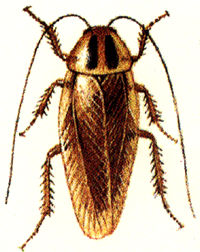
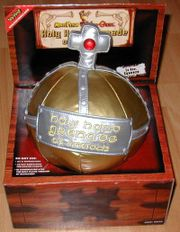

#197814 259 2006-07-02T13:23:49Z Spiker Way too much to read through in one sitting so im not sure if these have all been suggested
1. Give n different powers for the colors you get after beating chapters, nothing that would mean more keys, like running faster jumping higher wall jumping better, one per color
2. Many more columns, many many more
3. Maybe a few differnt types of enemies or upgrading on previous ones, like drones home diagoally or mobile turrets or something of that matter
4. I would love a tutorial for map-making on the download page, like chasethebase said but a tutorial on everything you need to know for noobs like me
Yea that was 4, sorry
#197815 35 2006-07-02T13:28:32Z Spiker Yea well i used to play it and i go on time to time
yoryan606
Level: 93
Owned you all with my nerdiness
#197817 10 2006-07-02T13:35:56Z Spiker i had a lot of trouble doing this level especially because you cant ride thwumps while wall jumping, they act like a normal wall that moves away, which made it very difficult, i got it after about 30 tries, one of the longest times ive spent on a level
#197840 15 2006-07-02T15:06:14Z Spiker Especially in the event that, as you say, it comes down to your outlook in life. Anyway, whether emo is actually a subculture isn't particularly important.
I agree entirely with what Clovic and Atilla say. Emo is not a personality at all, but the fact that it is an overused sterotype in our world means that people get the wrong concept about them. Emo's dont have to wear girl jeans or cut themselves, these are all just things people now associate with emos so much it has become an almost expectation. So they think about the world differently, thats no reason to be judgemental. Everyone does in some way.
#197841 12 2006-07-02T15:09:56Z Spiker i got a virus once, it was spyware after downloading hoghscores, but my computer is dumb anyway so that might just be me
#197842 177 2006-07-02T15:13:14Z Spiker 1. No 3d, way too complicated, unless u totally revamp the game which probably ownt happen
2. It would be a hand hold game or come in a package of games for console like the namco museum package for game cubes
3. You would need to be able to download new maps somehow which is why psp with wi fi is an obvious choice
those are my thoughts on n for a hand held or console
#197844 142 2006-07-02T15:17:12Z Spiker this is one of the most helpful threads ive seen, thank god it exists
#197846 233 2006-07-02T15:20:33Z Spiker Finally decided to get rid of this to save millions of people from becoming stupider
#197849 48 2006-07-02T15:23:37Z Spiker slow mo in n would be a very interseting feature, bullet time with chain gun drones, awesome just thinking about it
(hopefully this puts it back on subject)
#197853 10 2006-07-02T15:27:37Z Spiker very cool for a frist flash game, im working on one myself and it will hopefully be out by oh august
#197882 10 2006-07-02T16:43:21Z Spiker thats a really neat concept and i like it, i thought of this before when i was thinking about how enemies could be modified for better effect. maybe in n2
#197887 654 2006-07-02T16:49:18Z Spiker /\ banned for banning too many people
#197893 21 2006-07-02T16:53:03Z Spiker i like Mysterious Evil Robot Arms that shoot lasers and cause death
#198474 238 2006-07-03T23:02:37Z Spiker That's the most retarded thing I have ever, ever heard, ever. I am now that much stupider for having read it.
yea kablizzy, when u speak with the vocabulary of a 5 year old in a 14 year olds body it sounds retarded quite often, and yea it was a stupid post, and yea i dont know anything about sex because im going to be the 200 year old virgin, and yea i shouldnt even have posted it, but i did, so i apologize
#198482 109 2006-07-03T23:19:30Z Spiker well people have already said the gravity gun so ill just say it a different way
"you can call it the zero-point energy manipulation gun, if you really want too"
#198483 23 2006-07-03T23:21:35Z Spiker to take away from the diversity of these arguements, simply psp
#198727 242 2006-07-04T13:36:49Z Spiker not even i am stupid enough to mess with a mod
#198780 367 2006-07-04T17:05:04Z Spiker Hey, I'm Connor Lewellyn of Pittsburgh, used to live in manchester but moved here, i started n a few months ago and got hooked. Not really good at anything, just your average every day noob
#199027 13 2006-07-05T02:20:22Z Spiker hey i didnt start n very soon, actually i was on stickpage and i found it and i played it and i got it, about 3 months ago, and im about 5 episodes away from beating it
#199035 11 2006-07-05T02:34:41Z Spiker wow i spent all that time making complicated moves to get through the thwumps, and all i had to do was one jump

#199078 15 2006-07-05T06:14:38Z Spiker i cant play n any more, it broke

#199234 94 2006-07-05T16:31:47Z Spiker since im a noob to the forums and i really dont want to bother you with a request, what can i use to make sigs, or is there a forum i can look into?
#199362 113 2006-07-05T23:14:44Z Spiker
He is probably better than any other english player out there. And he's not a diver, cut that out.
[/quote]
yea that doesnt make it any better that they won, plus france beat them down either way
#199383 244 2006-07-05T23:47:30Z Spiker Yes, I did not completely understand how to talk on a forum, this is the first one ive been on so thanks for the tip
#199395 96 2006-07-06T00:15:34Z Spiker wow im honored you'll actually make one for me
well I would like a sig with this backround, just cut off the bottom half
http://images.google.com/imgres?imgurl=htt...fficial%26sa%3D
my name in font of your choice top right
n in his falling down victory position on the left
change however you want im not good with matching colors up or anything like that
thanks again for doing this
#199406 1958 2006-07-06T00:44:30Z Spiker rated last 4 for djlos and yahoozys
http://numa.notdot.net/map/49590
one more vote
#199441 663 2006-07-06T02:28:16Z Spiker /\ banned for checking nv1.5 link even though its obvious its not that
#199442 1102 2006-07-06T02:32:33Z Spiker 9/10 top 3 best flash avs ive seen ever
#199580 8 2006-07-06T15:11:15Z Spiker orange
#199581 481 2006-07-06T15:13:27Z Spiker /\ most likely to be killed by chuck norris
#199595 485 2006-07-06T16:16:42Z Spiker /\ most likely to camp an entire round of cs
#9914 1 2006-07-06T16:22:49Z Spiker Just list your top three favorite games from any hardware on any era
Mine are
1. Counter Strike
2. Rachet and Clank
3. Legend of Zelda
I'd like to see what all of you out there like to play
#199601 37 2006-07-06T16:52:13Z Spiker i really doubt u ARE zezima because he still plays, dur, im a nerd and i know these things
#199603 247 2006-07-06T17:00:59Z Spiker Well all I meant to say was that the people in my grade have had sex multiple times with multiple people for no reason whatsoever. They are people who didn't have sex with a partner because they loved them, they did it because they are dirty hoes who got payed to do it, 14 year olds should not be paying each other for sex. If it is for love then it doesnt bother me, just an age so early as this seems albeit odd. Plus we already persecuted me for that completely stupid post that I wish never happened so if you would calm down this can all be sorted out
#199611 122 2006-07-06T17:38:48Z Spiker the funny this is a lot of these jokes are found on popsicle sticks, so as soon as i find a new one ill post
#199617 23 2006-07-06T18:03:06Z Spiker risk, havent played for a year, got pwned by my cousin in africa last time i played, hundreds of the little figurines killing each other, very fun if your smart but if your new it wont be pretty
#199620 98 2006-07-06T18:06:23Z Spiker dude thats awesome thanks man!
#199770 28 2006-07-07T02:10:01Z Spiker 16 is the evil number
i saw this game a while ago and it came up again now, all under different names and the only thing different is the menu screen
#199781 21 2006-07-07T02:30:54Z Spiker You got to go with future, nothing makes an RPG like a post-apocalyptic earth covered with mutants and robots and all sorts of weird junk
#200037 8 2006-07-07T18:37:20Z Spiker ohh sounds cool, do a lot of people use it or is it something that we have to set up a server time and play then?
#200039 41 2006-07-07T18:49:26Z Spiker hackable what are you talking about, unless its a large scale hacking you go down within a matter of hours, they've eliminated almost all places where you can 'cheat', so if you think its easy to hack, try
#200072 43 2006-07-07T20:29:53Z Spiker zezima is the only person in the game to have level 99 in everything, first on the hi scores list for total levels
#200090 290 2006-07-07T21:10:31Z Spiker /\ has a quote from testpilot in his sig
#200096 9 2006-07-07T21:41:13Z Spiker If this is still going ill be in
Name-Tallon
Infantry-Rocket Grunt
Heavy-Artillery
Light-Anti-Air
Air-Helicopter
Fleet-Destroyer
#200327 25 2006-07-08T15:49:19Z Spiker sonic>sega>game corporation>nintendo>mario
i made that needlessly longer than it had to be
how about ninja and pirate
#200328 294 2006-07-08T15:51:06Z Spiker ^said theadster uses file lodge
#200398 183 2006-07-08T20:31:32Z Spiker Funk Show Brother
by Fatboy Slim
#200435 298 2006-07-08T22:14:11Z Spiker ^has a bouncing ball for a sig and av
#200436 185 2006-07-08T22:16:21Z Spiker Stigmata
by Ministry
#200439 252 2006-07-08T22:20:33Z Spiker Are these people actually selling themselves for a profit, or are you exaggerating?
No there selling themselves, im positive of that, dont ask how
#200464 129 2006-07-08T23:17:40Z Spiker you get a flaming fat guy falling from the sky
*inserts shampoo
#200469 11 2006-07-08T23:31:58Z Spiker You shouldn't be punished, or if you are the guy who did it to you should be punished as well. But, unfortunately, i've learned that punishment in school is extremely unfair and biased so fighting it only gets you in more trouble.
Something like this happened to me, lets just say backpack football, an unfortunately timed squirrel, and a shattered window
#200488 300 2006-07-09T00:28:59Z Spiker ^capitalized the word knows
#200490 14 2006-07-09T00:37:32Z Spiker Alright, no i dont beleivee in god
And to everyone, ill make this quick, it all depends on what you want to beleive, nothing else, its all about your faith or your dis-beleif.
I dont beleive in god because there is no reason for me too, my parents didnt send me to church and when i researched about beleifs it didnt make sense, there can not be one all-powerful being and the proof is lacking. So the bible says all these things, who's to say it right or wrong. Placing all this faith in one book, I just dont see how.
This may affend people that are religious, but so often is the case that aethists say things that religious people scorn.
#200523 82 2006-07-09T02:50:30Z Spiker hey scythe, where are you getting all these, i mean its like a new one every week
#200586 1117 2006-07-09T09:06:50Z Spiker 8/10, smiley face on the screen talks to me
#200616 32 2006-07-09T13:33:36Z Spiker gumball>bubble>ballon>sky>cloud
monkeys and rasberry pie
#200618 12 2006-07-09T13:38:42Z Spiker Great stuff Mega Geo, great stuff
#200623 2001 2006-07-09T14:09:45Z Spiker rated all of dark balls and rated l3x
please rate and comment this
http://numa.notdot.net/map/50741#200801 11 2006-07-10T01:14:50Z Spiker well i tried
#201031 73 2006-07-10T18:55:33Z Spiker I do a backflip onto the wall and rocket towards the bread, dodging all the pieces while spinning.
I land and immediately pull out two cans of zang and hurl them as hard as i can at.....
#201032 35 2006-07-10T18:59:05Z Spiker pirates>ship>water>earth>global warming
grandmas and hot air ballons
#201036 196 2006-07-10T19:12:25Z Spiker Clint Eastwood
by Gorrilaz
#201044 51 2006-07-10T19:55:10Z Spiker Runescape seems to be a popular game that gets old to a lot of people fast. Thats why i take in moderate doses so it still remains a fun waste of time. Most people just do it so much in a short amunt of time they realize how repetitive it is so they quit.
#201060 142 2006-07-10T20:51:42Z Spiker Gets Leroy Jenkins
*inserts wireless headphones
#201092 10 2006-07-10T22:08:16Z Spiker Going with LV on this, Aju
#201094 4 2006-07-10T22:19:35Z Spiker Hehe putting your name in Podular Castularety. I liked The Vertual River Runs Dry best of all but this is a great collection of maps
#201095 25 2006-07-10T22:26:14Z Spiker Great map pack, tested them, downloaded them, wasted lots of time beating them all
#201102 21 2006-07-10T22:51:09Z Spiker This is a great tool and makes some really cool stuff, though the open tiles i sometimes fill in cause it looks weird.
I had a very interesting idea with this though, take open tilesets like castle on crumbling rock and transform them with this, making them more organic. I got some really cool maps from it
#201112 6 2006-07-10T23:09:35Z Spiker Great free fps that does rival the early unreal games, just not nearly as good.
My MetaScore: 83
#201142 176 2006-07-11T00:32:13Z Spiker I really like these levels and I wish i had seen this much earlier, if I have time ill PM you a map or two but I dont think my input will be any good, or if it is any good the series will most likely be finished
#201146 2 2006-07-11T00:41:31Z Spiker you froze my n, and i peaked at about 5000 before it died
#201150 8 2006-07-11T00:54:03Z Spiker By far the bes example of this technique done, though if the two chimneys level was more decorative it would have been cool
#201157 2 2006-07-11T01:19:04Z Spiker If i can get people to join, ill judge, if i cant, then ill be the solo contestant
#201295 17 2006-07-11T15:18:24Z Spiker No, i think its a neat idea so i can combine a cave jumper and block action level, my level will be done soon
#201337 134 2006-07-11T17:31:29Z Spiker Great idea and execution
*wishes he had heard about this earlier so he could try and help*
Oh well
#201346 3 2006-07-11T18:03:51Z Spiker The maps are going to be very similar, sure there are going to be those amazingly orginal maps by those really good mapmakers, but for the most part its gonna be the same. Even with that, you could make some pretty fun levels
#201380 202 2006-07-11T19:40:37Z Spiker Sissyneck
by Beck
#201384 148 2006-07-11T19:42:55Z Spiker Gets an albino penguin
*inserts 4 cow stomachs
#201441 1722 2006-07-11T21:42:51Z Spiker granted, but the definition becomes hairy monkey balls
i wish i wasnt such a noob
#201444 2 2006-07-11T21:50:24Z Spiker Alright, think of some new map names, dont cluster things together, work on your tilesets. Probably nlag is the best of the 4, but just work on your maps some more
#201447 2018 2006-07-11T21:56:44Z Spiker Rated Bobo's, 15's, and both of bhauths
http://numa.notdot.net/map/43434 My First Map
#201521 21 2006-07-12T01:54:48Z Spiker I will have my entry finished soon, its a remake of my map In Limbo, which was supposed to be entered but i didnt like the cave part so i just went with it as a regular map, but the remake i will post here soon
#201543 20 2006-07-12T02:37:29Z Spiker I dont know whats worse though, cant decide. Probably snipers, unless the people complaining rant on about how there maps get sniped and say give good ratings. If its resubmit cause snipe, oh well, it doesnt affect me
#201545 4 2006-07-12T02:39:12Z Spiker Well i cant make tilesets for crap so yes please, whatever you want to make is fine
#201549 2 2006-07-12T02:41:08Z Spiker I like it, just add some gold and it would be cool and userlevel friendly

#201561 12 2006-07-12T02:58:26Z Spiker You all must have learned by now that people respect you more for being a solid mapmaker and for being a friendly user then for being in the top 10
Unfortunately for all us people starting to make half-way decent maps, sniping means that no one looks at our maps due to bad comments low ratings. You'd be surprised how many people skim throguh comments and look at thumbnails and rate without even playing, especially new people that arent well known in the community
#201576 11 2006-07-12T03:17:02Z Spiker Same with barbara
#201580 152 2006-07-12T03:24:12Z Spiker You get nintendo
*Inserts backspace key
#201590 22 2006-07-12T04:11:15Z Spiker Sorry for double post and sorry for me not submitting to numa, but i already submitted a map like it to numa (I didnt think i would make an entry so i just submitted my attempt) so here is the data
0000000000000000000000000000000000000000000000011000011000011000011000110000110000110000110000000000000000000000000000011000011000011000000000110000110000110000000000000000000000000000011000011000011000011000110000110000110000110000000000000000000000000000011000001111111111110000110000000I>0000>1110000000000000000?0002110110000110000G031L000J101100001100111111I000000000000000010011A00000G000011000002001100G40>1000011000000001102J1G001111111111140011H0>11001111111150>10011140JI0011115>1100?111111M0000?1111@0F11@0>M5>52@000310202100F020000000M00J114000JH000000000000000011M0000000000000000@GH01@0?40000G00G000000111K1I0F100035021400000FA2>1000140K100?110?H00000010001111111111111@K0000100011111111111111111111|5^348,312!9^36,36,1,0,18,12,1,0,-1!9^36,36,1,0,19,12,1,0,-1!9^36,564,1,0,19,12,1,0,0!9^36,564,1,0,20,12,1,0,0!11^468,348,468,36!0^228,468!0^240,468!0^252,468!0^228,324!0^240,324!0^252,324!0^156,396!0^168,396!0^180,396!0^84,324!0^96,324!0^108,324!0^156,252!0^168,252!0^180,252!0^84,180!0^96,180!0^108,180!0^228,180!0^240,180!0^252,180!0^84,468!0^96,468!0^108,468!0^84,36!0^96,36!0^108,36!0^156,108!0^168,108!0^180,108!0^228,36!0^240,36!0^252,36!0^300,108!0^312,108!0^324,108!0^372,180!0^384,180!0^396,180!0^444,108!0^456,108!0^468,108!0^372,36!0^384,36!0^396,36!6^396,36,0,0,0,0!10^168,360!10^384,144!10^168,72!3^36,276!6^372,180,1,0,0,2!6^108,36,0,0,0,0!6^84,180,1,0,0,2!6^108,468,0,0,0,0!6^228,468,1,0,0,2!11^756,60,756,60!9^324,324,1,0,13,14,1,0,-1!9^324,324,1,0,14,14,1,0,-1!9^324,324,1,0,15,14,1,0,-1!9^372,300,1,0,13,12,1,0,-1!9^372,300,1,0,14,12,1,0,-1!9^372,300,1,0,15,12,1,0,-1!9^348,396,1,1,13,13,0,0,-1!9^348,396,1,1,14,13,0,0,-1!9^348,396,1,1,15,13,0,0,-1!9^324,276,1,1,13,12,0,0,0!9^324,276,1,1,14,12,0,0,0!9^324,276,1,1,15,12,0,0,0!9^348,276,1,1,13,12,0,0,0!9^348,276,1,1,14,12,0,0,0!9^348,276,1,1,15,12,0,0,0!9^372,276,1,1,13,12,0,0,0!9^372,276,1,1,14,12,0,0,0!9^372,276,1,1,15,12,0,0,0!0^372,276!0^348,276!0^324,276!0^348,396!3^630,204!9^540,228,0,0,28,2,1,-1,0!9^708,228,0,0,27,3,1,-1,0!12^318,348!12^372,396!12^324,384!0^372,372!12^378,348!12^360,432!12^312,462!12^336,504!12^402,492!12^390,444!12^480,463!12^432,480!12^384,552!0^570,450!0^558,450!0^546,450!12^516,444!12^492,408!12^432,408!12^576,264!12^720,276!12^690,222!12^738,426!12^684,486!0^684,498!12^720,456!12^738,474!0^684,534!12^672,534!0^738,540!0^738,528!0^738,516!12^720,540!0^642,474!0^654,534!0^528,240!0^546,240!12^522,222!12^516,282!12^552,216!12^504,252!12^516,504!12^468,510!12^528,576!12^474,564!0^402,570!0^414,570!0^390,570!0^366,522!12^378,456!12^426,564!12^432,540!0^450,444!0^474,438!0^510,474!12^642,516!12^600,528!12^564,540!0^600,510!0^570,516!0^546,552!12^708,390!12^666,228!0^714,162!0^588,36!0^600,48!0^654,36!3^708,60!0^756,84!0^744,84!0^732,84!0^720,84!0^708,84!0^696,84!0^696,36!0^708,36!0^720,36!0^732,36!0^744,36!0^756,36!0^702,342!0^714,342!12^708,378!12^582,456!12^552,432!0^492,570!0^504,570!0^516,570!0^48,564!0^36,552!0^36,540!0^60,564!0^36,48!0^36,60!0^48,36!0^60,36!0^456,36!0^444,36!0^468,48!0^468,60!12^672,312!12^552,366!0^570,360!0^570,372!0^570,348!0^558,408!0^570,420!0^582,426!12^666,456!12^630,468!12^606,402!7^660,396,3!7^612,324,3!12^660,390!12^612,318!0^570,138!0^534,150!0^552,132!12^612,144!12^558,180!12^540,132!12^564,126!12^696,120!0^582,222!0^582,234!12^582,204!12^624,48!0^582,78!0^582,90!12^672,288!0^696,276!0^714,258!12^660,108!12^618,132!12^696,192!7^636,108,3
#201728 24 2006-07-12T16:07:58Z Spiker i dont know how and it was late, sorry
#202013 1726 2006-07-13T03:04:48Z Spiker Wish granted, but its reversed in the good ways of the bad people
I wish for a house to fall on me
#202016 156 2006-07-13T03:07:06Z Spiker Gets biggest computer in the world
*inserts balsa wood
#202023 21 2006-07-13T03:25:35Z Spiker Viper, try making something like this, just try and see how difficult it is. Dont be like that, these maps are great fun to me and to a lot of people. so dont say things that disrespect the authors, they work very hard on these
#202028 14 2006-07-13T03:31:57Z Spiker Thats fun to do, wait im just spamming too, darnit
Back on topic why was this resurrected, albeit just a few months old, all discussion was already said the time he was banned
P.S. Why arent the banned persons things locked after say two months of inactivity
#202034 25 2006-07-13T03:50:12Z Spiker That was one of the most random things someone could have said right now, awesome
I have too much hair, but if i cut it it looks like a chia pet
#202037 1728 2006-07-13T04:27:46Z Spiker But that's bad in itself
Yes but you didnt say wish granted, so hah!
Wish granted, but Pivot blows up
I wish for a million dollars, but i want to be in an enclosed solid concrete room with one door that i have the key too and nothing bad can ever get in and the room cant collapse or get smaller cause its super strong and thers no drain for me to drop the key down or anything like that.
Try and mess that up (which shouldnt be too hard)

#202040 22 2006-07-13T04:35:00Z Spiker Sounds like a cool idea, ill see if i can get on then
And i dont know much about the bots so thanks for the forum link kamikaze
#202162 22 2006-07-13T14:49:21Z Spiker I would say 3.5 or 4 is average, depends on the quality, though 3 is the technical average but i see a lot more maps that are average getting ratings like 4's and 5's, some of my maps are a little over-rated but the scourge of new voters give out 5's like bun cakes at a fat people convention
#202165 4 2006-07-13T14:55:58Z Spiker It does sound like a good idea because when I look at the newest section i see a ton of maps that say first map, second map, and when i play them they mostly stink. People pump out crappy maps so much its not even funny. But when you submit 10 maps the same day and they are all the same and they all suck, it gets annoying. Plus they knock donw the few good maps submitted
#202168 78 2006-07-13T14:58:06Z Spiker Uhh, ill just use my orginal sig i guess
#202169 115 2006-07-13T15:02:13Z Spiker Hmmmm,
Lonely Clovic's Saddening Sorrow-induced Shellfish Service
Hmmm thats totally random and not that good but i dont do alliteration well
#202227 7 2006-07-13T17:19:04Z Spiker Hmmm, uh alright ill join, since all the other RPG's ive been in died
#202229 84 2006-07-13T17:25:22Z Spiker since im not meteo i dont have to worry
I pull out a 3 year old baguette and beat *next person* to a orange juicey pulp
#202230 2 2006-07-13T17:28:31Z Spiker hold on your white right?
#202329 164 2006-07-13T21:02:06Z Spiker Gets a one-way ticket to Alberquirqie
*inserts old photos
#202336 16 2006-07-13T21:38:03Z Spiker Better than any of the tilesets I could make, though thats not saying much

#202339 5 2006-07-13T21:40:37Z Spiker no one cares enough to tell me??
I suppose im still a no one to the community then?
#202399 6 2006-07-14T00:31:43Z Spiker Crows Nest Spotter, if you would be so kind Captain Zacko
#202404 35 2006-07-14T00:42:07Z Spiker ^(Yes, I do need a lot of practice with my maps, but i don't submit tons, I submit one every week, not even that sometimes)
Hmmm, again the limit system would work very effectively because it would stop the flood of 5 minute junk that is submitted on NUMA every day by new people who don't take the time and get inspired to make maps, and good map-makers could just save their surplus maps until one of their 'dry days' to submit. Problem solved.
#202405 27 2006-07-14T00:43:44Z Spiker Yea, good idea. This conteset is a really neat idea (not to mention first one i've been in), and I would hate to see it die like this
#202408 7 2006-07-14T00:45:16Z Spiker That brings up an idea for a map with normal doors and gausses, gausses being spot lights, hmmmm
#202409 86 2006-07-14T00:49:53Z Spiker I grab a near by beaver who eats the wood and chocolate
Unfortunately, beavers can't eat chocolate (like I know but this is crazy as it is), and it becomes a giant bubble waiting to explode, first I fry it to make it food and lob it at............
#202410 11 2006-07-14T00:51:31Z Spiker The key was waiting so it could use the cook, for you see, the key was evil.
#203010 9 2006-07-15T15:11:31Z Spiker No, that would be unfair, just use the map-rating thread in the important topics posts above this topic
#203013 5 2006-07-15T15:19:44Z Spiker I've seen it used in a level before, I think tempus fugit did it. What I saw was 3 drones move around in circles, but the one on the far right stood still, but i've seen another glitch where some drones move faster than other
#203015 34 2006-07-15T15:26:22Z Spiker Edit: Nvm, didnt see there were two pages sorry for the worthelss post
#203024 6 2006-07-15T15:50:28Z Spiker It doesnt seem to work, but i'm on my grandmas computer which is like 5 years old and so full of junk, so when i get home i'll check it out.
#203027 26 2006-07-15T16:01:22Z Spiker Call me lazy swine for all I care, I can't think of a good piratey nickname. Pineapple Bob, ha, and no relation to spongebob in case you were wondering. Actually thats a good explosive guy name. (Will explain that if anyone wants the name)
#203093 4 2006-07-15T20:12:42Z Spiker Not sure, maybe ill put the contest thread any new maps I submit, so someone will be bound to at least look at it
#203094 8 2006-07-15T20:14:43Z Spiker Lol, what did it look like? And if you can't find it, don't fret, there are tilesets hanging around everywhere and I could jack a few of them
#203103 4 2006-07-15T20:24:07Z Spiker Damnit, I never thought of it like that, and now that I do, your right......damn you for being right
*bashes head against wall for being so stupid and noobish*
#203107 591 2006-07-15T20:27:07Z Spiker I think he said something about Kablizzy leaving and that was his last connection here when he left but i'm not sure about that at all
#203114 47 2006-07-15T20:43:23Z Spiker Man these levels are a piece of work, some truly great maps, by some truly great authors
*finishes all levels after posting and brain explodes

*
Edit: Numa, thats a little random in this topic
#203115 8 2006-07-15T20:47:24Z Spiker Are you sure tempus's drone wasn't NaN'ed, spiker?
Honestly, I have never spent time figuring out what you can do with level data, so I don't even know anymore, plus i thought NaN'ed dones didn't move at all
#203120 28 2006-07-15T21:03:13Z Spiker Yeah I know, I liked the map too, wonder who the sniper is?
#203126 112 2006-07-15T21:32:50Z Spiker I use my pearly blue eyes to stun my enemies before I rip out their kidneys.
Hmmm, thats very similar to this. "Sticks and stones may break your bones, but a glare from Chuck Norris will liquiefy your kidneys"
And to keep this from being just spam, a weapon I have come to enjoy is the Heckler Kosh SMG with attached screw grenade launcher........or you know the BFG
#203150 11 2006-07-15T22:38:39Z Spiker I'm totally confused and I'll just wait for the nxt one to come so I can do it right next time
#203153 18 2006-07-15T22:42:37Z Spiker When you beat N
Your computer blows up, and not to hide the secret, because that is the secret. Now you have to pay hundreds of dollars for a new one not to mention medical and home bills. Bwuhahahahahaha you just won yourself a whole load of debt
Man if that were really it, i'd really like to know how they did it
#203157 23 2006-07-15T22:50:12Z Spiker It's pretty good for a first version, lets see where it goes from here
#203164 23 2006-07-15T22:57:24Z Spiker Very very cool, i'm surprised no one has done this before though. Oh well nice job.
Thanks LoD for telling me what to do.
#203169 327 2006-07-15T23:04:03Z Spiker Ideas come to mind, shuts those ideas out, thinks of new ones
#203172 38 2006-07-15T23:13:21Z Spiker just edit it into your first post and you never have to double post
#203179 12 2006-07-15T23:45:13Z Spiker It all works fine for me but N starter is how to fix it, or at least try too. If the problem continues, then maybe run some virus scans and spyware searches. Last resort, buy a better computer, or stop playing iTunes with N, or you could do the working thing and play CD's.
Edit: Here is link
http://metanet.2.forumer.com/index.php?showtopic=9193#203184 14 2006-07-15T23:49:53Z Spiker Yea, that was the first place I looked, I knew it was by LoD and all his stuff is in there. Does it see strange that an add-on to N would be there?
#203400 25 2006-07-16T13:53:14Z Spiker I don't think I've ever hit it on purpose, maybe just once to see what it does. Like Qix I have a very fast computer
#203404 25 2006-07-16T14:03:37Z Spiker Maybe it would have been more relevant earlier in the discussion.
The only way 2-player would be possible right at this moment is to have people take turns like , and not at the same time, like Kavukamari and jeca said. This can be done manually, though, using userlevels, and you can still race to see who has the best time, just takes a little longer than if there were a specialized program for this purpose.
#203410 32 2006-07-16T14:26:11Z Spiker Edit: Dangit, I knew I failed English for a reason, didn't understand what you had said. Sorry Trogdor, my sincerest apologies for a (now) worthless post by me.
#203414 206 2006-07-16T14:34:09Z Spiker Enter Sandman
by Metallica
#203526 44 2006-07-16T20:38:45Z Spiker Sharks>Kill>Death>Death Metal>BloodBath
Radiohead and George Bush
#203553 667 2006-07-16T23:20:00Z Spiker ^banned for repeating yourself
#203555 28 2006-07-16T23:38:18Z Spiker It would be a cool addition, but it would be very hard to make good levels with it, just like how z object placement can make a level bad. Art would be much easier with tiles though.
#203570 137 2006-07-17T00:50:45Z Spiker Why don't we just keep it Lonely Clovic's, short and simple, even though I laughed my heart out reading some of these. I'm probably just saying this because I have no creativity and can't think of stuff like these names. *sigh*
#203575 40 2006-07-17T01:09:26Z Spiker New map in the making sharc, I would just like an opinion from the 6 members that read this topic. (15, The_N, traction, sharc, Borealis, me) What kind of map would you like to see made, and be specific, because I am out of inspiration right now and I don't want to leave it unfinished. Need ideas!
#203588 1646 2006-07-17T02:26:17Z Spiker I hate those adds, at least it's not a link. 6/10
Honestly, I thought the old one was better though
#203590 34 2006-07-17T02:41:24Z Spiker I thought you and Atilla were talking about how old the topic was and I was looking through the posts and saw the one I had made about a month after the last post, so I thought you were annoyed that someone ressurected it. Stupid me.

Back on topic so this isn't spam, I still think combining future with horror or conspiracy or both (resident evil), or just future by itself would make an effective RPG.
#203593 6 2006-07-17T02:56:30Z Spiker Yes superior mindpower obby, I was hoping I could connect wtih someone. 'I can kill you with my brain'. And I have a sample entry but i'm not sure, should I post in on NUMA to attract people? It sucks like a noob map freshly whipped up in 5 seconds, which is why i'm unsure about submission.
#203601 14 2006-07-17T03:11:01Z Spiker But yeah slower ms/f really helps when doing some of the crazy stuff on high-scores. I've watched a few and the people who do them are very good, and insanely lucky. Why don't some of those high-score holders come and explain their amazing skills?
#203603 77 2006-07-17T03:13:22Z Spiker Lol, i'm working on one but i'm not really sure anyone is fighting the last person anymore, so i'll just pick a fight with someone.

#203609 14 2006-07-17T03:39:50Z Spiker Maybe people have become nicer on the forums..............

. Well I can't think of any explanation to, well, explain it. I like the learning curve already built in, but this is not my place to talk because I still have four more episodes to finish, oh well.
#203611 23 2006-07-17T03:49:31Z Spiker There are always assholes out there that do stupid things just for the hell of it, so they must be banned. NUMA is as close to perfect as anything like it is going to get, period.
#203612 1649 2006-07-17T03:52:35Z Spiker Alright alright, I chuckled when I saw someone had put that ad in their sig, sorry for rating it twice but i'll be more fair this time. 8.3/10
Your time will come McP, your time will come
#203613 16 2006-07-17T03:56:53Z Spiker Sniper mod=lots of fun. I only currently have the demo with bloodgulch multiplayer, should I buy the full game when I get the spare change or save up for when Halo 2 comes out on PC. It will come out on the PC eventually, I know that for a fact, semi-fact.
#203617 27 2006-07-17T04:21:33Z Spiker Terribly sorry for the double-post, but how many people do we need to start, because I really don't want this to die.
#203618 5 2006-07-17T04:25:25Z Spiker Hmmm, yahoozys are normally interesting and orginal, not sure how though, he's made so many maps.
#203748 23 2006-07-17T16:00:55Z Spiker Yea I think if someone did post it on google, Metanet would be all over them like ugly on an ape.
When you beat N, you get the secret game of N, Combat Evolved, a FPS with the latest graphics in which you play the hardened veteran Master N and fight against the hordes of drones that threaten your homeplanet.
#203753 6 2006-07-17T16:17:34Z Spiker Yea I had that problem, with switch doors and trap doors, but I'm not sure about normal doors.
#203770 673 2006-07-17T17:22:37Z Spiker ^Banned because I cant read your avatar fast enough
#203787 10 2006-07-17T18:23:25Z Spiker Obby, Evil just mis-understood your post. He thought if Korea gets better technology then Japan, not actual missles going farther in distance
N. Korea doesn't seem to have the funds to create a workable missle platform, unless of course someone decides to aid them in it illegally. N. Korea looks like a terrorists dream to me. A smart terrorist could just slip Kim some extra funds and poof, they have a useable missle. Albeit getting him the funds and letting him build the missles in secrecy seems near impossible now, but anyway. After that, this becomes much more serious. Even if they can't wage war on all of us they can cause quite a bit of havic on the world, targeting major cities within China and Japan. Since we don't have the technology to accurately shoot down missles yet, that could be very bad.
On the Isreal Conflict,I don't beleive an end is in sight anytime soon.
#203788 181 2006-07-17T18:29:26Z Spiker Yes, but I thought they changed it so you couldn't if you upgrade your PSP to like 2.0
#203799 3 2006-07-17T18:56:36Z Spiker YES, READ THE FORUM RULES
And he's saying don't ask for help on episodes look at high-scores, which isn't good advice because high-scores runs are very difficult to pull off.
#203802 4 2006-07-17T19:00:56Z Spiker You can also get it from the bounce blocks, it just takes longer and you have to beware of gausses. The only problem I had with this level was getting the right angle and speed to launch myself through the bounce blocks and not get caught by turrets.
#203804 15 2006-07-17T19:03:35Z Spiker Yea, it doesn't get old fast, but I've seen it so many times I can say everything word for word accent for accent in my head.
#203805 31 2006-07-17T19:10:24Z Spiker I'll be eel skin George, best thing I could think of.
#203807 42 2006-07-17T19:23:06Z Spiker Sun implosion is going to take so long, we're bound to kill off each other by then. No, but seriously, in some-odd number of billions of years, either we've killed eachother off, polluted the world so much its inhabitable and we have to go somewhere else, or if we somehow manage to work together in peace and a ecologically friendly nature, the sun will kill us all. Or there's always the chance for another black plague, just much worse.
#203814 33 2006-07-17T19:53:21Z Spiker Ummm, we can just go now, and you can order the crew people around and they will do whatever you want too, like bots on a game server. But if you want to wait, your the captain.
#203830 12 2006-07-17T20:23:00Z Spiker But rocket launchers are fun to play with. I would say seeker drones because they are unpredictable and annoying. If they followed you no matter what, it wouldn't be so bad.
#203835 676 2006-07-17T20:30:07Z Spiker ^Banned for sniping my signature
#203875 52 2006-07-17T22:45:38Z Spiker Here's my sad attempt, of course I chose a bad map to remake
Hive Jinx V.2#203878 36 2006-07-17T22:52:53Z Spiker They would only be NPC's until we kill them off, accidently of course, and then recruit the people that want to join.

#203890 86 2006-07-17T23:59:27Z Spiker Umm, since everyone likes to pick on the black stickman, I will to. Please work.
Edit: You have to start it from the beggining and maximize the screen so you can see most of it at once.
Attachment (lost): post-6-1153180767.piv
#203891 87 2006-07-18T00:01:00Z Spiker Edit: Really sorry, I posted the same thing twice becasue I'm getting hit with server lag really bad right now.
#203900 21 2006-07-18T00:26:04Z Spiker It's a little late to be posting that me-thinks.
#203908 2074 2006-07-18T00:40:19Z Spiker Rated yahoozy, legiax, and no_common_sense, this needs ratings
Hive Jinx V.2#203909 13 2006-07-18T00:43:45Z Spiker Something tells me this is dead, huh
#203933 38 2006-07-18T01:53:57Z Spiker Two Things:
1. Do we have a weight limit when we go on-shore, so we can't buy an insane amount of ammo or explosives or weapons and take them all on-shore.
2. Can you purchase new ships and have the first or second mate command them. This could fall under, will we be using key elements from games like Sid Meirs Pirates.
#203937 21 2006-07-18T02:02:45Z Spiker Since we don't have the technology to accurately shoot down missles yet, that could be very bad.
yes we do, there is a us destroyer based in japan right now that can do just that, blow up whatever the hell north korea fires that direction, so i wouldnt be worrying about them for awhile ")
Yes, but after reading on the specs of the Aegis system, it is definately not a sure fire thing, so if multiple missles were launched, it would be very difficult for the destroyers to accurately hit them all. Anti-missle technology is not perfect, until then, we can't depend on it.
And Trogdor, they may be a brain-washed facist population, but they have the funds of some of the poorest countries, so if he goes around telling his people to do all these things that cost lots of money, he's going to run out of funds and he won't be a threat. Unless of course my whole terrorist theory comes true. (^read my upper post)
#203942 44 2006-07-18T02:15:03Z Spiker I can do whatever is needed, any player descriptions I could do, because I'm average at N.
#203946 2078 2006-07-18T02:41:00Z Spiker Rated Yahoozys and no common sense
These need ratings and comments please
http://numa.notdot.net/map/52009
http://numa.notdot.net/map/52030#203948 53 2006-07-18T02:48:20Z Spiker Sorry for double-post, but next map, last one will be better than all of these hopefully.
Swimming Down Stream#203951 5 2006-07-18T03:05:43Z Spiker You would need 8 animations for the tiles, times 2 diferent sides......16 new animations for every tile possible, I think. Probably an easier way to do it and cut down on work.
#204003 2082 2006-07-18T13:13:42Z Spiker #204005 12 2006-07-18T13:23:32Z Spiker I'll be buyin a crowbar and a chisel cap'n. Argh, now I be broke.
Yea, I buy the weird stuff.
#204031 40 2006-07-18T16:20:52Z Spiker Couldn't a bottle of rum be turned into a molotov cocktail, just a better one? All you would need is a rag and a flame and boom!
#204032 8 2006-07-18T16:22:15Z Spiker A little bit, he made them for Ye Old Pirate Ship
#204034 2 2006-07-18T16:31:18Z Spiker It's alright, very original though. I've only played it once and it got a little boring after the first hour.
#204035 9 2006-07-18T16:33:47Z Spiker I played Riven when I was 6, I couldn't find a blue button I needed to press so I got bored, so I drew all over the walls with crayons.
#204037 6 2006-07-18T16:36:16Z Spiker Played them all, beat them all at least twice, have all weapons. Pwn3d.
#204041 19 2006-07-18T16:43:57Z Spiker Ya mean we're goin on a dangeous hunt right away Cap'n. Ah well, your the boss.
#204042 42 2006-07-18T16:46:32Z Spiker I'm chalk full of them

.
Speaking of which, i'll just make a big list of possible ideas and you can decide which ones you like and can add to the game.
#204044 88 2006-07-18T16:48:56Z Spiker I don't think he would make such a big joke thread, with all this hype. I'm stumped as a tree in a logging company's back yard.
#204070 209 2006-07-18T17:58:21Z Spiker Revolution
By The Beatles
#204082 686 2006-07-18T18:42:06Z Spiker ^banned for using the word idiot
#204095 2089 2006-07-18T19:30:42Z Spiker Rated Hawkk, RT, sharc, and Borealis
My First Map,
http://numa.notdot.net/map/43434, one more rating
#204102 4 2006-07-18T19:56:58Z Spiker It would have to be optional so that people with slow computers can turn it off.
#204103 10 2006-07-18T19:58:58Z Spiker A V.I.P. Numa might work, but instead, people have to be invited, so you haave to be a well-respected map maker to join.
And viper, if we let anyone with a 2.5 average rating or higher, it would be almost exaclty like NUMA now
#204108 28 2006-07-18T20:03:42Z Spiker no you fool, but the anti-rocket missiles (dont know their names) that we developed in the 1950's for godsake can...
The current system is Aegis, and we don't have the exact precision to knock down missles 100 percent of the time, it's a start but we can't hide behind it like cowards.
Nuculear war means nucuear fallout which means bad for all living things, except cochroaches.
#204110 49 2006-07-18T20:07:13Z Spiker the sun implodes on itself, creating a black hole. Its won't spontatneously explode.
Yes, I really doubt anything like that could happen with our sun, all that happens is when it runs out of Hydrogen, Red Giant engulfs first three planets (us), and thats all we need to care about becasue we'll be dead when that happens.
#10122 1 2006-07-18T20:24:06Z Spiker This was something I thought of while reading the N. Korea and Isreal discussion. You may think anti-missle technology being able to shoot down any missle is a good thing. Well i'm beggining to worry. When the technology does develop, there is a scenario I pictured. Say America gets the technology first. A president comes into office and gains a large following, using propaganda and such techniques. He declares war on the rest of the world. With the anti-missle technology, he doesn't have to worry about missles, so all he does is fire America's missles (we have the most in the world) at oncoming air, ground, and sea units. America is also able to hit major cities in Europe and some in Asia. The reamining population would either have to hide on the other side of the planet, or surrender. This may seem like a very unlikey scenario, but what if something like it happened, or started. I would like to hear some opinions, even if they say i'm being paranoid.
#204119 45 2006-07-18T20:26:37Z Spiker Do we have a skill chart of somesort so that practicing shooting or swordfighting or things like that will pay off later?
#204121 51 2006-07-18T20:28:17Z Spiker Yea we will probably have developed better space travel and found habitable planets by then.
#204130 4 2006-07-18T20:44:47Z Spiker Sorry, let me clarify, it doesn't have to be USA, it was an example. When the technology finally reaches that point, this was the scenario I pictured. And if it did happen in America, strong followings, smart president, marshal law, dicatatorship. This would happen in the future, not anytime soon.
#204135 7 2006-07-18T20:52:18Z Spiker It was just a thought, a seemingly impossible one, but a possible one nonetheless.
#204158 59 2006-07-18T22:14:59Z Spiker It's 91-2, Shine on You Crazy Diamond.
My Last Submission
Irrational#204160 31 2006-07-18T22:18:55Z Spiker There won't be any land for two days! Did'n ya hear Cap'n?
Climbs down and begins practicing accuracy with pistol
#204180 34 2006-07-18T23:19:09Z Spiker Crow's Nest Spotters have pistols with unlimited ammo, and can buy different bullets that are limited in ammo.
Arr, but we do have an unlimited supply of the orginals.
#204190 2091 2006-07-18T23:42:21Z Spiker Rated deja's
Don't you just love snipers, oh well.
Here's my map
http://numa.notdot.net/map/52164#204195 47 2006-07-18T23:45:19Z Spiker Thanks Trogdor

#204198 9 2006-07-18T23:50:22Z Spiker ^That about sums it up
He did seem like a pretty nice guy, never thought he'd be banned though
#204215 9 2006-07-19T00:51:24Z Spiker The Way of The Ninja is about stamina, agility, and all that jazz, not killing people. You are a simple traveler wandering across the path of life collecting lessons and information as you overcome the many obstacles in your path, and apparently your path ends at an elevator door.
#204260 62 2006-07-19T02:34:20Z Spiker It seems like someone is sniping all the entries to this competition.

#204262 49 2006-07-19T02:44:53Z Spiker Eel Skin George
Crow's Nest Spotter
Main Skills
Brawling: 0
Shooting: 5
Demolition: 0
Swords: 0
Speciality: 0
Special Abilities
Climbing: 3
Cooking: 0
Ropework: 1
Repair: 4
Medicine: 0
Sealegs: 2
Strength: 2
Speed: 3
I think that's how its supposed to look right?
#204263 2096 2006-07-19T02:47:45Z Spiker Rated all above me up until my last post.
http://numa.notdot.net/map/52164, needs votes and comments please
http://numa.notdot.net/map/43434, needs votes and comments as well
#204280 51 2006-07-19T04:07:45Z Spiker I just put 0 to mean I don't have any points in the skill yet.
#204433 40 2006-07-19T14:16:31Z Spiker Stops practicing pistol and climbs up to crow's nest, Climbing 3
"Arr cap'n, I see a small ship approaching in the distance, due south west. Looks to be a transport ship, not heavily armed. Seems to carry food and a small amount of coin. I say we make them pay a little fee for sailing our seas, but what be your orders cap'n"
I can't speak like a pirate, or get my colors to work right now, so i'll speak in quotes, action in underline, and off topic in regular
#204446 32 2006-07-19T14:42:24Z Spiker This looks very similar to a Half Life mod I play, aliens that can build things versus humans that cna build things, but this is stand-alone so horay!
#204447 72 2006-07-19T14:45:56Z Spiker At least mines the same.
#204450 689 2006-07-19T14:47:30Z Spiker ^banned for being a noob and having big signature.
#204469 44 2006-07-19T15:18:58Z Spiker "Who we takin prisoner cap'n, I can knock off a few of the armed guards from up here if ya want."
**Cocks pistol and aims at the head of an armed guard while trying to keep steady on the swaing sea, Shooting 5/Sealegs 2**
Edit: Cap'n, is it worth getting into a gun fight? Yes there are only 2 of them, but that don't mean they can' put up a fight.
#204487 31 2006-07-19T15:53:02Z Spiker Is that resurrection, I know people still use it but it's been a year with nothing so posting now is kind of like, why?
#204493 34 2006-07-19T16:15:08Z Spiker I just have one question, does it take a very long time for your computer to refresh the servers? Mine doesn't even get the servers for some reason and i'ts a good computer. There should be a troubleshooting forum in the other games forum, not really, but hey.
#204494 11 2006-07-19T16:18:19Z Spiker Well your post could have other stuff other than just pointing out a spammer.
And the story, ummmm, yea I talk to people in my head, but it's not nearly as weird as......well yea it is, but this is weird too.
#204495 55 2006-07-19T16:21:27Z Spiker Trogdor, since you were apart of the uncharted west, should we do the actions in a similar way? Like how I posted mine?
#204506 937 2006-07-19T16:58:08Z Spiker Since everyone else is posting pictures, maybe I should post a picture of me. But then your computers would explode because I have a freakishly large head.
#204547 36 2006-07-19T18:20:55Z Spiker I did all that stuff, but I needed to re download it in a different spot. I play as Spiker5 and mostly on Armeggadon Massive server. I could make a server for the people here if enough people like this game and play it.
#204797 11 2006-07-19T23:10:27Z Spiker Uh oh, Tremulous beats the crud out of this.
#204938 15 2006-07-20T02:45:46Z Spiker The forum isn't even run by him anymore.
Get ponies away, death to them all, let their bodies burn and fuel the fires of hell!
Where do you get the pony resistence things in you sig?
#204942 13 2006-07-20T02:49:25Z Spiker The resistence will prevail over all.
#204945 8 2006-07-20T02:57:29Z Spiker I think spontaneous suicides are from extreme esteem drops and a lack of self control. Those sudden esteem drops can easily be cured with physical activity...but thats all i can touch on in this subject
Hmm, I have very low self esteem and self confidence, thought about suicide a few times when things were looking grim. Realized it's better to go on living life then just ending it right then and there.
#205102 50 2006-07-20T14:18:13Z Spiker Jumps across to burning ship, grabs supplies and swings back to our ship right before the ship sinks.
"Are ye sick in the head Sploder, I couldn't get all the supplies before you tossed those bombs in thar. Now we lost a ship, we couldve sold it! But we all be new to the sea"
Don't you have to ask before blowing things up anyway?
#205106 38 2006-07-20T14:22:44Z Spiker Yea, I could make a server called Metanet with some password we make up and we could all play. Humans are the best team for me, even though tyrants are almost impossible for one human to take down.
#205119 45 2006-07-20T15:11:11Z Spiker No, I think from WW2 we owe them more than they owe us.
#205136 29 2006-07-20T16:10:51Z Spiker And the resistence takes the lead over pony supporters 23-17
We shall cleanse metanet of all evil ponies forever!
#205185 3 2006-07-20T18:16:05Z Spiker You know, maybe 40, 50 times.........I don't have a problem!
My thoughts on it, it's ok, I mean it's got some hard competition, Half Life, Killzone, even Metroid Prime Chaos.
#205203 42 2006-07-20T19:27:35Z Spiker No, I just go finished playing a game on acst, where there were like 3 tyrants running around, along with a bunch of minor creatures. All you need there is a chaingun, a jetpack, and grenades. I got 19 kills, and 4 were tyrants.
And the evolve things is number of kills I think
#205205 63 2006-07-20T19:30:24Z Spiker Since I did a lot of climbing and practiced with my pistol, does that mean that I get new skills, and if so, how much?
#205226 57 2006-07-20T20:52:35Z Spiker "LAAAAANNNDDD HOOOOOOOOOOOOO cap'n. An island be off the port bow. Looks to have a small town on the coast with a dock, we best be puttin the ship down for a few."
#205229 44 2006-07-20T20:56:56Z Spiker If it's a big level like transit, I use jetpack, light armor, helmet, grenades, and flamer or chaingun, sometimes even plasma rifle.
If I want to cause some damage I use a battlesuit and a flamer, a lucifer cannon, or chaingun. I don't like lucifer cannon too much though.
The only problem I have with the game is the bullets firing to bullets impact, which annoys me because I have to look ahead of my target.
To activate jetpack, you need to scroll over the jet pack and hit mouse3 or enter to activate. Jump goes up, crouch goes down. It stays active until you scroll over it again and hit enter or mouse3 again
#205231 947 2006-07-20T20:59:26Z Spiker Hmmm, that was a little mean WYWH, and obby, I think he does it just to try and bug us.
#205310 47 2006-07-21T00:57:14Z Spiker Only does damage too machines, it's like the advanced dragoon secondary attack. I like advanced grelchers because they can climb up walls and that adds a whole new dimension to building. Humans tend to bunker down early in the game and try to hold out, unless they get lucky and then they go on a rampage with battlesuits and lucifer cannons. The humans, after studying, have very few effective bunker spots as most can be overrun very easily.
I'm making a server on Friday, will post time name and password then.
#205344 66 2006-07-21T03:40:55Z Spiker Yea I agree, maybe .5 points for a little and one for a lot, or 1 for a little 2 for a lot.
#205345 66 2006-07-21T03:43:04Z Spiker Yes, he is the god of this game and can sort of decide your fate. This seems more like a fun play-on game about pirates. He is the dungeon master and we are his pawns, so Zacko, take charge!
#205513 4 2006-07-21T15:12:14Z Spiker I think I threw up, after laughing for a few hours.
#205628 32 2006-07-21T18:25:55Z Spiker Even though it's old, i'm all for it in the next version, of course I really don't have a say in it because i'm not the one who has to do all the programming for this to work.
#205634 5 2006-07-21T18:41:18Z Spiker No matter how many times you say it, people are still going to ask the easily answered questions like 'Where can I download soldat?', or 'Whats this about a Halo 3 Tailer?'.
#205708 9 2006-07-21T20:12:28Z Spiker I played this a while ago, up to building 3.
#205749 4 2006-07-21T22:15:55Z Spiker Sniper, and yes, maybe one topic about Halo every once in a while but not all the time, that's what Halo forums are for, this is for N
#205750 70 2006-07-21T22:17:18Z Spiker Just save all that in a word document, much easier.
#205755 2122 2006-07-21T22:51:08Z Spiker *pant, pant, pant* Just rated and played all maps up till my last comment, if I don't have a comment somewhere, just tell me.
I know this has 9 votes, but no one commented it and those who did gave it a 4.5, but the overall rating is 3.5, please help me explain.
http://numa.notdot.net/map/52164#205757 2 2006-07-21T23:05:03Z Spiker This would probably be better in BnT, or you could just go talk about the ponies in one of their topics, but I understand, ponies, gotta go.
#205769 75 2006-07-21T23:40:39Z Spiker Eel Skin George
"I'll be takin this generous amount of money cap'n"
Takes 30 doubloons from bank
"Now i'll be buyin an iron sword from ol Stever hear"
Purchases iron sword
"I be needin some practice with this thing, anyone here want to help?"
#205770 14 2006-07-21T23:42:53Z Spiker Umm, Clovic's on his own side, waging war against both sides.
#205771 83 2006-07-21T23:44:33Z Spiker I hate ponies, because when I was riding a horse (I don't care if their different), it kept farting, so all ponies stink.
#205801 6 2006-07-22T01:36:04Z Spiker All new stuff has been by teflon as well, which supports the fact that he should put stuff like this in a halo forum.
#205805 50 2006-07-22T01:45:17Z Spiker Alright, I have a topic for the status of my server, in other words when it's online and when it's not.
#10204 1 2006-07-22T01:54:22Z Spiker Server Name: Metanet
Mods: None
Maximum Players: 10
Levels: Rotation (Transit first)
Current Status: Offline
------------------------------------
Post in here before you go play so I know who plays.
#205825 4 2006-07-22T02:38:21Z Spiker It would be better if we set up a time for the server/
#205830 1143 2006-07-22T02:50:43Z Spiker Wow Obby, that avatar is hilarious. 9.99/10
#205944 6 2006-07-22T13:15:32Z Spiker Well me, Blazeraid, and Poptarts had fun lastnight on Newbie Areana server, so maybe we'll just use that becasue it normally has new players on it.
#205980 13 2006-07-22T15:29:57Z Spiker It was ok, I think i'll stick with tremulous for now though.
#206101 9 2006-07-22T23:28:29Z Spiker No, unfortunately. My router has been really buggy lately and it must be fixed. I say we just use Newbie Areana and set times to go play on it.
1. It's constantly running no matter what, tremulous producers host it.
2. Most people are noobs who don't know how to play so we can actually have fun.
3. It normally has a few spare people playing.
Anytime tommorow sound good?
#206182 13 2006-07-23T02:43:11Z Spiker Speaking of time Trogdor, what time does the forum run on?
#206241 16 2006-07-23T04:55:19Z Spiker Cool, well Blaze is setiing up a server, until then we just go on Newbie Areana and that's our lobby. Then we pick low ping server from there.
#206242 2 2006-07-23T04:57:55Z Spiker ......go read the news, duh.
#206361 86 2006-07-23T16:27:27Z Spiker It was a little disorganized from the beggining which made kind of bad, if this doesn't work out i'm spending a lot of time into making an rpg to use for later.
"Aye cap'm, I be back on board but be needin some shuteye"
Climbs up to crow's nest to go and sleep (Climbing 3)
#206426 10 2006-07-23T19:52:37Z Spiker If all the games that used walljumping copied N and were sued, M+R could retire now, and pay people to make their games, and probably lots more money left over.
#206430 50 2006-07-23T19:58:49Z Spiker Kirby, wow, that's just weird. We went to something called W.O.W. (Wonder of Wonders) in fifth grade, there weren't any pictures just diagrams of the penis, vagina, the whole nine yards.
#206442 89 2006-07-23T20:20:19Z Spiker You don't need to be on long, just need to think out every little detail.
#206453 18 2006-07-23T20:38:22Z Spiker Don't know, but we use Newbie Areana as a lobby and go to better servers from there. Sorry about the abruptness of my leaving, my dad was getting mad and I thought you guys could defend our base. I'll be gone for 2 days, vacation to Cedar Point.
#206535 25 2006-07-24T01:03:48Z Spiker Well the only problems I get are fixed by hitting refresh and get new list a bunch of times, then I can find it, speaking of whcih what's the server called?
#206539 14 2006-07-24T01:08:00Z Spiker I'm not sure who the most influencial user for me is, probably dejablue4, asian_gangsta, and Monkey_of_Doom, soley on leaving comments and suggestions for me and my few maps.
No one really does though.
#207425 37 2006-07-26T17:27:56Z Spiker Well I'm back, and the maps that aren't part of the actual game I'm still looking for download ports for them, so if anyone could find them before I do that would be nice, I'll be on for a while today, so I'll look for you guys.
#207437 37 2006-07-26T17:54:13Z Spiker It does but sometimes it can really add an interesting feeling to the map, I still have a tileset I made using Mr. Mongoose's Crumbling Castle and it came out really nice.
#207455 21 2006-07-26T18:26:41Z Spiker If you think N is crap, then you would have bad English, so you would say 'who idiot made this'.
#207463 2170 2006-07-26T18:50:30Z Spiker Rated all the maps from my last comment to here, couldn't comment them all though sorry.
http://numa.notdot.net/browse?sort=created...&author=spiker5
Just comment and rate any of my maps you haven't, or don't if you don't want too.
#207503 704 2006-07-26T19:32:22Z Spiker ^Banned for having over 500 posts
#207504 5 2006-07-26T19:34:08Z Spiker That would be pretty cool, but like bananna said, hard to program in, maybe when the source code is released someone will mod it like that.
#10288 1 2006-07-26T19:45:28Z Spiker I'm not sure but I think Sgt. Poptarts came up with this idea, all it is is the clan that people from this forum can use when playing any multiplayer games found in this section. Just put [MC] in front of your name.
Examples: Return to Blockland, Tremulous, Gate 88, and any others that may arise
This idea also makes it easy to recognize people when playing online. It took me 5 minutes to realize mysterpea was mystery power
. Just post here if your in.
#207517 7 2006-07-26T19:50:01Z Spiker I play, I own. I play on a lot of zombie servers, infection and horde, because they're very fun. Other than that I play a lot, but I broke steam recently and when i re-installed it, all my games were gone but my hardrive still has them on it, so it says not enough space to install and my hardrive won't let me play them, sigh.
#207547 54 2006-07-26T20:51:29Z Spiker It gets annoying though, when your alien you hit humans but lag causese it too slow down, and personally I love basilisks because you get behind someone and there almost always dead.
#207603 4 2006-07-26T23:26:53Z Spiker Mines, and Chaingun drones. I love Chaingun drone maps and survivals.
#207634 45 2006-07-27T00:46:11Z Spiker Sharc, it is time to judge.
#207639 2 2006-07-27T00:58:03Z Spiker Hahaha, that's awseome. If money wasn't an option though (200$ doesn't seem very workable) I would buy this
http://www.akamoto.co.uk/gallery/Ford-GT40-1024.jpg#207640 1697 2006-07-27T01:01:12Z Spiker Kablizzy, that fits you perfectly, 9.9/10
#207654 9 2006-07-27T01:25:34Z Spiker Very nice levels, 1-2 was my favorite. Haven't finished them all quite yet though
*goes back to beat them all*
#207657 93 2006-07-27T01:32:03Z Spiker These smileys are getting really weird.
Edit: Didn't want this to be spam so i'll submit Zacko's smileys for him


#207672 23 2006-07-27T02:13:38Z Spiker Nope
Have you ever wondered why people are so different?
#207728 44 2006-07-27T05:14:32Z Spiker Smartalco, would you mind telling me how to install them into Tremulous, is there a folder or something?
#207729 72 2006-07-27T05:15:47Z Spiker That would go under the actual game Meteo.
#207731 94 2006-07-27T05:18:33Z Spiker "Cap'n there be a navy ship coming into port, we best be hi......"
Shot with musket through head, falls out of crow's nest and dies, (Sealegs 3, Shooting 4)
#207815 28 2006-07-27T16:02:24Z Spiker Probably all already said but my personal favorites.
Tremulous-Very fun, to me, online multiplayer shooter, you can always find people playing here.
Runescape-Yes it's a little boring and most people don't like it, but it's a classic and a good time-consumer.
Urban Dead-Literally no graphics, but if you get the hang of it it is really enjoyable.
Those are the ones I play right now.
#207818 707 2006-07-27T16:17:04Z Spiker ^Banned for being confusing
#207819 9 2006-07-27T16:21:06Z Spiker I had completely forgotten about Spore. Yea it does seem like it woulkd be very similar to the way that works.
#207821 14 2006-07-27T16:23:12Z Spiker It would be an interesting idea, but I doon't think it will be added on. Probably modded in by someone if they like it enough though.
#207842 4 2006-07-27T17:32:53Z Spiker That would be cool, just flying through the air and an invisble laser is right in front of you. I've never seen a glitch like this one before.
#207862 4 2006-07-27T17:56:38Z Spiker Shame on him for becoming a typical gamer, always playing the mainstream violent games. He does remind me of those kids that play GTA or Halo and think there all cool because of it, just without the im all cool part. You just talk about Halo so much.
#207867 6 2006-07-27T18:04:00Z Spiker I saw Trogdor on [Killaz] last night, but it was full. It's a lot easier to find [MC] then look for the names.
I know there are more people out there that play, so come on.
#207871 7 2006-07-27T18:23:05Z Spiker *drools*
Wow.....................I wish mine was that suped up, but I got a better graphics card in my opinion, latest Radeon.
#207872 9 2006-07-27T18:25:50Z Spiker I don't like it all that much, same reasons as Kablizzy, except for the 2cc part, never played it.
#207883 26 2006-07-27T18:55:31Z Spiker Thread:
Thinking
Hats
Ready
Ecstatic
Armed
Dinosaurs
Clock
#207950 314 2006-07-27T21:12:01Z Spiker ^Is a member of Freakikiwi Design forums.
#208011 33 2006-07-27T22:37:50Z Spiker No, only weird people, like preps, do that.
Have you ever climbed up a tree and stayed there for thrre hours and watced the people walk by you?
#208014 39 2006-07-27T22:42:38Z Spiker Can't cancel membership, just drop all your stuff or make a noob very happy, like me, because I still play on and off.
#208071 201 2006-07-28T01:33:57Z Spiker You get underwear.
*Inserts all smileys*
#208074 30 2006-07-28T01:37:25Z Spiker Well, just think, if you do stick with the Mystery Machine, your not going to pick up many girls, and the ones you do are going to be very very werid.
#208103 10 2006-07-28T03:05:07Z Spiker Blaze can do it right, because my computer needs to be wiped again so I can do nothing but play.
#208122 1703 2006-07-28T04:17:34Z Spiker Meh, it's cool looking but the backround just doesn't click for me, I don't know. 7/10
#208124 21 2006-07-28T04:19:54Z Spiker Man these are really cool.
Could I have one that says Counter Strike Pro with the Counter Strike Source guys in backround?
#208127 321 2006-07-28T04:27:12Z Spiker ^Doesn't realize that retarded quote is from Billy Madison.
I didn't know that
^Plays Halo
#208280 32 2006-07-28T14:42:02Z Spiker Find the userlevels.txt and add the full map data to the section you want it in, save the text, and load userlevels in the game.
I've only got 272, Project 42, Atillas School and his Quintology, Revolution, and a few maps I like.
#208560 329 2006-07-29T01:37:53Z Spiker ^Makes better maps then me but has less posts.
#208561 18 2006-07-29T01:40:42Z Spiker The FF series of course, but I find that the short music that plays when playing Ravenholm give some extreme ambience and gives me a feeling that sends shivers down my spine.
#208562 13 2006-07-29T01:42:43Z Spiker Well i'm going to get IRC soon, so i''l play arcahdia on and off until then and maybe i'll find some of you around.
#208572 90 2006-07-29T02:18:44Z Spiker Ok that was completely pointless, don't spam ever, or go to BnT and do it. Also, use good grammer and punctuation please. Don't double-post. That's about it. Read before just talking, so now go make an entry because I said so.
#208574 331 2006-07-29T02:40:58Z Spiker ^Apparantly someone I thought he wasn't, or has a link on one of his sigs.
I could have sworn you were this guy, or I'm being stupid and your confusing me
http://numa.notdot.net/user/xdude_rox,
#208575 17 2006-07-29T02:43:15Z Spiker First Map
It's way too long, but it was a first.
#208576 2 2006-07-29T02:45:00Z Spiker No one wants a sig from CTB, why not?
If I get bored of my one i'll come to you.
#208676 12 2006-07-29T14:59:59Z Spiker I was wondering what happened when my .sol was wiped, and I still don't know. I had three episodes to go too. I need to go back it up somehow.
*goes to read about how to back them up*
#208683 6 2006-07-29T15:13:07Z Spiker Yea, not that it doesn't already take me forever to think of my maps, but I would feel rushed and the mediocre quality of my maps would go down even more.
#208736 24 2006-07-29T18:53:54Z Spiker I wish I had a map up there, but alas I am not good enough.
#208747 5 2006-07-29T19:10:28Z Spiker Nice, and I don't see why you should worry. No his maps definately weren't worth that much, so I don't see what his problem is. Besides, why would anyone think you snipe? That's just plain crazy talk. LikeNike was just being dumb and he picked you as a scapegoat.
#208912 13 2006-07-29T23:22:24Z Spiker Isn't there a button in Ned that says copy all from text box, then it's faster and you won't lose map data. Silly Limer, you need to look at your menus.
Edit: Yea there is, and it's even S for crying out loud.
#208914 17 2006-07-29T23:25:23Z Spiker Not to be questioning or anything, but do you need smileys on all of your posts?
#208918 3 2006-07-29T23:29:18Z Spiker Horay, more needless Halo in the Metanet forums!
Seriously, stop this now, or someone is going to get upset, and it isn't going to be me.
#10339 1 2006-07-29T23:37:25Z Spiker If you want to post something every once in a while about a different game in this forum, fine go ahead, this is the right place. If you want to keep posting NOTHING but topics on that game, go join a foum designed for it. This place is for diversity, not the same old stuff over and over again.
So all you people that are new to the forums or just get really excited about a game, either post one or two topics in here, or discuss it with people that share your thoughts at other forums.
This is for the other games section in case you just clicked on it because it looked important and was on last click.
#208924 710 2006-07-29T23:38:59Z Spiker ^Banned for not using a ^ in front of banned.
#208926 3 2006-07-29T23:43:50Z Spiker Well, mostly it's just because of Teflon, so I just put this here so we don't have another one of him. No offense Teflon, just too much random Halo.
Wait, i'm not sure what you said, but maybe I was too harsh, so post what you want if it contributes, but not random stuff better suited for specialized forums.
#208928 40 2006-07-29T23:49:45Z Spiker We've turned him around to the side of good, Horay!
Now if only we could get all the other pointless spammers on the side of good without banning them all.
#208930 5 2006-07-30T00:00:06Z Spiker My dad was smart, so he never bought me a skateboard, but that didn't stop me from trying. Down a hill, off a curb, into a tree. Sorry about the wrist scythe.
#208934 100 2006-07-30T00:09:35Z Spiker Wow, only 5 people are beating me, and FreakyKiwi is beating everyone else.
#208935 712 2006-07-30T00:13:46Z Spiker ^Banned for existing in any shape or form
#208936 1160 2006-07-30T00:14:52Z Spiker 8/10, so much spinning and spinning and spinning.
#208937 1035 2006-07-30T00:17:48Z Spiker Speaking of haircuts, I should probably get mine cut before posting a picture, though I do have a very funny one of me after getting my hair all curly and straight at the same time.
#208941 534 2006-07-30T00:33:06Z Spiker $Caves of FifthWorld#Implied_Quotient#Action#0000000000000000000000000000000O000000000000100O10111O11O1O01O10O1O1011111Q11111111111111110000000010Q0Q1Q1Q01QQ110000000000000000000000Q000O1O000O00000000000000011Q11O11O1O1O1O11010010Q001111111111111Q1Q11100000Q1Q101Q010Q00Q01Q00000000000000N000000P000000000000000NOO0000P0000000000000000PN0000P000000000000000OPNO0011O00000000000000000100P0N00000000000000000000P0N0100000000000000000000N0100000000000000000000N011OO1P0OOO000000000QQ10110001QQ0000000000000001100000000000000000000011000000000000000000000111QQ10000000000000000011100NOO1000000000000001110000000000000OO00N1011100000000000000N00N001111000000NQQ0000NQQ100111111QQQQ1000000000N00111111111000000000001O011111111110000000000P0011111111111110000000P00|5^84,36!8^240,444,0!8^252,252,0!12^72,84!12^60,228!12^24,228!12^84,360!12^72,288!12^72,432!12^24,468!12^72,504!12^168,108!12^144,192!12^144,336!12^192,384!12^192,432!12^132,480!12^216,528!0^204,540!0^204,516!0^204,468!0^132,420!0^192,252!0^132,228!0^132,180!0^72,204!0^36,324!0^36,348!0^36,300!0^36,372!0^36,396!0^36,276!0^216,108!0^252,324!0^324,348!0^336,348!0^252,372!0^276,372!0^264,372!0^288,372!0^36,36!0^36,60!0^36,84!0^36,108!0^36,132!0^36,156!0^684,504!0^672,468!0^672,492!0^672,480!0^336,36!0^348,36!0^360,36!0^372,36!0^384,36!0^396,36!0^468,168!0^468,180!3^492,348!12^456,120!12^492,216!12^480,264!12^468,264!12^648,336!12^660,336!12^576,240!12^552,168!12^660,120!0^576,108!0^588,108!0^600,108!0^612,108!0^624,108!0^636,108!9^372,516,0,0,25,23,1,-1,0!9^300,540,0,0,29,23,1,0,0!9^708,468,0,0,19,23,1,0,0!11^36,36,744,552!0^624,564!0^648,564!0^672,564!0^696,564!12^456,480!12^408,480!0^240,492!0^264,492!0^288,492!0^312,492!0^492,84!0^492,96!0^492,108!0^492,120!0^492,132!0^576,180!0^576,204!0^660,168!0^660,180!0^660,204!0^660,216!0^660,240!0^660,252!0^756,348!0^756,372!0^756,396!0^756,420!0^756,444!0^756,468!0^756,492!0^636,420!0^636,432!0^648,432!8^324,384,0!8^708,252,1!12^672,444!12^384,408!12^384,432!12^348,336!12^360,336!12^264,288!12^264,168!12^192,288!6^492,324,3,0,1,2!7^72,60,3!12^120,60!12^228,60!0^444,60!0^432,60!0^420,60!4^540,570,1!4^756,498,1!0^252,564!0^276,564!0^300,564!0^324,564!0^348,564!0^372,564!0^396,564!0^420,564!0^444,564!0^324,540!0^276,540#
Hmmm, that's really old.
#209006 26 2006-07-30T03:56:33Z Spiker I could judge if you want me too, because I can't think of any good ideas for this contest.
#209036 12 2006-07-30T05:18:07Z Spiker 2-0 was very interesting.
*goes to copy it, fails, gets it on second try*
#209042 198 2006-07-30T06:19:17Z Spiker Yes, come back as soon as possible or all humanity as we know it will destroy itself.
And Sharc, dang.
#209043 2221 2006-07-30T06:34:31Z Spiker Non-Existent.
http://numa.notdot.net/map/53672 One more vote
You know the drill, all the maps up to my last post.
#209208 90 2006-07-30T18:21:32Z Spiker Unfortuantely for Patsy, I was walking to the bathroom and the sandwich narrowly misses me. As for the cream pie, it soars over my head and hits some unlucky kid behind me.
After my bathroom break, I pick up a jar of crunchy peanute butter and open it up. When I realize it's peanut butter mixed with BOLOGNA,
I launch it out the slingshot coincidentily lying on the table next to me towards..............
#209211 537 2006-07-30T18:29:50Z Spiker # When the Boogeyman goes to sleep every night, he checks his closet for Chuck Norris.
# Chuck Norris doesn't read books. He stares them down until he gets the information he wants.
# There is no theory of evolution. Just a list of creatures Chuck Norris has allowed to live.
# Outer space exists because it's afraid to be on the same planet with Chuck Norris.
# Chuck Norris does not sleep. He waits.
# Chuck Norris is currently suing NBC, claiming Law and Order are trademarked names for his left and right legs.
# Chuck Norris is the reason why Waldo is hiding.
# Chuck Norris counted to infinity - twice.
# There is no chin behind Chuck Norris beard. There is only another fist.
# When Chuck Norris does a pushup, he isnt lifting himself up, hes pushing the Earth down.
# Chuck Norris is so fast, he can run around the world and punch himself in the back of the head.
# Chuck Norris hand is the only hand that can beat a Royal Flush.
# There is no such thing as global warming. Chuck Norris was cold, so he turned the sun up.
# Chuck Norris can lead a horse to water AND make it drink.
# Chuck Norris doesnt wear a watch, HE decides what time it is.
# Chuck Norris gave Mona Lisa that smile.
# Chuck Norris can slam a revolving door.
# Chuck Norris does not get frostbite. Chuck Norris bites frost
# Remember the Soviet Union? They decided to quit after watching a DeltaForce marathon on Satellite TV.
# Contrary to popular belief, America is not a democracy, it is a Chucktatorship.
Hahaha, I was copying Chuck Norris jokes, lol
#209213 24 2006-07-30T18:34:51Z Spiker Thank you very very much.
#209249 2224 2006-07-30T20:55:48Z Spiker Rated Borealis's a 4.5, I liked it played smooth.
Rated RT a 4.5, it was a very fun drone puzzley thing.
http://numa.notdot.net/map/53710, comments and ratings please.
#10357 1 2006-07-31T04:02:06Z Spiker Alright, I want to start this before school starts. If I get enough people to sign up, I will start up the game, but until then you'll have to wait.
Basic Story:
You wake up in a large empty room, like a warehouse, with four windows and one door. You look around and find that other people are there as well. You were wearing what you remembered having on when you blacked out, but you can't remember why you blacked out.
You get up and make sure your completely normal, walk around the room, and nothing seems to be wrong. Everyone else seems to be fine as well
You and the others seem completely normal and healthy, so you get up to look out the window to see what's going on. You mind goes blank.
Out the window, the city you once lived in is no more. All that's left are the burning and demolished buildings that once stood here. You look further in the distance and for a second you thought you saw something moving amongst the rubble, but the smoke covers it over. The wreckage of cars, smashed and piled litter the street, along with something even more horrifying. People. People, dead, all of them, some torn open and thrown across the road, others gruesomely mauled, and some still ripped to pieces, but all dead.
You don't know what the hell is going in but all you know is you want to get out of this city as fast as you can. You look at the others, all of whom have seen what you have. There is a look of terror on every face. You can't take it any longer, you walk into the corner and sit down, hoping this is all a bad dream.
--------------------------------------------------
This is going to work like D and D, where I am the dungeon master. A system I made out of the D and D way is used, then probabilty and your skill levels are taken in and the outcome of your action will be posted.
Talking will occur in quotes, off-topic in white, and actions in green with required skills.
Only I know the entire layout of the areas you are in, unless you find a map of the city, but the map isn't very specific. I know where every item, zombie, and helpful building is located.
Rules:
-If you are killed during the game, you do not reapear, you do not come back. You can watch but that's all.
-If I PM you information and say don't share it, don't share it, if I found out you did your gone.
-Don't do stupid actions, your going to die if you do, and not because i'll kill you off.
-Not really a rule but a suggestion, work together as a team, or your going to lose.
Alright the charater completion form goes as follows:
Name: If you can't figure this out, go away.
Class: Look below
Height and Weight: You don't have to put your weight or height, but you can if you want.
Age: Same as above.
Anything Interesting: Things that you do or have done, don't make things up or put stupid non-helpufl things. If you've worked with a lot of tools put it down, if you can suck milk into your nose through a straw, no
The reason this is so short is because I will give your stats depending on what you put. I am putting a lot of effort into researching so what you put will be heavily caluclated before your stats finally come in. Don't make up some stupid thing, or if you want to g
Classes:Human
Civilian: Regular old average person, no special abilites, just average. Equip: Nothing
Bus Driver: He can, well, operate a bus and knows his way around the city. Equip: Bus keys
Grocer: Can operate a cargo truck, but not as much skill as bus driver. Knows all grocery markets and warehouses in city. Equip: Truck keys
Hunter: A man who hunts for a living, better with accuracy with rifles, can prepare raw meat. Equip: Magnum winchester model 70, 10 bullets, bowie knife
Local Doctor: He's no medic, but he knows the ropes. Can patch up most wounds, may take a while and he needs supplies. Equip: Small medkit
Fireman: Very strong man, more stamina then most, can acess fire dept. Equip: Fireaxe, Fire suit
Policeman: Better accuracy with firearms, better stamina, can acess police dept. Equip: Glock 9, 2 clips, Armored vest
Construction Worker: Very strong, very high stamina, low intelligence, can acesss certain sites around city. Equip: Wire cutters.
Office Worker: Smart, can acess all offices, knows city fairly well. Equip: Acess keycard
Mechanic: This guy is good with tools and can repair most automotive vehicles, but has more trouble with regular machines. Equip: Tool box (Screw driver, Hammer, Wrench)
Skills:
-At the beggining you will have a total of 45 points divided into thes categories after submitting your characters.
Strength:
Stamina:
Speed:
Medical Ability:
Intelligence:
Perceptiveness:
Accuracy:
Sight:
Hearing:
Mechanical Prowess:
Driving (Large Vehicles):
Driving (Small Vehicles):
Food Preparation:
Building and Repair:
Common Sense:
Agility:
I think it covers everything you will need to survive and escape the city.
Current Players:
Patsy7z7 (Sconvish): Local Doctor
Trogdor007 (Pierce West) Fireman
SlappyMcGee (Jason 'Banky' Edwards): Grocer
Homestar Runner (Homestar Runner): Office Worker
Luminaflare (Joe Flare): Hunter
AV Ultima (Avenar): Policeman
Razorstar (Marshall Tempst): Hunter
Maniac (Jacob Von Hacklheber) Mechanic
Evil Bob (Bob Herdman) Policeman
Kai (Kurt) Policeman
More may be added or taken away, each class has brightsides and downsides, and all are evened out pretty well. You will need a well balanced team to survive, not just a bunch of hunters and policemen.
People, tell me what it needs, I know it might be a little confusing and weird but i'm putting a lot of effort into this.
#209551 4 2006-07-31T19:34:03Z Spiker I learned a lot about what not to do from Pirate Ship, no offense Zacko.
#209554 2241 2006-07-31T19:45:45Z Spiker Currently working on rating all maps, completing them all soon
TMC Challange:
http://numa.notdot.net/map/53710
And a tileset I made:
http://numa.notdot.net/map/53872#209625 9 2006-07-31T21:28:28Z Spiker Something like that might even look cool in TNG, but I don't know anything about it so, good job Eltons, keep it up.
#10385 1 2006-08-01T02:39:24Z Spiker Well I had finished Half Life 2 a while ago, but I just finished Aftermath today. It was only two days, but those were two days of pure fun.
Half Life 2 was a really innovative, beautifully designed and extremely enjoyable. Some great level design, Ravenholm and Highway 17 being my favorites, though I did think a lot was not used with Highway 17. I absolutely loved this game and the length and replayability of the game over-shadowed the price and Steam inconveniances 10/10
Aftermath had the creepiest level I have ever played, even with Doom 3 and Quake 4 under my belt. Lowlife is by far the creepiest thing i've ever played with great ambience that surpasses Ravenholm, even though the basic idea is a little overused (parking complex filled with zombies in pitch dark). After that it's standard Half Life with some very interesting twist thrown in at the hospital area and an escort mission at the end, with the low cost tag this is definately one of my favorites. 9/10
I'd really just like to hear what all of you thought of these games, and no there is no forum like this and the closest thing to this was ended in January.
#209745 338 2006-08-01T02:44:50Z Spiker ^Is the fox in a dead RPG
#209751 2246 2006-08-01T03:11:36Z Spiker Rated Cheese's and already reated Jiggersaws, dejablue, mor non existence.
http://numa.notdot.net/map/53710: My first and most likely only TMC map
http://numa.notdot.net/map/53872: A tileset I made, I like it, so rate and comment please.
#209776 103 2006-08-01T05:01:34Z Spiker Spam worthless spam, you want me to go spam colossus when it ends?
Need to lock thread now.
#209778 19 2006-08-01T05:06:39Z Spiker Well when it comes out i'll haveto pay for it without my parents knowing, they woiuldn't let me do it. Unless the games is over 50 bucks, i'll buy it. Please don't make it that much.
#210040 2253 2006-08-01T19:59:53Z Spiker Rated all maps to my last comment
Someone other than deja or asian rate these please.
http://numa.notdot.net/map/53710
http://numa.notdot.net/map/53872#210048 15 2006-08-01T20:14:41Z Spiker Your a fork, but thats really funny. If N didn't have arms, how would he put his flared pants on?
#210049 14 2006-08-01T20:16:35Z Spiker It's probably the greatest DDA and will never be overshadowed.
My map has a whopping 11 votes!
http://numa.notdot.net/map/52164#210052 41 2006-08-01T20:25:22Z Spiker I just thought of the stupidest loophole in this game. Just speak with 1337, repalce all E's with 3's, pwn3d this game. Not allowed though so i'll work on a real entry, but hehe
.
#210094 165 2006-08-01T21:54:06Z Spiker Yes, someone out there, and when I say someone I mean lots of people, hate BOBODAHOBO, so here's a map of his I really like but has a 2.5
http://numa.notdot.net/map/52291#210138 3 2006-08-01T23:34:29Z Spiker Thank's LV for the link, and asian for bringing up the question.
#210177 6 2006-08-02T00:32:05Z Spiker I have a map that is 4.5 ninja average, i'm pretty happy about that. Ha, i'm such a noob map-maker. Other than that, the only bad thing I saw in my days in NUMA was noxus, who sniped my maps and left bad comments on most of them.
#210178 42 2006-08-02T00:33:22Z Spiker Praise the mac, and Limer, praise spellcheck. The game is an addictive fun waste of time and if I hadn't discovered N, I would still be playing.
#210185 122 2006-08-02T00:38:38Z Spiker Artist: NIN (Nine Inch Nails)
Song: The Perfect Drug
Answer: The Simpsons is the perfect drug, they never suck.
Question: Will George Bush kill us all in a nuculear war.
#210228 2262 2006-08-02T02:33:35Z Spiker You know the drill, these all need one rating each, not from cheese deja or asian if you would.
http://numa.notdot.net/map/53872
http://numa.notdot.net/map/53710
Comments are always nice too.
#210237 293 2006-08-02T02:45:54Z Spiker One last sort of spammy post, this is the longest running thread here, congratulations here. I also made Kablizzy stupider here, hence my sig.
So back on track, is there anyone who hasn't posted in here about being a virgin or not?
#210240 2 2006-08-02T02:50:20Z Spiker *bumps*
Come on guys, I know you've played Half Life 2, you've posted here that you did, most of you at least, I'm just looking for some good reviews and mostly opinions from the guys around here. Is that too much to ask?
All things I found were either in-depth reviews, or stupid opinions like 'I like it', 'I hate it', kind of like comments on NUMA. All I want are your guys opinions.
Sorry for the double-post.
#210400 12 2006-08-02T14:18:40Z Spiker The Half Life series, including Counter Strike, are the greatest shooters I have ever played, period.
#210410 10 2006-08-02T14:43:51Z Spiker My god, these are awesome, loved them all. Sad to see you go.
#210452 2268 2006-08-02T15:43:57Z Spiker Same as always,
my tileset still needs one rating,
http://numa.notdot.net/map/53872.
#210453 7 2006-08-02T15:45:26Z Spiker Yes, but if enough people like it, MOD.
When the source code comes out, I should just make all these suggestions come true.
#210456 10 2006-08-02T15:50:26Z Spiker Pretty much, but maestro needs to find out about his weird needs, ummm, on this site.
#210459 10 2006-08-02T15:53:36Z Spiker Hah, funny.
And everything needed to be said was, don't spam, flame, or post randomly without reason (also known as spam). Forum rules must be obeyed at all times, or the mighty hand of the admins and mods will slap you down.
#210505 47 2006-08-02T17:33:46Z Spiker You can't have two on one comp because it's much easier to hack that way, and no one remembers the tutorial, except you, noob.
@Pariah, your right, except it took me two years to realize it was taking over, so now I play it every few weeks, and I don't have Guild Wars yet.
#210557 54 2006-08-02T19:44:37Z Spiker Yes, I too fail to see the humor in this. And AV is just destroying most of the arguements of the anti-runescape people, so there.
#210591 30 2006-08-02T21:00:00Z Spiker I only have a handful but i'm split between two of them.
Oh yeah great maps guys.
The Delicate Magnificence
Irrational#210686 3 2006-08-03T00:24:25Z Spiker I played that level, but nothing like that happened to me, because i'm not special.
By the way, what has more bugs, because thwumps and one-ways are up there right now
#210689 31 2006-08-03T00:28:55Z Spiker Again, great work my friend. I should try making one of these sometime.
#210691 9 2006-08-03T00:30:45Z Spiker Stuck between the N64 and orignal Nintendo, N64 wins.
Edit: And Limer, don't become another Teflon here, cool it on the polls.
#210700 47 2006-08-03T00:54:22Z Spiker I made a map for this competition, I was finally inspired.
http://numa.notdot.net/map/54241#210705 2281 2006-08-03T01:05:54Z Spiker You know the drill.
http://numa.notdot.net/map/54241
Newest map, rate please.
#210712 304 2006-08-03T01:27:09Z Spiker Let's not go into that subject though LV, shall we?
#210714 103 2006-08-03T01:32:08Z Spiker So am I.
Oh and I broke steam, not that that's hard or anything, but I can't play my games.
#210717 2 2006-08-03T01:35:52Z Spiker Seems like a cool idea, though somewhat difficult, i'll just PM you my finished quadrant and you can update it.
#210719 6 2006-08-03T01:37:33Z Spiker Those are o.k., I have no creativity though so sorry Mr. Pariah, nothing from me.
#210721 22 2006-08-03T01:41:56Z Spiker He's making way too many polls, he's back ot his old games, just more subtly so that we are fooled. And he's made some record amout of polls around here.
#210725 1165 2006-08-03T01:55:23Z Spiker Neat, 8/10, so many greens.
Edit: Why am I seeing greens in your sig and av -Jakel-?
#210730 252 2006-08-03T02:00:38Z Spiker That's cool, could you post it as a pivot file so I could use N?
#210973 3 2006-08-03T17:00:30Z Spiker It's a very addictive game, very fun, very challanging, doens't help me at all with real guitar skills.
#211000 8 2006-08-03T17:37:30Z Spiker *wants a 'undecided' vote*
I think he started spamming for posts, had his post count blizzified, then became o.k., didn't spell too well anywhere. He's come back and started a lot of polls, some in the Other Games section, where he is repeating Teflon which I made a specific topic for reading before posting there. He seems to try to improve sometimes and others he acts like nothings wrong. Give him time, if he keeps it up, Blizzy Ban.
#211036 15 2006-08-03T18:59:12Z Spiker Edit: Sorry they were taken.
3 and 4, if you don't mind.
#211053 9 2006-08-03T19:39:03Z Spiker Rules updated, still missing something though.
#211054 3 2006-08-03T19:43:22Z Spiker [MC] is the name of the metanet clan.
#211078 325 2006-08-03T21:06:56Z Spiker Can someone tell me how to change my taskbar, I can't seem to find out how.
And here's my desktop, I love Garry's mod.
http://img443.imageshack.us/my.php?image=desktopak6.png#211089 13 2006-08-03T21:29:57Z Spiker Yes that would be very helpful, post characters here.
#211150 15 2006-08-04T00:20:32Z Spiker Well no, put what you want, some won't apply though, you can't make a super human, so if you pick a class, he normally won't have a high skill hear but will have a high skill here, i'll work on your stats.
#211176 19 2006-08-04T01:39:03Z Spiker No actions will be made by you, I will tell you the scenarios.
Example: You walk down a hallway when a zombie suddenly breaks through the window and begins shambling towards you.
You decide what you want to do, and i'll decide the outcome of what you did.
#211177 21 2006-08-04T01:43:21Z Spiker Sorry Ophios, too late.
#211188 10 2006-08-04T02:06:08Z Spiker Yea, though I've seen some, like Cadmus's last serious map, went top-rated while it was second newest, but it rocked so it was ok. I'm split, watch this guy or any names similar to him.
#211190 22 2006-08-04T02:12:39Z Spiker Working on McGee's stats.
Well if your not all in the same situation, then your not together, and if your not together your normall dead, but I'll PM certain things that apply.
I'm even making paint maps of the city and the various accesible areas, though they probably won't work. If they do, I could make maps of the situation your in, so then it would be easier to think of an action to perform.
#211195 19 2006-08-04T02:32:26Z Spiker Oh my gently Jesus, this is the greatest game ever, it might even replace Tremulous.....no, but it's up there. I really would like to play in MetaVille, it looks so awesome. Please tell me you guys are still running the server?
#211200 30 2006-08-04T02:46:40Z Spiker ^Did not sign up in an RPG in the forums.
#211223 15 2006-08-04T03:38:07Z Spiker Keron I got the same problem.
The forums won't fall apart in two weeks.
You never know Kirby, you never now.
See you in 14 days, or in two weeks, whichever comes first.
#211331 27 2006-08-04T14:18:42Z Spiker Yes Homestar, its fine, but that means you could be very fat or very skinny, very young or very old, it may be a smart idea to specify.
No one is a hunter or policeman or a construction worker, looks like Trogdor is going to have to kill all the zombies with a fireaxe, good luck with that.
#211333 50 2006-08-04T14:25:18Z Spiker No, but shark is done, so I am now taking over the contest becasuse it's gone, I guess I will make a new thread and this one will be locked.
#211372 4 2006-08-04T15:48:50Z Spiker
Man, Maestro really does make you look ugly.
#211376 313 2006-08-04T15:54:57Z Spiker Well it can't be worse than Maestro's topic, you know which one.
And yea, Limer getting some, or even having a girlfriend, just not clicking...........nope, still nothing.
#211399 35 2006-08-04T17:38:14Z Spiker ^Uses perfect grammar and spelling.
#211470 55 2006-08-04T20:04:28Z Spiker No, i'm taking it over, so all maps are still going to be judged and entries are still allowed until I figure out what to do.
#211471 21 2006-08-04T20:07:11Z Spiker By the way, if the server still runs, what map does it play and are mods involved?
#211495 50 2006-08-04T20:48:03Z Spiker ^Lied about the right person.
#211522 11 2006-08-04T21:31:06Z Spiker I was reminded, just I guess a bad time to post the conteset, no one really saw or took interest becaeus of the other contests.
#211545 33 2006-08-04T22:01:33Z Spiker No, but maybe I'll knock a few points off his intelligence skill for lying, no, I'm not that mean.
#211591 36 2006-08-04T23:08:28Z Spiker Ughh another set of stats to calculate.
And were you saying my RPG will be horrible, or the fact that it's about zombies and apocalypse?
Sorry if the stats are taking too long, I have little confidence in my abilites so I need to do all sorts of crap to make sure there good.
#211597 39 2006-08-04T23:15:39Z Spiker Did, and sent reply, very good idea, but like PM said, wasn't sure what to make it. How do the numbers sound to you?
#211601 42 2006-08-04T23:20:41Z Spiker Basic outline for possible scenarios, of course you guys might outsmart me (what I want you to do) and figure out things I didn't expect. That's how you will win.
And I'd say one more person can sign up of they want to, but if no one wants to, we'll get started.
Edit: Made the rules even longer, revealing what skill sets you will have.
#211647 47 2006-08-05T02:11:56Z Spiker Always room for you, you don't even have to ask.
And instead of setting it at one person left, I'll just have as many people join as possible. It's just, the more people that join, the more work I have to do and the more difficult the game becomes.
#211651 63 2006-08-05T02:25:47Z Spiker Good luck with that.
*Goes to make last minute entry*
#211676 50 2006-08-05T04:06:02Z Spiker Hmm, I'm still trying to contact kai, but alright, Sunday midnight our whenever kai replies.
#211874 3 2006-08-05T18:38:00Z Spiker Well from what works on mine, the numpad is used to move the blocks, rotate them, and raise or lower them. Enter on the numpad sets a brick. If you type buildwall(); in the console while there is a ghost brick down, a wall will be created. That's all I know, I want to figure out where to put my map and mod files so they will work and I can visit Metaville.
#211909 68 2006-08-05T19:55:02Z Spiker Wow, I felt you double posted.
And y_G, we already know that Jaw's doesn't work with the contest and I'm pretty sure Jakel is going to judge that level in it's place.
#212016 13 2006-08-06T01:44:11Z Spiker There are mods for vehicles. By the way, I really need to know where to put mods and maps so I can use them, because I can't figure out how or where they go.
And the metaville server never seems to be up when I'm on, just unlucky I guess.
#212022 5 2006-08-06T02:10:07Z Spiker I'm in. since you still need a lot of people.
#212028 3 2006-08-06T02:35:47Z Spiker I like the first one the most.
#212029 2 2006-08-06T02:36:25Z Spiker Or you could make a different sig, you know just ask one of the guys, sure they will do it.
#212084 19 2006-08-06T05:03:59Z Spiker Halo 2 rules over all FPS'. Best storyline ever.
Bullcrap, look at Half Life's story, and then at Halo's, I mean come on Half Life is definately more in-depth than Halo and keeps people gripped until the end, which is usually a cliff-hanger, sometimes literally.
#212171 24 2006-08-06T13:36:19Z Spiker Awesome, but I still need to know what map it runs, because it definately isn't one of the originals.
#212173 52 2006-08-06T13:44:17Z Spiker I'm really sorry about how long the stats are taking,haven't had acess to my computer much, I hope to get them all out by Tuesday at the latest, hopefully.
#212182 54 2006-08-06T15:02:42Z Spiker Well civilian can do anything, fix things, build things, cook, shoot, beat the crap out of zombies, there just average at everything. The fact that nothing equiped probably made them less appealing then say someone who has tools or weapons.
The Mechanic does have some strength, but is normally slower than most characters, all characters, except civilian, have ups and downs, civilian has the ability to do anything, just not with any particular skill.
#212184 16 2006-08-06T15:13:33Z Spiker Well if there were anything wrong with re-using water bottles, my mom would be long gone. About three years ago she bought a bottle of water because the bottle looked cool, and she's been re-using it ever since.
#212272 63 2006-08-06T19:24:54Z Spiker Me thinks there aren't enough entries, so this will die and that will be the end of that, until I feel the time is right to resurrect it.
#212478 2 2006-08-07T02:24:57Z Spiker Hmmm, the first four rocket-based maps were well done, and the rest were good as well. He did some really nice maps, good job testpilot.

#212484 58 2006-08-07T02:34:33Z Spiker No, till midnight my time, entries are allowed, and midnight for me is in 1 hour and 22 minutes.
#212487 2 2006-08-07T02:45:23Z Spiker Very nice maps, I loved the chaingun rocket combo on 8-2, very nice Smtid.
#212494 2 2006-08-07T03:08:04Z Spiker Again, as with the whole pack, loved his maps, very fun. Haven't found a favorite just yet, I'll get back to you on that.
#212495 2 2006-08-07T03:10:40Z Spiker And now we come to R_T, what to say about your maps. Awesome, favorite out of the pack, and these were some nice maps to start with.
#212496 4 2006-08-07T03:12:02Z Spiker Well, after playing through them, R_T was my favorite author, with testpilot being the big surpirse with the really nice rocket-dodging maps, no offense to lord_day or Smtid, there maps were great as well. Very nice map pack my friend, very nice.
Edit: I am such a freakin moron, sorry lord_day
#212500 4 2006-08-07T03:15:05Z Spiker Mow the lawn!
That's what I do, can make 40 bucks sometimes in one day, but I'm lazy so oh well, you give it a try.
#212505 15 2006-08-07T03:17:47Z Spiker Oh no, blaze is almost catching me, must play CCGZH too boost clicks!
#212551 7 2006-08-07T04:51:58Z Spiker Yea, the rate these are going, there might even be, bum bum bum, noob level packs!!!!
Flee!!!!
#212681 61 2006-08-07T14:59:10Z Spiker Hopefully this week, I am currently working on the stas for the people, but I also have to judge the OTC, and I have to read a book, stats at the latest will be done on Firday, very sorry for the wait.
#212694 13 2006-08-07T15:29:12Z Spiker No, I meant lord_day, for some reason I mix you guys up, sorry, edited it.
#212737 2369 2006-08-07T17:17:21Z Spiker Same as always
This isn't my map, but I would like it to be rated, look at the author.
http://numa.notdot.net/map/51844#212758 20 2006-08-07T18:04:42Z Spiker That was fun, I still have seond most clicks, and I will be passed by no one!
#212863 26 2006-08-07T20:53:42Z Spiker It's cool stuff if you don't have to do anything to get respect.
Admit it. You've been clicking more than you usually do to get a higher count.
Hey, I just play RTS's a lot, so what if my click count goes through the roof.
#212894 13 2006-08-07T21:21:45Z Spiker No one can replace cheese, he pulled me from my un-creative dead slump.
#212910 77 2006-08-07T21:44:45Z Spiker ^Is currently flying around the world at 1000 mph.
#212924 81 2006-08-07T22:27:58Z Spiker ^is made of 5 spikes that make up his arms, legs and body (he doesn't have a head)
Actually thats true, so your not lying, I am, in fact, made completely of 5 spikes.
^Thinks Bill Cosby can't dance.
#212997 15 2006-08-08T01:12:53Z Spiker I'm beggining to think Remote 'Limer on the foums' multi-accounts, or has a lot of friends. That one map wasn't worth all those 5's.
#213022 146 2006-08-08T02:05:12Z Spiker Artist: King Crimson
Track: Elephant Talk
Answer:
, ummm, anyone who can speak like an elephant.
Question: Will Sweep let me into bitesize NUMA?
#213220 64 2006-08-08T16:59:53Z Spiker Ummm, it's a little late, but seeing how you were in but haven't been around, i'll let it slide, no more entries from this point on.
#213234 91 2006-08-08T17:35:57Z Spiker Do I have to judge all the maps now?
#213238 34 2006-08-08T17:43:25Z Spiker I second all thos comments, even though ninja staring at a wall is great, not really.
#213258 21 2006-08-08T19:09:51Z Spiker For me, more along the line of 9 and 5.
I don't get many ideas though.
#213282 3 2006-08-08T20:41:53Z Spiker He's just asking because people say on his DDA's, which are really nice by the way, he should implement cheating death, but he isn't sure about it because he likes his maps in userlevels, hit the nail on the head there.
I say, if it's cool looking, like thwump cheating death shooting ninja across screen through rockets and lasers, go ahead, but if you just put a mine on every launch pad, then no.
Voted yes anyway.
#213295 37 2006-08-08T21:07:48Z Spiker How do you get those different bricks, and my game doenst seem to uprgrade to 1.045, so any suggestions.
Oh......and that house is the most freaking awesome house I have ever seen on RTB, except my four-story bachelor pad, no, this beats the crud out of that too.
#213311 33 2006-08-08T21:41:33Z Spiker Just posting to make sure I can still get on, good.
Will it run 1.045, or 1.04?
#213376 2419 2006-08-09T00:14:19Z Spiker Me rated too many maps, you know how I do it, don't ask.
Here's my first map in a while
Map#213377 14 2006-08-09T00:21:22Z Spiker Man, that was cool, all, wavy, and curvy, and, and, and
*falls on ground and dies*
#213403 5 2006-08-09T01:46:56Z Spiker Haha. That'd be so cool. Make sure it's safe, though.
Who cares, if it looks cool do it!
And good luck with those stilts
*pictures trogdor007 on stilts getting knocked over by a car*
*laughs*
#213607 36 2006-08-09T17:44:58Z Spiker Sorry Rince.
#213614 2430 2006-08-09T18:02:12Z Spiker Same as always.
I know this already has a public rating, but comments and maybe a demo would be nice.
http://numa.notdot.net/map/55011#213656 2436 2006-08-09T20:13:11Z Spiker I'd still like comments and ratings on this map
http://numa.notdot.net/map/55011
I really like it, so tell me why you didn't because someone doesn't like it out there.
#213763 98 2006-08-10T00:56:23Z Spiker I made an entry, hopefully I will make one more eventually.
http://numa.notdot.net/map/55175#213768 8 2006-08-10T01:14:14Z Spiker This games alright, i'll stick with RTB and tremulous
#213771 2453 2006-08-10T01:22:23Z Spiker once again i've rated all of these past maps posted i'll still rate and comment the next one
Yea, after copying my idea, cheater.
I'm in a map making mood, so here's another one for you.
http://numa.notdot.net/map/55175#213774 20 2006-08-10T01:26:55Z Spiker I thought maybe making it so that you have to be a certain age to enter that might work.
No, people lie about it, damnit. Oh well, my idea sucks, this idea should work pretty well, though, intead of having this open to all young minds to read here with one click, you know have to do 3! 3! 3! clicks with, count em' folks, 4! 4! 4! keyboard clicks.
Yea, my whatpulse score is going through the roof now [/sarc]
#213775 16 2006-08-10T01:32:46Z Spiker I'm still, I guess, a newb, or noob, whatever you want to call me, at map-making. I don't mind all the noob maps anyway, they're good for......ummm......laughing at and making me feel better about my mediocre maps.
#213955 2464 2006-08-10T14:34:50Z Spiker Rated all maps since my last comment.
http://numa.notdot.net/map/55175#213962 7 2006-08-10T14:44:37Z Spiker Oh, and 3-quarters is back.
#213963 18 2006-08-10T14:47:01Z Spiker Unlikely, of course he is, oh and I figured out how remote 'Limer', has four friends on NUMA and they rate most of his maps 5.
Edit: I contradicted myself.
#213980 2468 2006-08-10T15:35:31Z Spiker Rated all maps, need ratings and comments here.
http://numa.notdot.net/map/55175#213989 248 2006-08-10T15:46:54Z Spiker Edit: Now I need to kill the nukes, oh I know!

Horay, you can't kill me.
#213994 2472 2006-08-10T15:54:13Z Spiker Need ratings and comments.
To promote my map, I'm going to hand out my very first ded for the fastest completion!
One Man's Treasure#213998 36 2006-08-10T15:58:40Z Spiker I only sing when no one's around, which means only in the shower, becasue my brother never leaves me alone.
#213999 34 2006-08-10T16:01:03Z Spiker I already suggested the age thing, but it won't work, just ask Keron.
#214003 19 2006-08-10T16:07:37Z Spiker I make very few maps, I need to work on the quality of them though.
#214008 6 2006-08-10T16:21:26Z Spiker Go Snake!!!!
He is my new samus in that game.
Oh, and it looks average, add more effects.
#10570 1 2006-08-10T16:37:06Z Spiker I'm not sure but my maps are not living up to what I want, and every time I try, I don't quite get the feel or quality I like. They seem to be slipping in quality, but that's my opinion. I have not been able to make maps nearly as well as most people here, and my tilesets leave a lot to be desired. Map-making, even though I have submitted very few, is one of my greatest interests with this game, and I really want to be able to make good maps if I will be around for a while, and no one on NUMA seems to comment constructive criticism.
I may be going around this the wrong way, but whatever, I'm in need of help.
#214027 37 2006-08-10T18:11:28Z Spiker I had to enter it once, and now BnT is just like any other forum, I can acess it with just one click.
#214032 2474 2006-08-10T18:25:18Z Spiker Maybe if you made less maps, so you would post here less, it would be better so that you would have maps to rate.
http://numa.notdot.net/map/55175
Rate, comment.
#214033 8 2006-08-10T18:28:36Z Spiker I can't give constucive criticism, becasue I'm not good at map-making. I normally do say some obvious things, maybe if I'm in a good mood, i'll leave a deom, but normally it's a short explanaition about what I liked or not, or a 'fun map' comment.
#214052 20 2006-08-10T19:21:21Z Spiker No, I now know he doesn't multi-account, just has friends, and they all have a character they share, like a noob delirium. Outcrowders is his name, the maps are o.k., but they get those 5's from remote and cowgomoo, and those two others i cant remember, they have a sysytem where they almost always get good ratings.
#214054 238 2006-08-10T19:22:46Z Spiker When you wish you were playing something else.
You have to have played pretty dang long to want that.
#214063 2476 2006-08-10T19:30:21Z Spiker Rated above's
http://numa.notdot.net/map/55175
Still needs one more vote.
#214075 21 2006-08-10T19:55:59Z Spiker No, I was busy playing your other map pack, no!!!!!
#214141 10 2006-08-10T22:20:43Z Spiker I could name a few, but yea, LouDog isn't a multiaccounter.
#214143 3 2006-08-10T22:25:19Z Spiker It's cold up there, so have lots of fun and where T-shirts and shorts the entire time, trust me, it works perfectly
#214194 7 2006-08-11T01:16:30Z Spiker Well, right now I am really going to work on a map that pushed everything I normally do, it gets rid of symmetry in my maps normally, which is one thing I didn't like, I can only make mine jumpers that aren't symmetrical. I'm trying the use of different shapes and different tile layouts, and object placement as well. If this turns out as well as I hope, it just might boost me out of my slump.
Edit: Sorry Obby, I didn't even knew you were here.
#214200 10 2006-08-11T01:23:30Z Spiker Dang, well I thought yahoozy was the last to post, didn't even see Obby there.
A thousand apolgies Obby
And, I don't make maps often, I don't normally get inspired. I'm going to spend the next few days looking at maps and trying to get inspiration.
I have an average rating of 4/5 ninjas, but I don't think I deserve it.
#214371 70 2006-08-11T15:18:59Z Spiker Yes, tommorow the game will start with a small story up front. Also, I want to remind you, when doing an action in the game, an 'if' and an 'if not' situation after each action would make the game go much faster, which means not as slow as dirt.
Today, I am working on all stats and will hopefully have the beggining of the game mapped out for you. I am really glad so many people are taking part in this, makes me feel semi-important in the community.
#214586 8 2006-08-12T02:10:58Z Spiker Ziggy Stardust is alright, but I thinke the most I've listened to a song is.........
*checks itunes*
........ is Optimistic 80 times.
#214628 71 2006-08-12T03:33:58Z Spiker Apologies for the late nights, but I can't get on my computer any other timne right now, grounded so I must sneak on. Nevertheless, I will continue to update as much as possible.
All character stats will be done before midnight Atlantic Time, and the game might even begin in the morning for me.
Edit: Sorry for the double-post
#214630 15 2006-08-12T03:36:39Z Spiker And with it, it leaves a swath of destruction against his comment. Adding things like this takes away from the simplicity of the game, and the glory that it already is. If you would like this implemented, mod it when source code comes out.
That is my answer to all suggestions like this, MOD IT WHEN THE SOURCE CODE COMES OUT!!!!!!!!!!
#214634 40 2006-08-12T04:07:47Z Spiker Well I broke 50,000 clicks, and my keystroke count goes up massively with RTB, so I think I'm in good condition.
I am master clicker.....that looks gay.
I am m4$73r c1!ck3r, what now!
#214643 6 2006-08-12T05:17:46Z Spiker My favorites
1. Counter Strike
2. HL2 Deathmatch
3. Command and Conquer Generals Zero Hour
4. RTB
5. W.O.W.
I'll add more later.
#214647 8 2006-08-12T05:50:48Z Spiker It is but there is an attachemtn called Half Life 2 Deathmatch, I like to hurl toilets at people
.
#10594 1 2006-08-12T06:19:14Z Spiker You wake up in a large empty room, like a warehouse, with four windows and one door. You look around and find that other people are there as well. You were wearing what you remembered having on when you blacked out, but you can't remember why you blacked out.
You get up and make sure your completely normal, walk around the room, and nothing seems to be wrong. Everyone else seems to be fine as well
You and the others seem completely normal and healthy, so you get up to look out the window to see what's going on. You mind goes blank.
Out the window, the city you once lived in is no more. All that's left are the burning and demolished buildings that once stood here. You look further in the distance and for a second you thought you saw something moving amongst the rubble, but the smoke covers it over. The wreckage of cars, smashed and piled litter the street, along with something even more horrifying. People. People, dead, all of them, some torn open and thrown across the road, others gruesomely mauled, and some still ripped to pieces, but all dead.
You don't know what the hell is going in but all you know is you want to get out of this city as fast as you can. You look at the others, all of whom have seen what you have. There is a look of terror on every face. You can't take it any longer, you walk into the corner and sit down, hoping this is all a bad dream.
---------------------------------------------
Alright, too clear some things up, your skills also get you new information. If your hearing is good, when you walk into a scenario, you may hear something and I will PM it to you. You may or may not share it with the rest of the group, unless I say specifically not too.
You all know how to use actions and the 'if' and 'if not' things, so tommorow I will post map of warehouse and we can begin.
Current Players:
------------------------------------------------------------
Patsy7z7 (Sconvish): Local Doctor
Trogdor007 (Pierce West) Fireman
SlappyMcGee (Jason 'Banky' Edwards): Grocer
Homestar Runner (Homestar Runner): Office Worker
Luminaflare (Joe Flare): Hunter
AV Ultima (Avenar): Policeman
Razorstar (Marshall Tempst): Hunter
Maniac (Jacob Von Hacklheber) Mechanic
Evil Bob (Bob Herdman) Policeman
Kai (Kurt) Policeman
------------------------------------------------------------
#214793 328 2006-08-12T20:20:18Z Spiker Hmm, what's all this talk about passwords, this is the Virginity topic god damnit, let's get back on track and talk about how we're never getting laid.
Those of you who already have had sex, congratulations in knowing that you've accomplished something I will never do.
#214799 38 2006-08-12T20:42:42Z Spiker It's over, but I am making a server tonight, I'll be on IRC so tell me if you want to join.
#10611 1 2006-08-13T02:06:39Z Spiker Alright, so we can now ignore the Sign-Up sheet from now until forever, this will be where all public questions are asked, and suggestions are made. I will make anything more clear about the game as it progresses, because the games is not completely finished, it's going to play out smoothly (except for the map part, they are going to be the ugliests pieces of crap you have ever seen, but they'll work), until the middle, then it will be a make up as we go along thing.
Next time there is a new location, wait until I give a map to begin with actions, that way you can plan actions better. It doesn't matter with the warehouse, there really is nothing there, just a bog empty rooms. When you finally leave the warehouse, or stay, whatever you want, I will show you what you are looking into.
#214936 2 2006-08-13T02:24:44Z Spiker Ahhh Battlezone, you went from that, too this, and the new you is my favorite game of all time.

#214944 73 2006-08-13T02:34:53Z Spiker All questions now moved to the discussion topic, this will be forever gone, as the game has started.
And they just don't want me on the computer, the heck with them, there just mean parents, I didn't do anything wrong, they just said, no more computer.
#215221 15 2006-08-13T22:03:15Z Spiker Sorry to stop the action, but when you all decide to leave the area, the warehouse, actions will be stopped until the situation is explained and optional maps is given. That will help you all pick actions. Also, when you leave, your stats start working. If you have good hearing for example, you might hear something moving behind a flaming car, or good perceptiveness, you will notice the shelf of iron bars hanging by wire above the zombies, but I will PM you if anything like that happens. You may or may not share this information with your team, though it may be a good idea too, and increase your chance of survival [/color]
Very little of this is made up by you, you just play in the world I create, I will make sure this doesn't steer astray.
Oh, and there may be a surprise appearance by someone later in the game. He's not a zombie, don't worry, but he may be a little insane.
Edit: From now on, important posts by me will be bolded and in red, these mean they are helpful or are updates to the game, as of other stuff, just anything that comes up, will be regularly typed.
#215226 3 2006-08-13T22:07:55Z Spiker Well, if it's important action, I would like the stats, even though I have them all saved on my computer.
Example action for you would be something like this. I rush at the zombie and heave my axe at it. (Strength 6, Agility 1) If it was something like, walks over and picks up Spas-12 Shotgun and searches for ammuntion, that wouldn't require stats. Mostlys just offesnsive and defensive actions will need actions. Exceptions may be something like, I barricade the building, or I attempt to cook the food.
And for all of you who don't know what 'if' and 'if not' actions are, here's an example.
I aim for the zombie's head with my Glock 9, (Skills) If I suceed, I will continue down the path shooting zombies, if I miss, I will fire again.
Hope this clears up any confusion thus far.
#215231 5 2006-08-13T22:18:25Z Spiker Or I could post in red and bold meaning that it is important in the game, and regular type to talk about stuff semi-important.
#215242 17 2006-08-13T22:58:21Z Spiker This has begun, but all actions in here are to get aquainted with each other's characters, and for everyone to post at least once here, once everyone has posted and you are all prepared, you will leave the warehouse, and the hunt is on. [/color]
#215244 102 2006-08-13T23:03:27Z Spiker I am definately excited, the first contest I really got into, Just need to wait a little longer. The tension, it's killing me!
#215246 68 2006-08-13T23:04:48Z Spiker Alright, this is being spammed a little too much.
*Goes to request lock*
While this happens, I will take over, but first I must make sure it is alright with the Admins before posting the new topic about this.
#215247 7 2006-08-13T23:09:57Z Spiker Well, we need more people, otherwise your going to ide the second you walk down the street, not nearly enough people, but those who do not post after we have enough people and have waited ample time will be considered dea, but if they return and are alone, well that's your fault then isn't it?
#215257 2538 2006-08-13T23:40:36Z Spiker http://numa.notdot.net/browse?author=invader
A friend of mine, he has very underated maps, if they have ratings at all. I really like them, so vote for them all, their only 20 of them.
#215260 8 2006-08-13T23:45:27Z Spiker Very, but you did set a record, six posts in a row, I forget what sixtuple is but six posts in a row of random ironclads. This idea will not catch on, it's not very good. Plus, this could fall under a Patriotic contest thought of a while ago.
http://metanet.2.forumer.com/index.php?showtopic=11367#215294 23 2006-08-14T01:43:39Z Spiker Actually, I just thought of someone's names that are interetsing to me, Theories are pretty neat.
#215306 69 2006-08-14T02:30:22Z Spiker http://pastebin.ca/raw/131065
I don't know how to make it into a text, so I made it into a code.
#215318 6 2006-08-14T03:23:45Z Spiker I am attempting my own series, just to see hwat new techniques I can use and try to make my best maps. These are pretty good, they fit in nicely and played well.
#215439 23 2006-08-14T15:49:46Z Spiker You wake up in a large empty room, like a warehouse.
Unfortunately, there is nothing in this particular building, but there's stuff in all others. This building was cleaned out by, your benefactors.[/color]
Neat, I'm going all G-Man on you, this will be fun, and slightly speech-impaired, with a studder as well.
#215441 5 2006-08-14T15:53:44Z Spiker A tractor beam drone that would push you out of it's path, but you could fall through the tractor beam with gravity. This could be interesting in levels, you could float around on these guys, as you could have limited movement when in the tractor beam. Hmm, though N has all drone types it needs, a new one couldn't hurt, much.
#215456 6 2006-08-14T16:25:35Z Spiker Con's:
1) I don't really get along with 'nerds'.
2) I feel that I will be pressured too much to perform well.
3) No sport! I love my sport and this is the worst part.
4) No 'fun' subject. eg: Computing, Manual Arts, etc.
5) I think that I will be losing part of my child hood because of these reasons.
Ahhh, I have some of these problems at my retarded school. The nerds, are, well, super nerdy, so I can't get along with them, which means I have no friends. I am always expected to do amazing work every time and I don't like it. Sports, I play soccer, so no problem there. All of my specials suck, except gym. You have gym right? If not, weakling nerd school! Yea, I feel my childhood being wasted, but then again, I really don't care.
I voted no, becasue if you do this, you will feel the true suffering of having a geekey outcast life, unless you become one of them, a nerd. Or you could always go the path of the ganerd, but then you'd have to go to E3 and kill people for shwag.
No, just no, unless you really feel your career will benefit vastly from it.
#215460 292 2006-08-14T16:31:00Z Spiker But then, out of nowhere and so unexpected, missles! No seriously, this owns bunnies much better.

The Holy Hand Grenade!!!!!!
#215484 216 2006-08-14T17:27:27Z Spiker You get killed by an old version of pong, which has no god mode cheat.
*Inserts new levels I'm making*
#215503 29 2006-08-14T18:50:58Z Spiker Just to say, remember there is NOTHING in the warehouse but you guys, no pipes, no crates, nothing.
Also, it would help me if you guys kept track of your equipment, and PM me it every time you enter a new area. In other words, first PM would be after you leave the warehouse.
I am now going to introduce Health readings and Armor levels, very simple to do. Take your stamina, multiply it by 10. Then take your medical ability an multiply it by 2. Add together and that's your health. Armor will be given to you. Right now, the only thing that concern you are the fire suit, which will give a bonus of 25 as well as a secondary supply of oxygen, and armor vests, which give a bonus of 50 and have areas for holding things.
Update on Equipment, Policeman now have baton, as well as other things.
Add these to your stats if you have them saved, as well as add your equipment, it would help to keep your stats, your new HP and Armor stats, the short character description I gave you, and the equipment you have on.
Thank you, have a nice day, well, if a zombie apocalypse is your kind of nice day![/color]
#215505 2546 2006-08-14T18:54:58Z Spiker Rated all maps to my comment.
http://numa.notdot.net/map/55712
Comments more than anything, it isn't finished.
#215534 2553 2006-08-14T20:36:25Z Spiker #215608 3 2006-08-15T00:38:18Z Spiker It might not even begin well, or middle well, but hey, I've been wrong before. I don't know, I'm not a race person, so I won't answer.
#215616 32 2006-08-15T00:54:46Z Spiker Sorry for posting so much, but are you sure you want to leave, give the rest of the crew a day or two so I can PM them and see if I can get a hold of them. Plus, that gives me more time to make preparations for the next part, inform me when everyone is ready to go, and then I will tell you what happens next. [/color]
I beleive Kai, Luminaflare, and SlappyMcGee need to post.
#215621 131 2006-08-15T01:10:58Z Spiker Hehe, he isn't, hist AV just has it in it, it's a lie!
Also, I'm working on my judgements, should there be a small descrtiption next to each judgeing, like:
17/20
Interesting tileset, very nice.
#215623 335 2006-08-15T01:13:33Z Spiker Well, if he was satisfied, and she was equally all right with it, I don't see a problem, just very strange to lose it that early. Maybe a little rushing into things I would think.
#215628 2 2006-08-15T01:29:37Z Spiker Dang, didn't know there were so many different versions. Good job beating so many, just not the one with your name in the middle.
Edit: And the one with no thwumps
#215640 134 2006-08-15T02:00:43Z Spiker I sill have maps to do, and I'm just going to save it all to a word document and give it to you.
#215795 42 2006-08-15T18:52:30Z Spiker If we need to go now can we use strength and stanima rolls against character weight to carry the unconcious?
This is what I would like more of, out-smarting me, it's the only way you're going to all survive. You can if you want, but most strong people are already carrying weight, Pierce is the strongest here, well, the strongest concious person. Kurt will need to be carried by Pierce, for he ways more. Anyone with a strength of 5 can carry Joe though.
Just reminding, make sure you have a document somewhere with your stats, health and armor ratings, and equipment, remember to update them as soon as something new happens.
And on leveling up, it will not happen much, to keep the game more fair, you won't be able to level up insanely fast, so don't think an office worker or grocer will be sprinting around the town with a gun getting headshots on every zombie they come across.
And Trog, you'll soon find out just how difficult it is to find a working car, and all of those are in the main city. Plus, all the outer buildings are heavily damaged or destoryed, so you'll need to work your way into the main city, working off what supplies you have. Don't go wasting your ammo unless need be, police have a baton to use and hunters have a big rigid rifle to smack things around with. All the hints for now, until we finally get the people to leave the warehouse.#215802 13 2006-08-15T19:04:44Z Spiker MARIJNENANDRIES, his maps may be a little confusing to find the flow, but once found, you can do some pretty nifty things.
#215805 75 2006-08-15T19:07:06Z Spiker *Looks around at all the good map-makers*
I don't feel like I belong with them, but oh well, I tried.
#215829 45 2006-08-15T21:00:45Z Spiker If everyone is prepared to go, there will be a pause while the next scenario, loads, so to speak. I'll need to set up everything and make it easier for people to play, Pierce and Avner are carrying extra weight, so they will be moving slower than normal, which for Pierce, is pretty slow to begin with. If you are not ready to go, just tell me and I will wait, if you're all ok with this, then don't post, and on Wedensday at noon Atlantic Time, the map, scenario, conditions, all that will be posted
It's time for some zombie killing, this will be interesting.
#215842 10 2006-08-15T21:27:38Z Spiker I think we all kind of figured that out, but yea. It would be very hard, I mean it's not just like they can take the program or whatever it is from the forum and implement it onto NUMA right?
#215889 51 2006-08-15T23:52:43Z Spiker Does my tool box have room for anything other than the three items I started out with?
Say I find a drill. Would that fit in my tool box too, or would I have to carry that seperately as another item?
Also, how are you going to handle the "carrying ridiculous amounts of items" syndrome many RPGs suffer from?
*sigh*
That's why I made the discussion topic, ask me there. Oh well, just try to put it in there next time.
1. Yes your toolbox can hold extra things, not a chainsaw, but thinks like wrenches, drills, a small supplies of nails and screws, but there will be a time when your toolbox fills. I will inform you.
2. See 1. and 3.
3. After each situation, everyone MUST PM me there current equipment. I'll do a quick scan of their levels and the equipment to make sure it seems reasonable. You can have as much equipment as needed in a scenario, because you could jut lay it down somewhere, then go pick it up when needed, but when you leave, if you're carrying too much weight, I'll tell you what you can drop to make it so you can leave. This must be done in order for the game to continue. Pierce and Avner are exempt because they have to carry people. However, Pierce can still carry a few more things, if you knew his character description, I put him as a tank.
That should work pretty well, but again, you must keep track of what you have right now, and what you will collect on your journeys. I'm going to be like a hawk, don't try and pull one over on me and whip out something you didnt have last time you told me, I'm keeping track of everyone.[/color]
#215901 5 2006-08-16T00:34:39Z Spiker You used bad capitalization and punctuation, you're so stupid.
Hmmm, I'll just give you a list of the worst ones.
1. When I was 10, on Mother's Day I was playing at a playground, I ran at a slide, didn't see the metal pole hanging above the slide, close-ligned myself, and had to go to the emergency room.
2. I used to run around my house in Erie a bunch of times, going underneath a counter each time. Well, one day I had grown too much and when I tried to go underneath it....well......I close-ligned myself.
3. When I was 5, I was running around my neighbor's basement with a friend of mine. I ran into a pole, but didn't close-lign myself, it was more of a full face smashed inwards kind of thing.
4. When I was 12, I was throwing a rubber ball against a door my dad had taken off the hinges and was painting. I threw it too hard, the door tipped over, and crushed my head. Gash in my head, almost needed stitches.
Well, that's all the stupid things I've done to my head, now let's think of any others.
1. Zipped up my my balls in the zipper of my pants, several times.
2. Stood up on bike on gravel, twice. Didn't end well there.
3. Had myself lit on fire, it was pretty cool on tape to watch though
4. Tried riding my bike really slowly off a 4 foot cliff. That was smart.
Damn I'm a moron sometimes.
Well, that's all the stupid things I could think of, I'll inform you if I remember anymore, just my head hurts so much.
#215938 9 2006-08-16T02:09:50Z Spiker Hmm, the weapons effectiveness is going to be very hard to figure out, because there are so many things you could use as a weapon, so I'll calculate that when you decide to attack with it, I won't tell you what's the best weapon thoug, do some research on guns, use your brains for melee, So I'll just do damage claculations and such.
The toolbox is metal, incase you need that info, but the weight is inconsequential, unless you want it for zombie damage. If os, think. A small metal toolbox with 3 items in it, it could work at zombie smashing. Weight is of no consequence, except for me when figuring if your weight is reasonable or not. Use common sense for weapons like that, if you hit someone over the head with an average hammer, it's going to hurt, a lot.
#215970 20 2006-08-16T04:58:41Z Spiker But then wouldn't it be the quivelant of just spamming?
Hmm, maybe I sort of get it, but doubtful.
#10666 1 2006-08-16T05:03:08Z Spiker http://www.warrock.net/
War Rock is like a dumbed-down Battlefield 2, pretty good graphics, realisic damage and movement, a good, free FPS, if you like Counter Strike or Battlefield 2.
In-Game Name: Sighanid
#216077 3 2006-08-16T16:51:56Z Spiker Yes, but I don't experience lag, and I find it really fun for people who don't have games like Battlefield. I rather enjoy this game a lot, I'm a fan of reliasitc damage and weapons firings, though it seems sometimes that the guns fire a little too accurately.
#216095 41 2006-08-16T18:11:17Z Spiker My mom is addicted to bejeweled, I never played, under the fear that I mihgt become addicted, and lose interets in N, that would he horrible.
#216128 18 2006-08-16T20:11:52Z Spiker I'm level two and I started 4 hours ago, go disco bandits.
Trog, wow, you went up fast, really fast.
#216250 8 2006-08-17T00:41:54Z Spiker You will return, but you will be killed in those ten days and reincarnated as Father Gregori, a crazy black priest with a shotgun named Jezabelle.
You know what I mean, or you don't, and I'm the only one who knows what I mean.
#216284 24 2006-08-17T01:45:40Z Spiker I'd give my right testicle for that obby, if I haven't already cut it off with a zipper.
More stupid things I remember.
1. Working inside of a piano for my grandpa, I lifet my head up really fast, hit it off the cover, then lay my head down, while the cover procedes to fall on my head, then bounce, then finally lay on my head. That hurt, a lot.
2. Me and some friends had a car in a parking lot and were trying to jump over it while it was moving, it was working, until when I hit the hood I twisted my ankle, went into the windsheild and flipped over the car onto the pavement.
3. I remember a second time being lit on fire, hmmm, maybe it's fun, I don't remember.
That's all the majorly stupid things I've ever done, everything is so small compared to these. For one of the smartest people in my shool, I have no common sense, at all.
#216286 58 2006-08-17T01:48:34Z Spiker My apologies everyone, soccer camp is taking a big toll on me, I'll have to work on it little by little, but it will be up soon enough, sorry, blame JV soccer!
Actually Razorstar, here are basically everyones effective weapons:
2 Magnum winchester model 70's with 20 bullets total
2 Bowie knives
1 Fireaxe
2 Glock 9's with 60 bullets total (4 clips)
1 Toolbox filled with other goodies
Those are just your total weapons, here's the rest of your total equipment:
1 Small medkit
2 Armored vests
1 Fire suit with oxygen tanks
1 Truck keys
1 Acess keycard
1 Wrench
1 Hammar
1 Screw Driver
That's what you all have so far, just remember to keep track of all the things you have on a document somewhere, makes my life so much easier.
Another way to make my life easier would by making another topic where your only job is to post and update your character descriptions and stats and equpment, making my job insanely easier, but I've already made 3 topics aboutthis, Maniak, would it be alright?[/color]
#216290 131 2006-08-17T02:02:38Z Spiker I like to watch the children run and scream at the park,
they don't know I'm using blanks.
#10682 1 2006-08-17T03:24:25Z Spiker Here, everyone will post ONCE and only ONCE, you will post your full stats and equipment, and that's it. You must update it every time you get something new.
Required are stats, equipment, and health and armor levels, if you want you can add the paragraph's I sent you. This is just to make it so the game will go faster.
#216467 102 2006-08-17T17:59:54Z Spiker Thanks Poptarts, for some reason the install wouldn't work on the other site, but it works on the new one, weird.
#216478 50 2006-08-17T18:21:04Z Spiker Or you could just go to word and type that, all you really needed to say was something like, "I joined, hopefully I can help us win", or something like "Hmmm, another program to lag my computer, horay!". that's all that would be neccessary. Other than that, I've stopped using it often becasue my computer lags too much, I only have it on when playing click-based games or when typing reports and such.
#216481 9 2006-08-17T18:26:42Z Spiker Incentive, hmmmm, yes, I want to play just so I can do it all over again, but as a different color, yea! Actually, I just want to figure out what the secret is at the end, though my suspicion points to no secret at all, just a big hype for people that beat the game to taunt everyone else.
#216482 52 2006-08-17T18:27:50Z Spiker A pulse is when you submot your current stats to the online databse, where it is stored. Just double-click the little icon to pulse.
#216600 13 2006-08-18T00:39:32Z Spiker You win by doing two things, keeping everyone alive, and getting out of the city in a working vehicle. I was going to use Gary's Mod to explain some of the situations as 3-D renderings would make it much easier, but I broke Steam so no, and my paint maps should sufice for now, if I get Steam working I'll give you guys some better things. You will never be captured, just eaten. If you are seperated, I will most likely communicate with you from PM's, and you will have to try and do it on your own and rendevous with the team. You have as much time as you want, but if you get left behind when you guys drive away, we consider you dead, unless the crazy mystery person saves you. And if you don't post in time, you inexplicably go into a zombie resiliant coma, you will not die unless requested, but will stay in current position until you post, you can carry them, but you already have two people, so think wisely who's deadweight and who would be helpful when they come too. I'll say 3-4 days of inactivity. LF is out because he's on holiday, but Kai is just on sparadically so I'm not sure about him.
#216611 27 2006-08-18T01:15:57Z Spiker I have absoulutely no idea how to do anything but kill bunnies and hobo's, but I'm level 4. I need to learn some things because I understand very little of what you're all saying.
#216613 5 2006-08-18T01:19:03Z Spiker Hmm, maybe you can only lock it when you submit it so that doens't happen.
Interesting idea, I'm for it, though I've never needed something like it, then again I make very few maps.
#216624 263 2006-08-18T02:22:48Z Spiker Blah, nevermind.
#216859 29 2006-08-18T21:21:39Z Spiker Any things I find and don't know what to do with them, I'm just giving them to the clan, including my cool ninja sword. I don't get much meat though, and I don't know how to get meat stacks, anyone want to tell me?
#216871 60 2006-08-18T21:50:27Z Spiker Here we go!
I'll find a way to get it to work as an attached image, it just won't right now. I know I'm doing something wrong, but I know you're all impatient for this to start, so here's the first, and really crappy map.
http://img218.imageshack.us/my.php?image=firstmapzc0.png
My god that sucsk, oh well, they'll get better, plus this is just a starting one, not much detail needed, and a color system will be implemented soon to make it easier, my sincerest apologies for the quality but I couldn't think of anything better, though they will get better as time goes on.
Important Notes:
1. The rectangles in the middle of the road are cars, and the one on the far ene is a semitruck, all are broken on fire, two are smashed into buildings.
2. All but one buildings are destroyed, and the one that isn't is damaged, but still first and second floor accessible.
3. Alley on side road to the left, could or could not be a dead-end, I'm not at liberty to say.
4. Street to main town takes you through this area of the city and across a small amount of country-side, meaning you'll be walking along the roads for a bit before you get to more buildings, you know this becasue of the Homestar's knowledge of the city.
5. If I had Gary's mod working, this would like so much insanely cooler and better, but it isn't working, so sorry, it should work for now, but no one post until I give out the PM's about the special ability things.
6. There are zombies here, just a heads-up incase you thought this was a test area.[/color]
#216873 9 2006-08-18T21:52:49Z Spiker Sorry for posting, but in case you forgot, here are the equipment for all classes, becasue I noticed most people didn't have them.
Civilian: Regular old average person, no special abilites, just average. Equip: Nothing
Bus Driver: He can, well, operate a bus and knows his way around the city. Equip: Bus keys
Grocer: Can operate a cargo truck, but not as much skill as bus driver. Knows all grocery markets and warehouses in city. Equip: Truck keys
Hunter: A man who hunts for a living, better with accuracy with rifles, can prepare raw meat. Equip: Magnum winchester model 70, 10 bullets, bowie knife
Local Doctor: He's no medic, but he knows the ropes. Can patch up most wounds, may take a while and he needs supplies. Equip: Small medkit
Fireman: Very strong man, more stamina then most, can acess fire dept. Equip: Fireaxe, Fire suit
Policeman: Better accuracy with firearms, better stamina, can acess police dept. Equip: Glock 9, 2 clips, Armored vest, Baton
Construction Worker: Very strong, very high stamina, low intelligence, can acesss certain sites around city. Equip: Wire cutters.
Office Worker: Smart, can acess all offices, knows city fairly well. Equip: Acess keycard
Mechanic: This guy is good with tools and can repair most automotive vehicles, but has more trouble with regular machines. Equip: Tool box (Screw driver, Hammer, Wrench)
Also, HP is you stamina multiplied by 10, then add your medical stats multiplied by two. All armor stats have been given out so those are un-needed.
#216876 15 2006-08-18T21:53:49Z Spiker It has, my apolgies for the crappy first map, but it's all I have until my Half Life starts working and I can make the scenarios out of that.
#216921 3 2006-08-19T00:38:48Z Spiker I guess I'll give it a shot, my last ten minute-map turned out alright, I'll try some more here.
#216924 5 2006-08-19T00:50:39Z Spiker There really wouldn't be a point to the game, no difficulty, why not just get a 'make the ninja fly' cheat?
Game doesn't need cheats, and should never have them.
#217132 2 2006-08-19T17:02:48Z Spiker You mean you don't like FF 7, the greatest Final Fantasy game to come out?
Hmm, you got the classics there, Fable and KOTOR 1-2, hmmm, well there's always the Kingdom Heart's series, action-rpg, and really easy to understand and work with. Digital Devil Saga is good, if you can get past the weirdness, and there's a lot to get passed. Other than those, hmmm, I thought that Tales of Symphonia and Xenosaga were good, just more Japanese weirdness and Xenosaga has some unbearable cutscenes, but if you get by those it's a pretty good game, I'll notify you if I think of anymore.
#217235 6 2006-08-19T20:52:17Z Spiker Holy crap, it's like that guy who hi-jacked a tank in California.
#217734 66 2006-08-21T00:02:43Z Spiker Hey, you thought you saw zombies already, all you people see are mauled and devoured corpses, don't know which are zombies, until they rise up behind you to kill you, and then you find all the different types of zombies and then they will eat the rest of you. Zombies evolved, fun, until they become really fast and huge and strong and hungry. Man, you people are so screwed. Trust in the dice.
Edit: My dear god that's a bunch of random sentences and words thrown togethere, oh well.
*bumbserez*
#217742 70 2006-08-21T00:14:16Z Spiker All out of gaming talking in green or white. And I know your impatient, but it's not my fault, I'm still here, waiting, watching, eating Doritos, playing Space Cowboy.
#217762 7 2006-08-21T01:26:59Z Spiker Theres always 2 sides to this argument. One side totally hates ebaumsworld with a passion, and the other side who hate the people who hate ebaumsworld.
So no one really likes Ebaum's, they either hate it or hate the people who hate it? [/stupid]
All I do there is the soundboards. Very nice post though, very nice indeed.
#217764 11 2006-08-21T01:29:12Z Spiker Wow, two year resurrection. At the rate things are being brought back, we're going to have zombie topics walking all over the place.
#217936 4 2006-08-21T15:21:13Z Spiker Unfortunately, from years of being an outcast, being dis-liked for being different, even hated sometimes, I see beauty in very few things. I know I shouldn't care what people think or what they do, but it gets to a guy eventually.
#217997 7 2006-08-21T17:30:23Z Spiker *Explodes because too many of these have been made*
#218194 34 2006-08-22T00:13:01Z Spiker I don't know how to make money very well at all. I make, maybe 5k a day if I'm lucky. Dang.
Current Hit Points: 22
Maximum Hit Points: 22 (base: 19)
Current Mojo Points: 22
Maximum Mojo Points: 22 (base: 14)
Muscle:
19 (base: 16)
Mysticality:
22 (base: 16)
Moxie:
30 (base: 27)
Meat: 5
Favorite Food: tomato
Favorite Booze: rockin' wagon
Turns Played: 402
Days Played: 5
Advancement:
You must gain 2 Moxie to advance to level 6.
Equipment:
Hat: Bugbear beanie
Weapon: Slightly peevedbow
Pants: Bugbear bungguard
Accesory: Dirty hobo gloves
Accesory: Shiny ring
Outfit: Bugbear Costume
Skills:
Disco Aerobics
Disco Eye-Poke
Overdeveloped Sense of Self Preservation
Current Familiar:
Mini-Spiker, the 13-pound Mosquito (173 kills)
Copy and pasted with edits of my stats, because I'm sure everyone wants to know what I have. And I'm poor, because all my money goes into new equipment or the clan stash, which no one but me seems to contribute too.
#218287 2652 2006-08-22T02:11:29Z Spiker Same as alway, god I'm tired, here's my first DDA, give it some comments or whatever.
http://numa.notdot.net/map/56543#218295 13 2006-08-22T02:23:05Z Spiker Hmm, maybe if I joined with you sometime we could make a ninja colossus.
*pictures it*
Awesome.
#218449 79 2006-08-22T14:05:46Z Spiker Where did Axonn come from? Gah, people showing up when they shouldn't, oh well. Axonn, before you can do anything, I need to get your stats so go back to the Sign-Up thread and fill out a form, I'll send you your stats. Gah waiting is hard, time for another round of PM's.
#218657 84 2006-08-23T02:46:48Z Spiker Class:Human
Height/Weight:59 lbs., short.
Well I can tell you one thing, two actually.
1. I would think your a human, but what class of human are you
2. Not much of a hunter, at 59 lbs dude, you could barely pick up a rifle, try something different or give him like 100 lb's at least. Just PM me the new stuff as to not clutter this
I'm sorry, but this game may be closing soon until everyone is prepared. School is coming up and almost half of the people haven't posted, as if they vanished, keep high hopes and sit in that warehouse eating the infinite supply of Ramon Noodles I give you intil everyone shows up.#218658 15 2006-08-23T02:49:28Z Spiker Nah, either we kill ourselves and the last of us survive in a post apocalyptic world having many scenarios in that, we decide to live together in peace.......*cough* like that's going to happen, or we're going to leave this planet and find another before it is engulfed by the sun.
#218699 29 2006-08-23T06:21:31Z Spiker Computer, but some new person in the off-topic section seems to have a hankering for animal porn.
Edit: Nevermind, topic deleted, thank god
#218804 86 2006-08-23T16:21:02Z Spiker Sure, I'll just make it a buffet of all the foods you could want, and while I'm at it. the warehouse is now a heavily barricaded fort with automated machingune nests everywhere, now let's see the zombies get in.
#219014 89 2006-08-24T02:39:10Z Spiker Well, Trog is back, I got an idea, there are a good few people left behind, they can be their own squad and you can begin.
*Uses godlike powers to pick up Maniac and hurl him back to warehouse, then brings back to life all the zombies, even if that's contradicting, I'm the dungeon master, I can do what I want with the English language. Destroys all machinguns and places zombies where they were, which was randomly strewn about*
Long action there. But ha! No more Ramon Noodles, you should have been more realistic. Can you really run 3 miles to the city with a machinegun?
#219015 5 2006-08-24T02:40:49Z Spiker I don't normally use the map-rating thread because people don't normally play your map or leave comments, they just look at the thumb and rate. Any pretty map I have might go in there.
#219016 9 2006-08-24T02:43:46Z Spiker I noticed it, didn't really mind, though found it annoying because I had to find a mod for something.
#219020 2665 2006-08-24T03:13:15Z Spiker This doesn't really need to be posted here, but it had a 5 and I was really proud of the map and it was sniped, and please people read the comments, post your own, and play the map, just don't rate a 4 or 3.5 because it's easier, I play every map that comes before my comments and rate them all, so why is it hard to just do one? [/annoyed rant]
http://numa.notdot.net/map/56736#219021 209 2006-08-24T03:39:14Z Spiker Man we just fly everywhere here.
368
369
370
*gets gored counting and leaves*
#219028 2667 2006-08-24T03:59:47Z Spiker Thanks deja, and I'm just making a point, people don't normally comment maps, they just rate them and sometimes don't even play them, just look at them. I think it should be a rule, you need to post a first try-demo or something, proving that you played the map and didn't just look and vote.
#219029 42 2006-08-24T04:06:32Z Spiker Dang, that's one random semi-colon. BT, just, damn, you're a great story teller, I'm really glad you post your stories here instead of publishing them, because if they're here, I can read them for free.
#219039 2 2006-08-24T04:46:13Z Spiker I'm not all-together sure, your demos are good, as are deathclouds, but that's becasue you demo the most maps that I've seen. Don't really know.
#10831 1 2006-08-24T05:59:43Z Spiker A while back, ESPN aired a program called Bound For Glory, in which they took one of the worst high school teams in the United States, gave them equipment, a coach, special practices with professional players, to try and make them better. Well at the end of the season, they still sucked. ESPN gave up, and left them with some nice presents. That school is Montour Highschool. I go there
My highschool is famous for having a televised failure for a footall team, great. Good thing I play soccer.
#219054 2 2006-08-24T06:00:36Z Spiker There are plenty of mac users here who will help you here, I am not one of them.
#219224 10 2006-08-24T17:42:27Z Spiker Quite, I had to use ot before I got iTunes, it sucks.
#219226 218 2006-08-24T18:00:41Z Spiker 42, I win, 42 is the answer.
#219232 4 2006-08-24T18:24:02Z Spiker That's impossible Eltons, you are attacked by mathmatical correctiveness and lose 55 HP, thus causing you to fall into the pit of sarcasm.
Nice idea, I wouldn't mind having it, very helpful.
#219242 2673 2006-08-24T18:48:27Z Spiker Apparently no-one listens to me.......
#219273 6 2006-08-24T19:59:17Z Spiker It's another great game that's really not that popular in sales, and it comes from the creators of a great, beautiful, and over-shadowed game that came out of the PS2. I'll give you a brwonie if you can figure it out.
Edit: And KC, if I saw the second picture there coming towards me, for lack of anything witty to say, it would suck.
#219274 51 2006-08-24T20:02:27Z Spiker We're all sure it wasn't some spur-of-the-moment idea to think from soundling like an idiot this entire thread.
Edit: I must be off tonight, I'm getting the wrong words put in left and right.
#219276 16 2006-08-24T20:17:26Z Spiker The following members have asked to leave:
Kai
Evil_Bob
Due to the fact that they have not time to do this.
The game wil be reset until further notice, everyone is in the warehouse as we began but we can get started as soon as I give the heads up. I will re-post the map in case anyone didn't see it, and everything should work then.
On and off-sided note, what happened to the RPG Colossus?
#219333 37 2006-08-24T22:41:35Z Spiker I was wondering what hermit permits would be good for, thanks LF. I should be set to start making lots of money and stuff, but quests are still annoying so I gave up on those.
#219413 18 2006-08-25T03:07:36Z Spiker No, you should use him as a weapon, just hurl his body around......
Alright, I'm not sure but Axonn, you may not be able to play depending on how things go. Right now, I don't have the time and everyone doesn't have the patience to wait, so we may have to drop you, sorry.
I beleive with those two gone, we have only one inactive member so far, LF?
#219630 39 2006-08-25T17:06:02Z Spiker New
Oscilating
Octagonal
Beavers
(Noob)
Creep
#220541 18 2006-08-27T15:17:19Z Spiker Just programming something like this would be a pain in the arse, and it wouldn't add much to the game except visuals, which, if you think about it, no one needs. I'm against it. Keep the game nice and simple.
Also, my problem to everything, just mod it in when the source code comes out, if you want it in, that's all it would take. See how difficult something like this will be to impliment.
#220598 8 2006-08-27T18:05:53Z Spiker ^Exactly what he said, problem solved.
#220681 3 2006-08-27T21:00:23Z Spiker Dude, this map pack is the greatest map pack ever, it's not funny, these maps rick out loud.
#220760 51 2006-08-27T23:12:59Z Spiker Well for starters, this isn't the best place to ask for help, go to the NUMA discussion or look at the FAQ sections, this is Cheese's map pack.
#220762 6 2006-08-27T23:16:34Z Spiker Slaps the next poster with......
*looks around*
*grabs a random noob*
We'll go with that.
#220768 90 2006-08-27T23:39:47Z Spiker Well I'm greatly confused, I have balls 1,2, and 4, and I'm completely baffled on what to do next. I'm in Pinewood Heights Eastern Side, and I can't seem to go anywhere now.....
I know, the answer is probably right in front of me, but bleh, I'm having gamers block.
#220773 10 2006-08-27T23:44:20Z Spiker Is unaffected by bendy straw, why did you have to go and edit the post, I was going to put that in my sig.......
Hit's next person with bag of tears.
#220781 92 2006-08-27T23:54:47Z Spiker I knew I had to get there, I just didn't know how until I figured out how to duck under the pillars above the lava, thanks anyways!
#220792 94 2006-08-28T00:06:23Z Spiker Well, when there is an air flume pushing up, I forgot if you hold down, you go down, hence ducking under pillars.
Now I am stuck in a new place, bottom of castle, golden switch, what now?
#220796 39 2006-08-28T00:12:47Z Spiker No
Have you ever slid down a 100-foot slope on a couch, wipe out in between, and fall all the way down.
#220956 97 2006-08-28T14:17:59Z Spiker Utopica is all confusing to me, I get the basic concept, but a flower told me choice material is very important, what does that mean, and which way should I enter?
#220960 7 2006-08-28T14:41:20Z Spiker They are pretty good, though some stand out more than others.
#221162 28 2006-08-29T00:35:33Z Spiker Bricklayer annoyed the hell out of me, then I figured out that it takes patience, and still haven't beat it.
3 hours so far is max I've spent on one level.
#221216 45 2006-08-29T02:39:26Z Spiker Actually, I drank 2 gallons of gatorade in 10 minutes, but god was I dehydrated (Is that a record or something)
Have you ever streaked down a street at midnight?
#221221 7 2006-08-29T03:17:00Z Spiker You must have your vengance!
Rise oh mighty fluffy bunnies from the depth's of Hades, and smite the drones that have defilied the white drone of Blizz!
#221507 99 2006-08-30T02:45:02Z Spiker Alright, I beleive everyone is here now, that isn't dead. We will begin with everyone right before you left the warehouse, but there's a slight alteration. The cropses of all the people who left are there. That means all their bullets and weapons and quipment are up fro grabs, but you have to look for what they have and I'm not telling you. If you get it wrong, then you lose the equipment, so do a little research before talking. I'll tell you if the weight is compatable.
*looks around at people, and remembers he forgot to revive Maniac from his trip across the sky, so he heals him*
Now this should work just as well, do a little research, pick up the stuff, and leave. Then the game will begin for real.
#221517 618 2006-08-30T03:32:21Z Spiker Sweep does that from time to time McP, at least the few times I've seen him on.
#221527 104 2006-08-30T04:58:56Z Spiker I just discovered corner kicks with the glass ball, you can survive insane heights by hitting a corner just right, might be helpful in speed runs.
#221605 12 2006-08-30T12:22:55Z Spiker I've played all of them. It's a very good game, that's what I'll say instead of going into my in-depth anaylisis of it.
#221837 2 2006-08-31T00:43:14Z Spiker I'm right underneath, horay!
Now back to the thing, it goes on last click, if my information is correct.
*clicks, then refreshes*
Yea it's last click.
#221900 106 2006-08-31T03:16:31Z Spiker I have just completed the game, and the night before school starts too. This is a great game, great puzzles, absolutely suberb soundtrack, everything was great, and in turns of puzzle games, to me, it is only surpassed by N.
#222084 108 2006-08-31T21:23:22Z Spiker Did I say you could see zombies, nope. So you don't. There are just corpses, you need to go near the certain corpses to find out if they're zombies, so you really can only see corpses or the occasional roaming zombie. That's all. And since you r inside, the zombies aren't up or even moving yet.
#222490 9 2006-09-01T22:29:56Z Spiker I could give some of my maps, though I really doubt I could help with this.
#222516 4 2006-09-01T23:16:59Z Spiker Awwww, KRA Race? I like Kra levels a lot but a race would take a bit of work to put together, I'll have to try it out a few times.
#222596 3 2006-09-02T03:14:39Z Spiker Since just now.
I don't have top three suggestions, but I know what mods will come out.
1. Weapons, guns, everything that destroys N's concept.
2. Low-gravity, people want this almost as much as weapons
3. Multiplayer, crappy attempts at it at best, fresh-baked cookies to any good mulitplayer mod.
#223014 22 2006-09-03T02:32:12Z Spiker I rate maps that I see whenever I submit a map, that's about it.
#223431 19 2006-09-04T00:17:28Z Spiker I was torn between Radiohead and Pink Floyd, but I took Radiohead in the end.
1. Creep
2. Exit Music (For a Film)
3. We Suck Young Blood
4. A Wolf at The Door
5. Fake Plastic Trees
6. Subterranean Homesick Alien
7. Planet Telex
8. Where I End You Begin
9. 2+2=5
10. Fitter Happier (Yeah right, no probably Optimistic)
Encore:
1. Karma Police
2. Airbag
#223819 181 2006-09-04T19:24:42Z Spiker Well, I'll join now.
#223843 117 2006-09-04T20:01:25Z Spiker Alrighty, let's try this again, you have all just left the warehouse and your current equipment should be updated, if not, update it now or we will not begin!
Do not post after this, when all equipment has been edited so that it is true, we will begin and I will post the sceanrio, until that time, we stay put. Just remember, the faster you do this, the faster the game can begin, and I'm just as anxious as you are.
Weapons
2 Magnum winchester model 70's with 20 bullets total
2 Bowie knives
1 Fireaxe
2 Glock 9's with 60 bullets total (4 clips)
1 Toolbox filled with other goodies
Those are just your total weapons, here's the rest of your total equipment:
1 Small medkit
2 Armored vests
1 Fire suit with oxygen tanks
1 Truck keys
1 Acess keycard
1 Wrench
1 Hammar
1 Screw Driver[/color]
#223849 635 2006-09-04T20:12:20Z Spiker Damnit, beat me too it.
Quote
<uber_haxor|popsicle_time> please IRC quote that!
<uber_haxor|popsicle_time> NOW!
<uber_haxor|popsicle_time> that was funny.
He forced us too anyway.
#223893 25 2006-09-04T21:13:49Z Spiker I used to watch him a few years back and I really liked the show and what he did.
It's also not that strange of you beleive in luck, because he has been so lucky before so many times with bigger animals, he just had one unlucky moment and it killed him.
#223895 7 2006-09-04T21:17:03Z Spiker *Hacks up Mysterypower's remains in a ditch*
#224040 12 2006-09-05T00:48:10Z Spiker Alright, but next time it would be prefered if you edit your post and add PM me so I can look.
#224575 75 2006-09-06T01:56:16Z Spiker *does a jig*
#225615 49 2006-09-08T03:38:49Z Spiker #225880 29 2006-09-08T18:49:33Z Spiker I never liked the idea, I still don't have any good reason too. End of story.
#225881 23 2006-09-08T18:50:33Z Spiker I'll be yellow with HomeStar
#225883 4 2006-09-08T18:51:40Z Spiker But that doesn't matter, you may run faster than others, you need to make a non-laggy level otherwise people won't really play it.
#226050 26 2006-09-09T00:29:19Z Spiker Where's the meh option.
I'm notcied well enough, so I don't really mind at all.
#226254 3 2006-09-09T13:52:22Z Spiker Well, with the fact that ded's are handed out left and right nowadays anyway, they really have lost a lot of appeal. Most people just give them out with no regards, although some ded's are deserved, other's are just because they can. I don't really see a point to this though, it just doesn't seem like a good idea. Like Atilla said, if you honestly think someone deserves a ded, make one for them.
#226257 7 2006-09-09T13:54:57Z Spiker *Doesn't see a none button like everyone else, so he votes jumper*
There really is no need for a new category anyway, if we moved tilesets to there on category, incomplete would have very few entries in it. Jumper would be a better move, but still un-needed, categoris are fine as they are.
#226259 292 2006-09-09T13:57:21Z Spiker I'm not sure, you seem like someone 14-16, I'm not entirely sure.
#226260 7 2006-09-09T13:59:58Z Spiker Pretty much none of the levels were made for that, there's much less skill involved in doing that than there is in getting the gold. Plus, even if you did, the highscorers would take all of those anyway.
#226465 159 2006-09-09T20:17:33Z Spiker No no, that would not be fair, there are going to be harsh judges and light judges, I was much too light on my judgings so I went back and played every level looking for any flaws. The tileset scores stayed the same unless I found a place where it didn't work that I hadn't found before. I beleive if CTB judges lightly, then everything will work, though the harsh judges are normally the best. I had criticism set up for all maps but decided not to put it as some people might find it a bit insulting at times.
I'm going to be completely honest, not all of these levels were good, most were average, some stood out, and others, though very few, were, for lack of a better word, bad.
#226467 6 2006-09-09T20:20:07Z Spiker Man your sig has a lot of text.
And yea, it's fine as is, it was designed that way for a reason.
#226610 4 2006-09-10T03:21:04Z Spiker Just my idea, I think I did what Ngaged wanted, this felt more like a gauss level when I was done, though if positioned properly, any drone or turret would work.
Attachment (lost): post-10-1157858464.txt
#226613 311 2006-09-10T03:45:18Z Spiker Shark likes guessing everyone's age.
^14ish
#226764 12 2006-09-10T14:39:04Z Spiker I was wondering what was wrong, I thought I broke the forums.
#226785 164 2006-09-10T15:47:27Z Spiker We still need to finish this one.
#11160 1 2006-09-10T18:45:13Z Spiker A week or two ago, I started making maps, some were good, some weren't. I deicded to post them all incase anyone wanted to play them that already hasn't.
00-0
00-1
00-2
00-3
00-4
01-0
01-1
01-2
01-3
01-4
02-0
02-1
02-2
02-3
02-4#226873 1346 2006-09-10T18:51:56Z Spiker I like the animation, though I thought he was break-dancing, a break-dancing avatar would have been a 10/10, but this is just an 8.6/10
#226876 3 2006-09-10T18:56:36Z Spiker I agree wholeheartedly with all of them.
#227027 4 2006-09-11T01:43:17Z Spiker Yea, too bad like Aju said, two of the people are inactive, so they won't get their sigs' ever.
500 posts
#227049 2 2006-09-11T02:17:01Z Spiker Horay, I'll be back to seeing all your maps and enjoying them.
Edit: No it's not.
#227086 2 2006-09-11T03:17:21Z Spiker I would not mind participating.
#227088 377 2006-09-11T03:26:22Z Spiker My family has never had a real problem with drinking, though when they do, it normally gets really bad.
#227481 8 2006-09-12T02:39:59Z Spiker Would this work as the next level?
Attachment (lost): post-10-1158028799.txt
#227491 10 2006-09-12T03:03:48Z Spiker That sounds like a good idea, I'll remake it so that it works with the rules.
Edit: Looks like the bottom tiles may be a problem, unless I can make it leave the water in my level, because I can't have them go down.
#227495 12 2006-09-12T03:13:24Z Spiker Just a little bit, a few test levels, like just basic maps to show the template of what we should do would be nice.
#227499 939 2006-09-12T03:15:29Z Spiker ^Banned for not capitalizing 'Banned'.
#227502 278 2006-09-12T03:19:03Z Spiker *ponders how this got so many posts in what, 7 days time*
*poke*
#228684 16 2006-09-15T00:30:05Z Spiker I have time on weekends mainly, and I got some really cool ideas for this, so I'll justp ump em' out and you tell me what you think.
#228692 73 2006-09-15T00:39:07Z Spiker If people could actually get together in time, this would be awesome, but it seems most of us are having some problems.
*goes off to find Sweep*
#228987 18 2006-09-15T21:20:24Z Spiker #228989 323 2006-09-15T21:28:00Z Spiker *unleashes vast and horrible armies of the undead as well as the newly RPG wielding Penguin Mafia to go do his bidding, in other words.........*
*poke*
#229012 329 2006-09-15T22:31:40Z Spiker *decides to take his cannibalistic ways off of IRC and implement them on the forums*
*eats Cerberus' shoe*
*eats Cerberus*
#229128 18 2006-09-16T00:56:08Z Spiker Alright, an idea I had, to kind of add a a new level of gameplay but by keeping the water theme. He goes into a cave, but not just any cave, and underwater cave, which if you think about it, could be made completely different from a regular cave.
Edit: Forgot the pastebin
http://pastebin.ca/172331#229582 22 2006-09-17T02:23:34Z Spiker Yes I understand what your trying to do, I'm just throwing ideas out there, it may get a little repetitive unless tilesets are each unique.
#229602 21 2006-09-17T03:08:31Z Spiker *reads that DDA's are required*
*is totally screwed if he enters*
That's about it, though I do want to try experimenting with small long DDA styles, I might try.
#229923 24 2006-09-17T21:18:14Z Spiker Alright, I think I obliged to all rules, how does this look:
http://numa.notdot.net/map/60107#230037 2 2006-09-18T00:48:17Z Spiker Try putting the Legacy in there, and there's a map pack currently under consturction (name escapes me) that will have 1,000 maps when done.
#230038 27 2006-09-18T00:50:29Z Spiker Alright, I just wanted to make sure it didn't screw anything up.
I'm really looking forward to seeing where this goes, and the next person is supposed to do the level above mine with the water right?
#230039 21 2006-09-18T00:51:35Z Spiker And when you say 'a lot' you mean faster than a Chuck Norris round-house kick to the face.
#230043 1214 2006-09-18T00:56:37Z Spiker That long for those? Wow, I should go buy a pair of those sometime.
*remembers that they cost more than I'm worth*
Maybe some other time.
Zres: I don't even have a comment on that.
#230070 65 2006-09-18T01:24:15Z Spiker I think I currently have two maps bitsized.
#230398 31 2006-09-18T22:20:24Z Spiker I'm not sure how you would like the levels organized, but it wouldn't be difficult to change at all. Though, it should probably be 00-2, the part on top of mine being 00-1.
#239981 (forumer) 23 2006-09-19T01:01:00Z Spiker *watches occasionally, but for the most part doesn't*
Steelers.
#230739 39 2006-09-19T18:56:56Z Spiker Ninja needs to start on the left of the screen and preferably next to the exit, so that it seems like he goes from one area to the next.
#230775 3 2006-09-19T20:20:01Z Spiker Hmmm, some are require a higher level of thought than I am capabale.
*has the thought capability of a rock on heroin*
#230777 18 2006-09-19T20:20:58Z Spiker Sure, we'll go with that.
*masks that fact that everyone was bored*
#230778 172 2006-09-19T20:22:15Z Spiker *isn't even going to quote 'don't post your own maps'*
*smacks DLB with a large inflated puffer fish*
#231284 45 2006-09-20T23:50:14Z Spiker Alrighty then, looks like it's going well.
Just something I would like to know, could we give some sea life that could be easily represented by a small cluster of tiles that's not fish? We need some diversity.
*will probably prefer doing bottom floor levels*
#231296 49 2006-09-21T00:25:17Z Spiker Actually I think I typed that wrong.
Could someone please give me some ideas of sea life that could be represented by a small cluster of tiles.
*Already thought of birds for the upper areas*
#231351 2888 2006-09-21T02:39:57Z Spiker Rated an ass load of maps, I mean I haven't commented here for a while, and I really didn't want to rate the billions of maps posted so far, but I got quite a few.
http://numa.notdot.net/map/60326
http://numa.notdot.net/map/58726
http://numa.notdot.net/map/58438
http://numa.notdot.net/map/60488 (For comments or demos more than ratings)
#231650 15 2006-09-21T22:50:33Z Spiker If that could honestly happen.........
*rigs all un-used keys with bubble-wrap*
Ok now I'm safe. There should be a universal keyboard format though, make a lot of people's lives easier.
#231651 12 2006-09-21T22:51:51Z Spiker Because NUMA got really high off of noob maps, and this is the downer period.
*honestly has no idea why*
But it probably just crashed and will be up again and running soon. Just have some patience. It's not like any new maps are going to be up there.
#231703 17 2006-09-22T00:14:40Z Spiker This is pretty much the only good game, (Unless mistaken by others, sorry) that's good without being rated M for Mature.
*cough* Ico *cough*
Created by the same people, has the same feel and look, and it was a PS2 launch title as well. I was really dissapointed at the public sales of both games, I mean the critics loved them, and those who played them loved them, but I guess games as epic as this are two difficult for the average American mind to comprehend, plus it doesn't appeal to the average gamer.
*is dissapointed in the average gamer*
#231744 32 2006-09-22T01:27:27Z Spiker Since when did this stop being about the temporary downing of NUMA and become the senseless and vague bashing of all the noob maps?
#231745 20 2006-09-22T01:31:45Z Spiker SotC is the only reason I want a PS2.
Mother freaking Guitar Hero! Ugh!
Quite.
*looks really dorky when playing that game*
#231746 55 2006-09-22T01:32:35Z Spiker I say you should make one map and wait for everyone else to make one map before continuing.
#232378 11 2006-09-23T13:01:30Z Spiker I was wondering where you people went.
Well, bye for now, but come back when you get a lot of time, like over some vacations.
#232383 26 2006-09-23T13:35:04Z Spiker 2 Things
1. Do not double post, just change your first post with the information you want.
2. Not all zombie movies are bad, the orginal Night of the Living Dead is probably one of the creepiest movies made, maybe not today because we've adjusted to so many movies with tons of un-needed gore and violence, but back then it was an orginal concept and it scared the living crap out of people.
Armaggedon, ugh, that was a terrible movie.
And I thought Spaceballs was a great movie.
#232470 20 2006-09-23T17:51:04Z Spiker We don't want it to overshadow other less important packs, so we put it in the custom levels.
#232541 21 2006-09-23T20:21:13Z Spiker Because your weight is in the negatives, therefore it is impossible to eat your weight in twinkies.
Why are there so many message board games?
#232717 2280 2006-09-24T03:02:11Z Spiker Tron 2.0
#232741 557 2006-09-24T04:36:25Z Spiker Canadians
#232919 48 2006-09-24T18:58:12Z Spiker I beleive we all already finished talking about this, and that was a bit of a revival with no interesting information to contribute.
#233058 6 2006-09-24T23:46:23Z Spiker I think it's because he's going to try to be a high profile highscrorer.
#233061 131 2006-09-24T23:51:24Z Spiker I made a dedication to the drone factory for some reason.
http://numa.notdot.net/map/60866#233126 9 2006-09-25T02:31:24Z Spiker I really don't think our government is smart enough to pull off something like this, and if we did, well then I sure as hell don't want to live under Bush for another two years.
#233127 351 2006-09-25T02:32:33Z Spiker I'm not sure about you obby, sometimes you act mature, and others you just seem to talk for the sense of talking, 15 for now.
#233565 3 2006-09-26T02:08:45Z Spiker You got one too? I just loved it.
Metanet has provided the first community that didn't try to scare me away, at least, they tried it in a much less obvious way, and when I finally figured it out, it was too late. At least I didn't see a lot of Kablizzy when I joined, that would have been a reason to run all together.
#234129 16 2006-09-27T01:26:35Z Spiker I use z, I find it too awkward too try out with the shift though it makes FbF and highscoring easier.
#234155 14 2006-09-27T02:13:37Z Spiker The only major thing I could think of it for is survivals, DDA's, or maps built with areas specifiacally designed for such purposes.
#234567 10 2006-09-28T00:04:08Z Spiker Actually I've only had 4, which is pretty sad. Oh well, maybe it's because I have a sniper of my very own now.
#234851 2 2006-09-28T20:44:13Z Spiker Maybe you could use a little help finishing up for those of us who don't care about school?
#234917 12 2006-09-29T00:01:27Z Spiker I'm pretty sure anyone who's made a map has thought about this as a suggestion, I myself many times.
Good idea, would be a very nice addiciton to 1.5
#235032 85 2006-09-29T03:55:30Z Spiker No, just some people are having trouble finding other people, as soon as we eliminate half of the people it should go a lot smoother.
*PM's Sweep again*
#235207 233 2006-09-29T19:45:52Z Spiker ^Lives in Aju's map-making basement where he slaves over a computer forced to produce high-quality maps while being whipped.
#235222 5 2006-09-29T20:16:11Z Spiker Well send me what you have when you finishe and I'll see waht I can do.
#235227 125 2006-09-29T20:28:38Z Spiker Well actually it isn't dead, just my visits are infrequent and short, with school and all, if you'd like to continue at a slow pace, then we can keep going, or if we wait for holidays and finally summer we could zip through.
#235345 507 2006-09-30T01:08:22Z Spiker ^Most likely to be elected class president
#236120 522 2006-10-01T22:31:24Z Spiker ^Most likely to not not not not not not not not not not not not not not not not not not post after me.
#236124 525 2006-10-01T22:36:24Z Spiker ^Most likely to post sometime in the next millenium.
#236153 77 2006-10-02T00:47:41Z Spiker 1. School is a bitch.
2. Level Pack is coming along, and ideas are a little scarce for this, as soon as I get something I'll submit.
#236444 676 2006-10-02T22:23:02Z Spiker Quote
<Spiker> That's too much corn, the forums can't handle it all
<Sgt_Poptarts> I want /her/ corn
<Baraba> FOR GOD'S SAKE.
<Baraba> C'MON.
<Baraba> YOU'RE NOT EVEN TRYING.
<Sgt_Poptarts> /she/ isn't trying
|<-- Baraba has left irc.waypasteleven.com (Quit: *pass out*)
#236446 26 2006-10-02T22:23:49Z Spiker Just let him have his fun JF, you posted a lone smiley up a bit.
#236447 137 2006-10-02T22:27:32Z Spiker I honestly have no idea what I'd be, being exposed to my parents gives me a biased view of Republicans as morons, but I think right now both perties are screwing up pretty bad.
#237382 84 2006-10-05T02:12:22Z Spiker I really liked yours Topolord, and I think the series could go in some different directions, like out of the water, and back into the water, or into the sky, or if we stay in the water that works too.
#237948 86 2006-10-06T20:36:27Z Spiker O RLY? Alright, because I've got some ideas but the fact that everything would have to be under water might screw around with it, and some maps, like a-cardi's, won't looks nice when we piece everything together because he has tiles connecting upwards but the top level has nothing down there for it.
#237950 12 2006-10-06T20:40:49Z Spiker It might help, or we could just use this and post ideas here, and when we reach a certain amount of maps for each idea we go to the next one.
#238156 3 2006-10-07T21:07:21Z Spiker ^What he said, except for the some levels I can beat stuff. Very nice, been looking forward to this for a while.
#238505 79 2006-10-08T18:16:24Z Spiker That all depends on how much you shaved off, if it's really short it itches.
Yea, I do it.
#238578 23 2006-10-08T22:49:24Z Spiker If you don't mind me saying, I'm up for it.
#238608 98 2006-10-08T23:41:06Z Spiker I'm actually going to start my map very soon, as soon as I can get someone to time me.
#238615 99 2006-10-08T23:59:17Z Spiker 7:50-8:00PM
I got a little carried away with it and just started putting in things without testing, let's hope I can wing it.
Edit: Linkage
http://numa.notdot.net/map/62627#238756 10 2006-10-09T15:27:49Z Spiker *is awe stricken*
Just wow, these are amazing, and so very helpful.
#238782 84 2006-10-09T16:56:53Z Spiker *has everything set up.....except a good race and a god damn DDA*
#238802 6 2006-10-09T18:12:58Z Spiker *found that pretty disturbing*
*also found it pretty funny*
#239059 763 2006-10-10T02:52:21Z Spiker Fluffy, Juice-a-licious, delicious map-pack
#250594 (forumer) 13 2006-10-11T01:14:00Z Spiker I still think going as Tsukatu would be a good idea, or a witch hunter enthusiast.
*doesn't do Halloween much anymore*
#239830 31 2006-10-12T00:46:43Z Spiker Not many people in a remixing mood apparantly, just two maps.
#239887 32 2006-10-12T02:09:46Z Spiker Apologies for the double-post, and the irony, but EB had to go, so here's the next remixed level.
http://numa.notdot.net/map/63064#240383 23 2006-10-13T03:13:30Z Spiker N up against some pretty main stream games, this is gonna be tough.
*gets his hopes up*
*votes for N*
And a very big congratulations for the nomination, but then again, who doesn't like N that's played it?
#240628 11 2006-10-13T20:25:34Z Spiker *still has his DnD battle system lieing around if you need it*
#240668 7 2006-10-13T21:37:10Z Spiker ^If it isn't, well, that might confuzzle some people.
Really hoping you pick a good new name, because if not...........
*tightens rope, sharpens blade*
#240813 52 2006-10-14T01:29:56Z Spiker At least we have honest people here.
#252222 (forumer) 10 2006-10-14T01:41:00Z Spiker Where's Radiohead, Beck, Queen, I abstain on the grounds that polls like this are ill-equipped with choices.
#240821 12 2006-10-14T01:44:30Z Spiker *wonders when this became a talk of mathmatics and possiblities for lowered averages and not about bounceblocks*
Oh yeah like 4 posts up.
But what I think he placed his grounds on was comments, all comments were positive, and people normally do snipe A_g once in a while, so it a logical conclusion, even Sweep gave it a 4/5 and when I got to it it was 3.5/5, and after reading the comments, either people dodn't like it and left no comments or sniped, really only explanations, doesn't seem to be a borderline average.
Wow, that's a long run-on.
#240823 6 2006-10-14T01:51:43Z Spiker *had a crazy demo, but missed one gold so lost it*
If I had perfected it, my demo would have been close to Johnny's, I didn't submit because of the shame it brought me, and I never did it again.
#240837 28 2006-10-14T02:19:27Z Spiker Metroid Prime 3: Corruption truly was corrupted... by Halo... ugh.  I can't believe how much junk they stole, and how deviating they are from the eerie companionless hallmark of Metroid...
I can't believe how much junk they stole, and how deviating they are from the eerie companionless hallmark of Metroid...
Quite.
*shakes an angry fist at Nintendo*
You better shape up that game and give me good ol' Metroid or a series of angry e-mails will occur.
#252635 (forumer) 8 2006-10-14T21:28:00Z Spiker Pittsburgh Pennsylvania.
#241131 55 2006-10-14T21:35:54Z Spiker Anyone may join (or at least it seems like), but contributions are the heart and soul of this project, so you got to make a few.
#241222 4 2006-10-15T01:38:02Z Spiker I could definately flame the ass off of someone if need required. No one annoys me enough for me to do so though........yet.
#241527 21 2006-10-15T14:21:06Z Spiker Question: Does a switch door count as two objects? (Same with trap doors and elevator doors?)
I'm pretty sure the ninja would count as an object, so I won't ask that.
#241607 31 2006-10-15T17:18:37Z Spiker #241609 3 2006-10-15T17:23:02Z Spiker I'm not sure if this is what your looking for, but:
http://numa.notdot.net/map/61463#241819 6 2006-10-16T01:49:56Z Spiker Children sheild your eyes!
Run!
The horror!
(And this is just part 1)
Attachment (lost): post-49-1160963396.txt
#253817 (forumer) 5 2006-10-16T21:33:00Z Spiker Did you think any of them normally do, we have what, over 4k members and how many actually post readily?
Scratch that, over 4k.
#242284 8 2006-10-17T00:48:28Z Spiker *stares suspiciously at Hacker*
Follow the rules, have fun, and don't pick fights, please.
#242526 107 2006-10-17T18:57:36Z Spiker Ok first I somehow beat Sweep.
Now I'm up against nevermore!?!?!?!
Wow, this tournament loves to hate me.
#242576 715 2006-10-17T20:54:24Z Spiker <Jakel> !8ball Do I suck at mapmaking?
<Septbot2> Yes
<--| Jakel has left #tea
#242688 7 2006-10-18T00:55:34Z Spiker Don't leave man, especially because you still have a job to do *wink wink*.
But seriously, your maps are really good, I'm just way too lazy to comment on them, I'll start doing it more though.
#242713 9 2006-10-18T01:29:49Z Spiker Hehe, I'm average at good runs on maps, but since everyone is a mapmaker, I'm a highscorer
.
#242717 16 2006-10-18T01:33:52Z Spiker I'm really not sure if mentally I would be able to kill someone, but in this situation I guess I would have no choice.
Warning shot, then shoulder holding the knife, if that doesn't take him down, kneecap, and, as a last resort, groin shot.
#242906 720 2006-10-18T19:16:15Z Spiker Quote
<kirby> I'd like to find /her/ needle in my haystack.
<kirby> hey
<EB|FLstudios> 
<EB|FLstudios> wait
<EB|FLstudios> 0_0
<Spiker> That's a little, ummmm, off
#242927 23 2006-10-18T20:06:40Z Spiker Yeah, it wasn't as scary as I thought it would be, it was just like a screamer.
Magnificent artwork, I would really love to see things like this used in games, I think if done correctly it could really up the anty on some.
*doesn't know if 'anty' is spelled right*
#243051 60 2006-10-19T00:21:27Z Spiker Actually, the map sucked but I didn't realize it until Jig told it to my face, so you'll have to wait for my last entry.
#243054 118 2006-10-19T00:32:05Z Spiker I loved both of theirs actually, much better than mine, and yea, it was a shame to have to see one of them leave.
*looks around*
*hides from nevermore*
#243125 11 2006-10-19T03:53:49Z Spiker I have it, but it's not currently installed, mostly because it wasn't working, but I'll keep trying.
I guess this is the new Trbies?
#243825 74 2006-10-21T01:21:38Z Spiker It seems like some of my maps are only being looked at because I am normally on IRC
Oh well, just roll with the punches.
#243851 24 2006-10-21T02:08:35Z Spiker Maybe if there are too many highscorers I could also be a map-maker for the draft.
#244057 727 2006-10-21T17:38:17Z Spiker Quote
<rocket_thumped> hey schweppes
<rocket_thumped> tell me something
<Schweppes> Being?
<rocket_thumped> Do you get paid to watch over us?
<Schweppes> Only in the enjoyment of laughing at you.
#244058 5 2006-10-21T17:40:55Z Spiker *agrees with NGaged*
Really, it's just like it with one little tweak.
I may still enter.
#244064 11 2006-10-21T18:08:06Z Spiker In-game name: Spike13
That definately doesn't sound familiar.
#244097 109 2006-10-21T19:15:05Z Spiker I guess I'll be a judge, but I'd still need a few other people, anyone interested?
#244112 15 2006-10-21T20:35:24Z Spiker Game of the Year Edition would still work, correct, because I can't find any online servers and I did all the necessary changes.
Maybe a patch somewhere.
Edit: Didn't see Blazeraid there, but it still doesn't show up with online games, hmmmm.
#244117 486 2006-10-21T20:41:54Z Spiker What post number are we on exactly?
#244126 66 2006-10-21T20:59:55Z Spiker NUMApocalypse
#244485 10 2006-10-22T17:48:44Z Spiker This guy definately doesn't look familiar.
http://numa.notdot.net/user/nNinja#244523 731 2006-10-22T19:26:27Z Spiker Quote
<Septbot> 10. What struck honshu island, japan in 1934 killing 4,000 people?
<Pavel> tsukatu
#244782 4 2006-10-23T00:33:48Z Spiker It does throw off the look of a level sometimes, the little things in life that bother us.
#244790 17 2006-10-23T00:49:02Z Spiker Seems interesting, similar to Metanet 2 contest, I might join.
I've always wanted to put together a project in which every metanet map is revised and perfected, but I really doubt that's happening.
Still, I'll give it a shot.
#244798 23 2006-10-23T01:06:06Z Spiker Entry, because I really like it.
Edit: Link
http://numa.notdot.net/map/64511#244834 21 2006-10-23T02:25:33Z Spiker #245043 44 2006-10-23T20:05:18Z Spiker Hey what about me?
Hey, what about like everyone?
Come on, this is a bad poll, not enough options, DLB, Frejoe, there are tons of un-discovered talents out there as well.
#245080 212 2006-10-23T21:01:16Z Spiker It's about right now that there's a pit in my stomach wishing I'd joined this when I saw it posted, damnit.
#245504 92 2006-10-24T21:32:41Z Spiker Alright, I'll put this as priority alert red for a bit, just to keep it going.
#245802 127 2006-10-25T20:03:10Z Spiker Can't find Linus, and no one else has seen him around, here's your challange:
http://numa.notdot.net/map/64993#245944 42 2006-10-26T02:38:45Z Spiker 1. Mines in middle-right
2. Bounceblocks above mines
3. Gold above bounceblocks
4. Round bottom-right and top-left
5. Guass in bottom right
6. E-tile animal in bottom left
7. Launchpads below the mines
8. Floor guards on animal
9. Small passageway top left
10.Ninja 1/4th in the ceiling
11. Minefield top of animal
12. Switch located in passageway
13.Door on head of animal
14. 4-8 traps
15. Gold placed around the animal and minefield
16. Door in passageway
Yahoozy:
http://numa.notdot.net/map/65070
Evil_Bob:
http://numa.notdot.net/map/65068
Spiker:
http://numa.notdot.net/map/65073
Scythe33:
http://numa.notdot.net/map/65074
Guis:
http://numa.notdot.net/map/65069#245971 5 2006-10-26T04:31:45Z Spiker He's just pulling a BuddyLee for a bit, no worries.
#246917 12 2006-10-28T15:10:37Z Spiker Number 3 is alright, but number 4 is just great.
#247125 13 2006-10-28T22:12:53Z Spiker I'd like to join Nyx.
*always wanted to work with ld*
#248016 7 2006-10-30T22:15:36Z Spiker These are some very nice maps guys, some better than others, but yeah. Good job on this. I do however wonder whatever happened to your friend Delerium?
#248018 6 2006-10-30T22:18:43Z Spiker Its kinda sad that those maps which are rip-offs get more votes than a real map...
Oh I definately didn't know that happened, no siree.
It definately doesn't annoy me.
#248051 7 2006-10-30T22:56:50Z Spiker Why does this thread actually get posts in it, but when I make the thread (
http://metanet.2.forumer.com/index.php?showtopic=11606) no one looks at it?
If you read my first post, that's what I feel about the games.
#248719 7 2006-11-01T20:08:55Z Spiker This sounds interesting, I'm in.
#249331 10 2006-11-03T01:25:53Z Spiker You're as good as YOU think you are.
Q.F.E.
Learn it.
#249597 2 2006-11-03T20:21:51Z Spiker Uhhhh.......
*raises hand*
Edit: You made the topic twice.
Edit Edit: No three times
#249693 80 2006-11-04T00:12:44Z Spiker No, we just go inactive for a little bit then make some maps.
Just wait.
#249739 13 2006-11-04T01:40:55Z Spiker Concerned is really quite a funny comic, and is incidentally also a great example of Garys Mod.
I love those comics, they are absolutely great, inspired me to start working with Gary's mod.
#249761 21 2006-11-04T01:57:20Z Spiker That's pretty good advice, Ngaged is right, and Limer just insulted himself in his own post.
The substance I've my post has been stated, bam.
#249765 50 2006-11-04T02:03:15Z Spiker I'm pretty sure none of maps are good for min-sizing, but I've been wrong before, see if you can't minisize this:
http://numa.notdot.net/map/65803#249767 2478 2006-11-04T02:04:54Z Spiker Looks like some form of rain in the middle, love the colors, but then again, you already knew that. 8/10, meh, 8.5/10 seems more appropriate.
#250103 33 2006-11-04T22:42:21Z Spiker Or how many people could be on at one time?
The list could go on forever, I really don't see a need for it other than getting maps recognized when a lot of people are on.
Arachnid wouldn't do it, he made us the damn place, he keeps most of the dicks out, isn't that all we need?
#250531 78 2006-11-05T21:55:38Z Spiker it is a conspiricacy!..... you didn't fool me!
Not really, just if you've been here a while you would know what everyone was talking about. I have an idea but instead of making a fool out of myself I'll keep it to myself.
#250534 11 2006-11-05T22:08:33Z Spiker I really don't mind, it's a little strange when I look at my rated maps and then the maps I've made and the numbers are different, but it's just weird, nothing else.
#250541 16 2006-11-05T22:13:56Z Spiker Argh...some imposter...
Anyways, Jesus is my alter-ego.
Yea we know, I've got the same thing going with Chuck Norris. *
Jesus makes Star Wars maps?
I wonder where George Lucas thought of all those ideas.
#250649 2 2006-11-06T02:09:41Z Spiker I thought it was a very neat idea, really difficult to pull off though.
I don't think it will catch on though, people don't have the patience.
#250660 35 2006-11-06T02:34:15Z Spiker ARGH, oh noes! NUMA is falling apart! what ever shall we dooo!!!!!!1
But seriously guys, it's a sniper, oh well, people flame, oh well. You can not go to one major site without finding people like this, they are just a part of community life. It's not like this guy is different from the last, or the one before that. So he comments and spends time, oh well.
There are two things you need to beat people like this, the ability to ignore and self-control. After that it's just a matter of patience and they leave, but you people just won't leave it alone, you make maps to insult people. That's as bad as spamming and it just gives them the attention they want and it gives them a purpose.
Deja's sig had something useful in it a while ago, "Never argue with an idiot or they will bring you down to their level", or something of that sort, but you should get the idea.
#250822 24 2006-11-06T20:25:09Z Spiker He was a horrible man who commited crimes against humanity.
He deserves nothing less than the death penalty, or better yet let him rot in a jail cell for the rest of his life.
I am not celebrating, I am not happy, there is no reason to be. He was f%&$ed when we caught him. A wicked man faces punishment for his crimes, end of story.
#250826 44 2006-11-06T20:33:13Z Spiker Forgot to post this yesterday.
Another qwerky entry from me, I hope you all enjoy it.
http://numa.notdot.net/map/66705#251303 10 2006-11-07T21:58:20Z Spiker Stickpage.
Google is your friend.
#251425 53 2006-11-08T00:03:35Z Spiker If only to announce my awesomeness even more, my last submission.
Don't Forget Me!#251426 21 2006-11-08T00:05:26Z Spiker Unless your Clovic, but that's a different story.
You have to do some pretty stupid things to get warn as a new person here, we're pretty lineant for your first few posts.
#251918 8 2006-11-08T23:38:34Z Spiker It's very well made, some of the best levels I've played in a while.
Great job man.
#252652 142 2006-11-10T20:47:06Z Spiker *groans*
Just peachy...........
#252654 61 2006-11-10T20:53:04Z Spiker You all need to make your posts so that we can understand who your pointing at, now it seems like your flaming ZZ9.
He posts here because he knows what he's talking about.
Snipers=People who get enjoyment on watching everyone go "AHHHHH!!!!111 TEH SNIPER SNIPED ME!!!111 OH NOES!!!!111"
Or just put "Sniped" in the description.
Oh, and for all you to know, almost every single map on NUMA is over-rated. 2.5 is average people, not 4.
#253083 70 2006-11-11T16:56:23Z Spiker That was a little pointless.
It doesn't work, most maps are over-rated. I've already said that. We're not talking about grades either, that's completely different and would whack an already bad rating system even more.
2.5 is the mathmatical average of a map, and before all the candy votes (I do them a lot too) started happening, a 3 was a good map average. Now some people aren't satisfied without a 4.5/5.
#253084 5 2006-11-11T16:58:31Z Spiker Timing is the key to this level.
Once you get a rythm down it shouldn't be difficult at all, just getting out of the little rooms can get a little frustrating.
#253085 12 2006-11-11T17:03:14Z Spiker All it was was a stalemate between Russia and America. If it had become a war, the world would probably have been destroyed, or at least really screwed up.
Wasn't one person shot down in a U2 spy plane over Cuba though?
#253346 15 2006-11-12T05:10:53Z Spiker I pissed someone off.
They multi-account sniped my last four maps, brining them all down to 2.5's.
I laughed, really hard.
#254134 762 2006-11-13T20:11:04Z Spiker Quote
Majikthise_110 (chatzilla@private-CCBC9258.dynamic.dsl.as9105.com) has joined #n
Borealis> Col*o*r.
Majikthise_110 has left irc.waypasteleven.com (Quit: Chatzilla 0.9.76 [Firefox 2.0/2006101023])
#254246 11 2006-11-13T23:25:40Z Spiker bussey, I knew you were into some weird stuff, but making love to emus?
Now that's just sickening.
#254250 15 2006-11-13T23:30:40Z Spiker Except we have the greatest mods and admins ever, so they owned the topic title.
#254265 21 2006-11-13T23:49:57Z Spiker I say we completely change the topic and stop talking about him all together.
So I here the weather's pretty nice up in Maine this time of year, anyone agree?
#254279 14 2006-11-13T23:57:53Z Spiker Quote
You are the sort of person that needs a peaceful environment. You seek release from stress and freedom from conflicts and disagreements, of which you seem to have had more than your fair share. But you are taking pains to control the situation by proceeding cautiously and you are right in doing so as you are a very sensitive person.
You seem to lack the energy of late to get up and go. Your objectives appear to be unattainable and no one seems to care. You feel lost, neglected and need some W.T.C. (Warm tender care).
Everything seems to have gone wrong and the situation at this time is such that you are not quite sure which way to turn. So it would appear that you are 'holding back', re-consolidating your position and relinquishing all fun and games for the time being.
Recent disappointment has led you to become truly introverted. You are becoming suspicious of everybody and consequently you now feel that you are unable to trust anybody. Unfortunately it would appear that you are curbing your natural enthusiasm and imaginative nature - perhaps this is because you are fearful that you may become over enthused and find that you could possibly be carried away by wishful thinking. You are keeping your distance to see whether attitudes towards you are sincere - but this watchfulness could easily develop into suspicion and distrust.
You are inclined to be too trusting and you feel that you need to be on your guard against the possibility that your endeavours and actions may be misunderstood. Too often you have been taken advantage of and you have been mentally abused. Now you are seeking a relationship which can provide peace of mind, where you can be yourself and not have the need to put on a false front.
Not completely accurate, but in some ways disturbingly close to my life.
#254288 32 2006-11-14T00:02:06Z Spiker I never said flaming. The man seems to thrive on attention, cut off the source and he should die.
And to the last three things, done, will be done, it will never end. (Even when he falls, others will come up, thus the recyclable sniper is born)
Edit: So you just logged on as Cheese for some reason, or would the point be made clearer by using his account.
#254298 37 2006-11-14T00:08:27Z Spiker Brothers, actually. I thought everyone knew that already O_o
Actually I don't think anyone knew as far as I can tell, though I'm sure somewhere some people did. That's actually pretty interesting, explains a lot of things, and brings up more questions.
*shrugs*
Just hope we don't have a topic about that.
#254358 10 2006-11-14T01:21:36Z Spiker I'm good with turrets and mines, but drones can sometimes give me some trouble. Floor guards and thwumps aren't really my style.
#254360 26 2006-11-14T01:23:45Z Spiker Ha! I have 183 songs on my iTunes! Therefore, I win!
Ha! I have over four-thousand (legal) songs on iTunes! Therefore, I win!
#255108 14 2006-11-15T19:59:37Z Spiker Just a comment.
Who really cares? I'm probably leaving NUMA, as in no more submissions. I'll be there to comment but the place just went to the dogs.
#255121 6 2006-11-15T20:35:41Z Spiker Instead of making a long post about how this poll is stupid and that bussey is a moron, I'll just say yes, for spamming, flaming, trolling.
He's pretty much done everything short of a penis map, but then he'd have to look online to now what it looks like. (In the words of a moron, OOOO BURN!!!!!!)
I couldn't hold back
Nevermind.
#255319 8 2006-11-16T02:17:08Z Spiker I listen to music when I make maps.
Me=TEH SUXORZ H1GHSC0R3R
#257224 66 2006-11-20T02:38:34Z Spiker I look forward to the judgings of all the maps.
#257573 9 2006-11-21T00:01:29Z Spiker Caero, that was the most cold-hearted compliment I have ever heard.
'Great levels, though they are all cheap knockoffs'
#257984 86 2006-11-22T00:17:36Z Spiker Forgast
#257985 144 2006-11-22T00:19:01Z Spiker You try arranging something with Kablizzy............
I'll probably end up having to do it on my own, unless I see him over Thanksgiving.
#258561 25 2006-11-23T18:51:48Z Spiker I'm really not even going to give all the views and arguements here, because no one ever seems to listen anyway......
......stupid noobs
#258566 27 2006-11-23T18:56:21Z Spiker I could make it for probably around 8-9 hours before my parents wake up and come get me in my room, which means that my computer will be off.
Don't count me in just yet, but I'll show up if I feel like it.
#259147 24 2006-11-25T00:51:20Z Spiker Hmm, sounds interesting. I think I'll join this.
Just call me Spiker, I've been meaning to get it changed but never did.
#259154 3 2006-11-25T01:09:09Z Spiker Are you pressing K?
#259157 37 2006-11-25T01:10:27Z Spiker Calling me a slack-ass?
/me signs his name in all caps.
#259159 6 2006-11-25T01:11:41Z Spiker I was waiting for you to do this
.
#259163 27 2006-11-25T01:15:53Z Spiker Q: What is a doppelgnger?
A: A doppelgnger is the ghostly in some cases, the physical double of a living person.
I'm pretty sure a doppelganger was also a type of German infantry that used very large swords, but I could be spelling it wrong.
#259168 14 2006-11-25T01:33:41Z Spiker Is there really anyway to tell unless you tally every single one down?
Edit: Plus the rating system is so screwed up you can't tell good maps on the top-rated list, and not just multi-accounters and snipers, I mean it's everything, candy votes, anti-snipes, the rating system might as well be delelted.
#259224 50 2006-11-25T03:44:27Z Spiker Posted for all your viewing.
Attachment (lost): post-13-1164426267.txt
#259240 59 2006-11-25T04:17:40Z Spiker AGD
Attachment (lost): post-13-1164428260.txt
#259268 73 2006-11-25T05:37:51Z Spiker Final Count: 384 words
Attachment (lost): post-13-1164433071.doc
#259281 81 2006-11-25T06:05:41Z Spiker 542.
Attachment (lost): post-13-1164434741.txt
#259301 92 2006-11-25T07:04:42Z Spiker It was fun while it lasted.
But I can't make it, just caught me on a bad day.
/me slumps in bed.
#259936 6 2006-11-26T15:15:59Z Spiker Custom Levels?
Not Images?
/me ponders
#260015 46 2006-11-26T20:42:13Z Spiker Alright then, I'll partner up with Jakel.
#260142 6 2006-11-27T00:54:25Z Spiker /me goes off to make Combine outfits and acquire a video camera that works.
Edit: 666 posts, *chuckle*
#260610 8 2006-11-27T21:01:16Z Spiker Stupid Dreamspace, leave us be!
I don't mind the new banner, apart from the fact that the War could start up again, which would be bad.
/me builds fall out shelter.
#261280 16 2006-11-29T00:48:46Z Spiker My cousin bought a Wii, his little sister way playing it and threw it right through the screen of the TV.
#261695 23 2006-11-29T20:31:02Z Spiker Half Life 2
Counter Strike:Source
Half Life 2: Episode 1
I could review all of those eventually if you'd like.
#261794 64 2006-11-29T23:41:48Z Spiker Jakel is actually with CTB, so I'm all alone.
/me waits for Brttrx to post something. Yes I see you looking.
#261910 96 2006-11-30T03:22:27Z Spiker #262212 795 2006-11-30T20:26:36Z Spiker Quote
Majikthise_110> *confused* spiker and sucker look to simular
=-= Spiker is now known as Socker
=-= Sucker is now known as Sacker
#262986 2 2006-12-02T03:39:30Z Spiker Same thing happened to me.
A girl I really liked, but never could talk to her for some reason. Her friends really didn't help. I'm not in Accelerated Chemistry, (Honor's Algebra 2 for me), but I get the whole weird vibe people give you because they think you're different for being smart.
Unfortunately, being in the same situation, I can only give you the advice to never give up on dating, there is someone out there for everyone. At least, (for my own sake), I hope so.
#263450 19 2006-12-02T22:10:15Z Spiker What if he just changed his name to oriental_gangsta, or indian_gangsta?
#263580 28 2006-12-03T03:23:12Z Spiker Why exactly would you beleive him? Even if he is your best friend it's not like he can't stab you in the back and steal a possible girl from you.
#263588 3 2006-12-03T03:44:13Z Spiker I didn't really like all of the first one. The rest were really nice.
#263957 103 2006-12-03T22:08:09Z Spiker I'm really getting annoyed of saying it over and over again.
Forgast.
#263971 255 2006-12-03T22:25:54Z Spiker Make a drone that rolls along the ground and is covered in spikes and/or a drone that moves like a normal drone but with an orb launcher for a center. (Orbs are from Half Life 2, they bounce off of everything at incredible speeds. )

#264510 56 2006-12-04T21:03:19Z Spiker I have got to work on a Half Life 2 GOY edition review, expect it within the month!
I'm already doing Half Life 2, Half Life 2 Episode 1 and Counter Strike Source am I not?
If not oh well.
#265119 18 2006-12-05T23:13:40Z Spiker Whether or not God exists or not is irrelevent to my every day life. If he created life, then so be it. If we were all spontaneously formed by a massive explosion of pure luck ad chance, then so be it.
I find logicians cold and heartless people. You people try so hard to find knowledge you cannot have and you forget to embrace life.
They don't forget to embrace life, they search for answers to their existence instead of taking the easy way out and saying 'God created us'. Maybe they find purpose in that. To me, embracing life is having a purpose in life, having meaning.
It seems highly unluckly that there was not some divine intervention at some point or another in the universe (from the Big Bang to the evolving of man on Earth), but I don't really care. I'm here aren't I?
#265191 23 2006-12-06T00:38:40Z Spiker I really just cringe at the thought of it, and my penis hides away. It knows what I think.
#265596 9 2006-12-06T20:33:40Z Spiker #266625 12 2006-12-08T20:00:34Z Spiker Your maps will be missed.
At least you're not leaving altogether, that would make me very sad.
You still have one assignment to do, don't forget.
#266629 11 2006-12-08T20:15:13Z Spiker Hmmm........
Games I have (or lost):
-Counter Strike: Source
-Counter Strike: 1.6
-Half Life 2
-Half Life 2: Deathmatch
-Half Life
-Garry's Mod 9
Steam Account: openeroftheway (I had a lack of imagination)
#266809 2900 2006-12-09T01:54:17Z Spiker I like it.
It's red, it's white, it's black, it's AIDstastic.
8.7/10
Edit: To BWD.
#266811 75 2006-12-09T01:56:10Z Spiker You should be sorry. Now finish up, or no supper for a month.
#266813 11 2006-12-09T01:59:35Z Spiker Wow, I just looked at his avatar and found it was Halo 3.
I thought it was a ball of smashed up computer parts.......odd.
#267170 25 2006-12-09T19:26:23Z Spiker This is pretty damn awesome. Best news I've heard in a long time.
Of course you do understand now you will be flooded with hundreds of little things like "BANS THS N00B FOR SWARING!!!1"
#267211 58 2006-12-09T20:38:26Z Spiker Both of those posts were pointless. It was already stated that the question was from "Prestige", and the second post (which means double-post) was really pointless, just edit your first one.
It is murder, you're killing another living human being. Whether he be a clone or not doesn't matter, he was born into this world, in a sense, and person A is taking him out of this world. That makes murder.
Edit: Stupid 's'
#268581 12 2006-12-12T03:38:09Z Spiker Could you make a little cave in the middle section with me sitting on a chair watching TV/ reading newspaper. Blue ninja.
#269684 5 2006-12-14T00:47:20Z Spiker Not me.
And the story, that is the funniest god damn thing I've heard in a while. I'd definately vomit after finding out, but thankfully I have a dislike for Ranch, so I'm safe.
#269709 5 2006-12-14T01:23:52Z Spiker I think cheating on the highscores is kind of like steroids in baseball.
Is it legit? No. But would you rather see some average Joe team play in baseball, or a team with a bunch of juiced homerun hitters. It makes things more interesting.
#269715 9 2006-12-14T01:32:17Z Spiker I've thought of little filler tiles many times before.
It's a good idea, I wouldn't mind, but doubt it will be implemented.
And apg, most of those look ugly in the maps where I need to use that kind of tyle.
#269749 30 2006-12-14T02:03:51Z Spiker Discussion over. Guy banned. Topic to be locked.
#12834 1 2006-12-14T03:00:39Z Spiker Well today I was driving home with my dad from music lessons, and somehow it evolved into a discussion about relative speed.
-When two cars are traveling at each other at 40 mph, my dad said it looks like they are moving apart at about 80 mph. (From the viewpoint of an outside observer)
-When two spacecraft travel past each other at 60% the speed of light, the appear to move away at 60% the speed of light. (Same thing)
I was completely baffled and for the most part wanted to slam my head against the wall until I bled myself out of confusion. Is my dad incorrect or is this all as confusing as it sounds?
He did tell me that if you travel at the speed of light with a mirror in front of you, you will not see your reflection. This was much easier to grasp.
He also explained to me how absoulte zero cannot be acheived, not even in space. I was again confused, for I beleived that space was a total vaccum (apparantly a common mistake) and that absolute zero was found out there. Again, is my dad correct or am I just extrememly mislead in what I understand?
#270092 11 2006-12-14T20:14:42Z Spiker I may have phrased a few things incorrect, but after reading what was put, most of it at least, it does help me understand these concepts.
I do apologize if I may have seemed a bit ignorant on some of these things, but a ninth grade education at Montour won't get you much in life.
#270170 7 2006-12-14T22:29:43Z Spiker Then pull a Baraba on it.
#270173 11 2006-12-14T22:35:14Z Spiker I don't mind any of it, just keep the quality up. Probably your biggest challange.
#270302 5 2006-12-15T01:21:59Z Spiker Don't jump to conclusions. There is a chance, but it's not like "OMG ITS TEH MULTIACOUNTERZ"
#270372 9 2006-12-15T02:27:41Z Spiker Of course, you could go the route of "Life isn't fair, maybe I'll just deal with it." Haha! Just kidding! If everyone did that, the NUMA discussion forum would be empty.
QFE
That goes in my sig. Right now.
#270916 4 2006-12-15T23:38:26Z Spiker That's right, I own you all.
#270917 18 2006-12-15T23:39:23Z Spiker I'd say 672.75% of my maps are voted.
#270921 19 2006-12-15T23:43:08Z Spiker N Sounds+Music=The Sexorz!!!!
In other words, yes I leave them on.
#271063 7 2006-12-16T04:16:31Z Spiker Shameless rip-off of Helicopter.
Someone already said it
#271442 26 2006-12-16T19:03:59Z Spiker #12929 1 2006-12-17T01:42:54Z Spiker Quote: PM to Sweep and maestro
Well, I really do owe a lot of credit to dejablue for giving me the guts to say this. I'm not sure if I ever could have done it if he hadn't started.
When I joined up on NUMA, I started my name, started making maps. Most weren't any good at all, absolute rubbish. The idea of multi-accounting started trickling into my mind day by day until finally I did it.
I coaxed my brother to make an account (KarmaPolice) and he made a few maps, some with my help. I told him to go to my maps and rate them, and I beleive he did a few fairly. But the account was saved on my computer and I took advantage of it by rating my maps up. I just wanted to be recognized, I was a complete idiot and should have just accepted facts and gone on with life.
Unfortunately, temptation hit again. Just in October, I made an account (Freakenomics). It's original point was to submit maps that I didn't find satisfactory, but once again I found myself abusing it. Out of the 12 votes he has, I'd say at least 7 are 5's on various maps of mine.
I'm honestly asahmed of myself, even for continuing this trend up until a few days ago. I really have to thank dejablue for giving my some courage to come out and admit it.
I will let you decide the punishment that is suitable for my behavior.
-Spiker
I do apologize to anyone in the community that trusted me, that called me a friend, and I go a pull something like this.
#271712 6 2006-12-17T01:51:31Z Spiker Actually a while ago I had thought about coming clean, before Freakenomics was ever conceived.
Unfortunately I never went through with the plan because I am a coward, only after someone confessed do I have the guts too. Makes me feel even more ashamed.
@Dejablue: Sorry about that
I didn't notice so many were made.
#271719 9 2006-12-17T01:56:28Z Spiker Actually that about sums it up. I confessed to something that I was totally against.
Kind of like Mark Foley and......things.
Dejablue: It's not your fault. I'm a coward for not coming clean when I wanted too. I wouldn't be here right now if I had already done it.
Everyone: I do apologize for pissing off the thousands of people I probably have.
#271728 36 2006-12-17T02:07:14Z Spiker I wonder if I should have just left NUMA, kept the skeletons in my closet, and lighten the load on Sweep and maestro.
#271736 3 2006-12-17T02:18:27Z Spiker There are no set ways of finding out if someone cheats, but if they make an 'Impropability Drive' then it's a safe bet they were.
#271758 18 2006-12-17T02:54:00Z Spiker Spiker
O_o
Connor
I like the second and third definitions, the first, not so much.
#271815 9 2006-12-17T04:01:47Z Spiker Yes he is.
@maestro, who is revamped?
#271824 17 2006-12-17T04:08:12Z Spiker It doesn't snow here, we get smog covered kittens falling from the skies instead.
That's Pittsburgh for ya'.
#272223 31 2006-12-17T18:56:45Z Spiker I don't see why you shouldn't just delete the ratings of the offenders and any new one's that you find, and keep all the other ratings.
#272339 88 2006-12-17T20:41:52Z Spiker Hey B_T, go screw yourself.
We admitted it, unlike everyone else who had multi-accounted. It was in the past, and you still can't give us respect for stopping the multi-accounting and telling you about it?
Come on dude. Maybe you should grow up.
deja is the only one really, with any dignity.
We all came after him, hopped on the bandwagon.
Some of us may have expected some sort of sympathy (not myself) for coming out, but all we deserve is to be dis-respected. We may have admitted it, but it's kind of like admitting that you killed someone, people don't respect your honesty, they are appauled at your actions.
Though I did not come out under the threat of persecution, I came out because someone did it before me. I am an insecure coward, I don't think anything else of myself. I had wanted to say something, but I was afraid, so when deja told the truth, I felt that I could as well. (Not under the thought of forgiveness, but the though that if someone else has enough courage to do this, then so can I.)
#272408 3 2006-12-17T21:13:35Z Spiker And then when some noob see's that someone rated there map low, they will know exactly who to go off and snipe.
#272427 38 2006-12-17T21:20:07Z Spiker I thought the poll was compelling on the topic of post count and revealed a lot about how it works and really influence my decision.
#273219 8 2006-12-19T02:14:47Z Spiker Ah good old Nifflas.
Gotta love the ambience in this one, nailed spot on, though he does seem to have a knack for it.
#273743 21 2006-12-20T04:42:09Z Spiker I really have to say Sony on this one. (Oh no, not following the crowd)
The PS3 may have a massive cost, but in the long run what console is going to have the longest life?
-Xbox360 will be overshadowed when the powerhouse games come out for Sony
-The Wii, I give the Wii 3 years max before they run out of orginal ideas and it just becomes the same thing, and 3 years is a lot of time.
PS3 on the otherhand can last at least 5 in my opinion, Wii has a gimmick that will get old and Xbox360 (unless some more really good games go to it) is going to be beaten by Sony. Halo 3 doesn't branch too other gamers, it's just Microsoft backing up their fanboys with new stuff, but the PS3 seems to be the console that (if affordable) has entertainment for the broadest age group, sure the Wii has COD 3 and Red Steel, but come on, Resistance Fall Of Man kicks both those games' respective asses.
(Worded and ordered horribly, and might not be enough information, might revise later)
#273941 19 2006-12-20T20:01:07Z Spiker Wow this place is insane. Not that I really care, but I mean, wow.
NUMA really needs work.
#273960 36 2006-12-20T20:44:49Z Spiker I'm in this, sounds like something I could use for inspiration.
#273963 20 2006-12-20T20:49:59Z Spiker Automatic disabling = bad idea
Flagging a map option = good idea
More people flagging a map = higher priority for us to deal with it
Automatic disabling seems like a really bad idea, but I do really like the flagging option.
With more frequent moderators, maps like this would be addressed sooner and dealt with.
#274652 8 2006-12-21T23:45:53Z Spiker Ummm, porn, duh.
Seriously, cigarettes are bad for your health and your life in general.
#274775 32 2006-12-22T02:46:51Z Spiker It all depends on what mood I'm in.
Sometimes I have 4 completed, sometimes 9, and sometimes 0.
In other words, .sol erased twice, never started back up.
#274799 9 2006-12-22T03:42:41Z Spiker The game is not about secrets people, it's to embark on a spiritual journey and find your true inner-self along the way.
#274800 24 2006-12-22T03:45:08Z Spiker Cerberus-(Noun)-Someone who deletes all their maps and doesn't save them so no one else can play them.
That sure is smart.
#275308 79 2006-12-22T22:00:08Z Spiker Just wait, I spoke with Jig and got some things sorted out about the ratings. Smtid should have them in soon.
#275344 14 2006-12-22T22:30:28Z Spiker I've always liked fooling around with little prisoner concepts.
Expect an entry from me.
#276068 18 2006-12-23T21:45:32Z Spiker The gauss and mine are easily the most useable enemies in the game, they can be used anywhere in a map and be effective.
I have become almost addicted to using mines in a map, it just clicks in my head that looking at red in a map makes it look good.
#276071 9 2006-12-23T21:47:49Z Spiker That's just.......so.....much.......money........
How could anyone pay that?
#276074 19 2006-12-23T21:50:04Z Spiker You know what would be sweet? If people stopped saying they would enter, and enter already! Gar.
It's not like I can make an amazing map in a matter of days, especially when I don't have acess to my computer.
*is at his grandma's house*
#276611 8 2006-12-24T16:46:56Z Spiker That's pretty freakin' amazing.
You've got a lot of creativity, just awesome.
#276612 27 2006-12-24T16:51:26Z Spiker The only thing you can really compare in NUMA are the users, other than that it's perfectly fine. 8
#276812 7 2006-12-24T21:54:11Z Spiker *forgot to send in his demo........again*
I'm just doing the levels for fun now, no way I have any chance now.
#276868 8 2006-12-25T00:13:09Z Spiker Teleporters are sort of cheap in a DDA, so not using them is your best option. As of now, it looks promising, though some of the gold delay detracts from the quality, but overall very nice.
(Typed with snow gloves on)
#277088 3 2006-12-25T18:17:43Z Spiker Holy crap.
That happened to me, I wanted a Wii, but unwrapped a PS3.
Best thing to do, get another controller, get a buddy, get Resistance Fall of Man, have lots and lots of fun.
#277110 14 2006-12-25T19:18:49Z Spiker My computer makes N run slower, but that's about it.
#277276 18 2006-12-26T04:44:46Z Spiker I have the greatest number of all.
4
#277373 36 2006-12-26T15:41:00Z Spiker They may be his property, but he shared them with the community, they enjoyed them.
Why would he just take them away?
#277441 7 2006-12-26T19:01:33Z Spiker All of the maps are good, and feel very episodic. I'd rate the pack so far 8-8.5/10
However like lord_day said, they are all just
good, none are astonishing. I'm having the same problem with my level pack, all of my maps are pretty good, but none are great.
Keep it up though, I look forward for more.
#277600 69 2006-12-27T03:33:06Z Spiker PS3.
#277966 5 2006-12-28T15:20:29Z Spiker I'm not sure if I understand correctly, but number one could be easily done with trapdoors, normal doors, and laser drones.
Just place them in the tiles and it should work, I'll provide a test level if you don't understand my explanation, it's not entirely clear.
#278033 89 2006-12-28T19:58:01Z Spiker I really don't see any point to that what-so-ever. I mean, why would you want to disable ratings on maps after you submit them other than to preserve a rating? If you don't want the map rated, just click it when you submit.
If you're referring to maps made pre-update (Which I think you are) then I also see no point to stopping ratings on it. Just delete it if you don't want it rated anymore, or keep it up there and have it rated and not care. There's no way around it.
#278054 35 2006-12-28T21:07:30Z Spiker #278055 537 2006-12-28T21:08:27Z Spiker I don't really know you. I vote abstain.
#278059 6 2006-12-28T21:15:20Z Spiker Ignore deCest. His only purpose here is to make posts that are funny to himself alone and critic other members, even though he himself has no room to talk.
I'm going to be honest with you. I've played the maps on NUMA. They aren't really episodes, at all. A map pack yes, an episodic one no.
I'll give a review on the quality later, maybe.
#278062 10 2006-12-28T21:20:27Z Spiker That shows number one, how I thought you wanted it to be.
Attachment (lost): post-10-1167340827.txt
#278165 1356 2006-12-29T01:05:20Z Spiker ^banned for not have a custom title.
#278180 12 2006-12-29T01:30:05Z Spiker I have to agree, I'll show you what we mean.
10-0: Alright, we'll start with this. There was a waste of space. The rockets were just plopped in there, and the lag created by all of them alone made the level almost impossible.
12-3: Ughh, I've had more fun with my testicles in a cheese grater. You needed to time your jumps perfectly just to get the switches, which is a tremendous pain in the ass. Plus, getting the key is no fun. And mines were over-used, one tile in between mines is all you need.
18-2: Well, it's really average, probably a little lower. A bunch of the exact same tile-object configuration stacked in a tower. All you need is patience, really no fun at all.
14-1: Looked average, then played pretty bad. Climbing up the walls, with a guass lined on it is normally no fun, and it wasn't here. The gold placement was alright, but the going up then down thing wore my nerves out a little.
12-4: This one was very boring, just a little jumping skill and it was completed, no real challenge and no fun in the simplicity.
Sorry to hit you with this, I hope it's alright
You know what, let me see some of the good maps here.
10-2: Other than the sheer randomness of this map, it wasn't half bad, I enjoyed the different elements of it, and apart from a few annoying jumps had some fun with it.
19-0: This level was very fun. I enjoyed the mine placement, and though the gold and tiles were random, they worked very well.
There were other maps like these, but I'm too lazy to look over the whole pack.
#278186 141 2006-12-29T01:53:40Z Spiker This kicks so much ass, it made me go blind.
Rate up Evil_Bob's "Twisted Factory" if you would be so kind.
#278187 1359 2006-12-29T01:54:11Z Spiker ^banned for having a face
#278214 5 2006-12-29T03:09:59Z Spiker Most if not all of them.
If KA says they're good, they're worth at least one play through.
#278431 14 2006-12-29T16:38:02Z Spiker Somewhere from 10-20. A lot of my maps had ratings in that range, nothing ever went higher though.
#278436 19 2006-12-29T16:47:42Z Spiker It was completely random, take no bother.
I voted smiley face. I..like smiley face. I.......love....smiley..face.
#278692 35 2006-12-30T03:27:41Z Spiker I'll take slot 20.
I hear the neighborhood is a really friendly one, don't want my kids growing up on the wrong side of town.
Huzzah, 750th post!
#278695 16 2006-12-30T03:31:20Z Spiker That's pretty cool, I don't go that fast though, for safety purposes, and the fact that my head normally suffers a horrible crash which shakes me to my foundations, which in turn , from the blood pressure, blows my limbs off.
#278700 18 2006-12-30T03:36:15Z Spiker Quiet, peace-loving, strange, easygoing.
I guess being amazingly good-looking counts.
#278702 9 2006-12-30T03:37:54Z Spiker Well if the topic isn't interesting, who's going to read it?
#278712 87 2006-12-30T04:07:41Z Spiker #278736 10 2006-12-30T07:37:18Z Spiker "We Don't Go to Ravenholm"
Hooray!!! Reference I get!!!!!!
#278738 5 2006-12-30T07:44:44Z Spiker That was so terrible I threw up.
Then I chuckled.
#278742 14 2006-12-30T08:00:36Z Spiker 42.
#279111 26 2006-12-30T22:54:43Z Spiker January 2006.
#279117 20 2006-12-30T23:07:51Z Spiker TS, no. Just no.
He killed thousands of people, so we are supposed to give him 20 years and let him go? Either you execute him, or put him in solitary for the rest of his life because even if they did let him go, he wouldn't last. The public would kill him in no time.
So what do you suggest we do with him TS?
#279141 3 2006-12-31T00:02:00Z Spiker Don't just say the map is bad, tell him why.
I'd say 1. You spent some time on the tileset, but the spammy launchpads don't make the map any fun at all. There is no challenge except a pre-school level maze to go through, so I'd suggest rethinking the map, giving it a challenge, and adding some objects other than launchpads, like gold.
#279148 72 2006-12-31T00:06:58Z Spiker Yea, McP knows all about that.
Any age for masturbating is fine, though preferably before you have sex. If after, it kind of loses it's point.
#279153 38 2006-12-31T00:10:18Z Spiker Wow, this is so funny I threw up on my keyboard.
Assface.
#279156 11 2006-12-31T00:11:40Z Spiker Damnit AMLT, that's exactly what I was going to come in here and say.
#279174 27 2006-12-31T00:49:19Z Spiker Chatzilla.
mIRC doesn't like me.
#279176 2 2006-12-31T01:18:20Z Spiker I recruited.......and.........
*poke*
#279179 4 2006-12-31T01:20:35Z Spiker I was thinking, your avatar makes me want to hurt people.
It's pretty good.
#279538 6 2007-01-01T01:37:43Z Spiker I'll be over here for the next month, playing it, non-stop.
#279540 8 2007-01-01T01:39:58Z Spiker Yes.
#279551 6 2007-01-01T02:04:57Z Spiker Sorry guys.
This is really good, but expanse pwns.
#279571 109 2007-01-01T03:23:14Z Spiker Dude, what the hell, I made a map, are you blind?
http://numa.notdot.net/map/73956#279573 9 2007-01-01T03:31:22Z Spiker Spiker: for telling me to make a map pack.
Hahaha...haha......ha.......*sigh*
I'm just that motivational.
#279603 111 2007-01-01T05:27:27Z Spiker Ah I see, just thought I was eliminated for no reason, which would make me angry.
#279613 7 2007-01-01T06:26:56Z Spiker I've played a lot of these before.
And they still kick ass.
#279927 32 2007-01-02T01:33:34Z Spiker #280283 4 2007-01-02T20:20:10Z Spiker It saves the ratings, so you know what it had when all the actual rates were deleted.
^That too.
#280728 6 2007-01-03T20:20:06Z Spiker Seriously, who the hell would like his maps?
I voted yes, I'm a little split, but leaning towards yes. I don't believe I should really have a say in it though, seeing how my ratings are already gone.
#280773 8 2007-01-03T22:04:34Z Spiker You got owned.
#280796 81 2007-01-03T22:47:41Z Spiker I won first and second, hehe, didn't see that coming.
#280811 63 2007-01-03T23:14:25Z Spiker It's funny how such a stupid little thread can evolve so greatly.
Only in BnT.
#280849 7 2007-01-04T00:31:31Z Spiker krusch:
Like an amazingly good Radiohead song. Plays surprisingly well for a map that goes with such style, I love almost everything he does, he's almost created a new genre of maps.
Happy Caero?
#280852 9 2007-01-04T00:35:19Z Spiker One sentence is all I need.
#280953 15 2007-01-04T03:54:32Z Spiker Caero is Cheese's brother *wink wink*
Don't be all protective, the only one who insulted you was Caero, we just said the idea is pretty dumb. Sheesh.
#281223 5 2007-01-04T21:26:28Z Spiker 42
#281233 130 2007-01-04T21:44:56Z Spiker #282081 84 2007-01-06T19:46:31Z Spiker Well this is going nowhere fast.
The best idea is to start at one and count upwards, otherwise we won't know what numbers have been guessed, and will have no idea if it's a repeat or not, ensueing a very long and cruel game.
1
#282085 12 2007-01-06T19:53:47Z Spiker Ratings aren't what matter to him, they shouldn't. Honestly, most of his maps are not 4 material and yet you all rate them that high.
I talked to him a little about it and got a good picture of his opinions, but I won't say anything.
#282095 14 2007-01-06T20:33:37Z Spiker I talked to him again.
He's not coming back until v1.5
End of discussion.
#282098 1438 2007-01-06T20:35:47Z Spiker Banned because I feel like it.
#282188 14 2007-01-07T00:11:21Z Spiker #282193 16 2007-01-07T00:17:15Z Spiker Not that I know of legally.
You have keep playing the game over now.
#282320 5 2007-01-07T06:36:48Z Spiker #282322 25 2007-01-07T06:40:19Z Spiker I understood that post about as much as I understand you.
Not much.
Concerning Brttrx, he's taking a very-needed break to recollect his thoughts, and disconcerning his personnel life, find a new style of map-making.
#282459 16 2007-01-07T15:38:34Z Spiker People at this forum are too quick to forgive...
Yea, they are. I thought I would be alienated way longer than the short time I was.
#283021 156 2007-01-08T20:02:14Z Spiker I dont' know about the direct download link, but here's some monty python stuff:
monty python music
I have some Monty Python songs (Every Sperm is Sacred, I Like Chinese, etc.). If anyone wants them I could put them on.
#283032 19 2007-01-08T20:13:26Z Spiker You are going to be banned decest, you're skipping a suspension. Good job moron.
Pack: Still nice, though just nice.
decest, do you find yourself funny or something? Seriously.
#283162 25 2007-01-08T23:14:13Z Spiker He's decestt, no one cares what he says.
For me, the most annoying map that I spent the most time on is 29-3.
#283254 23 2007-01-09T01:47:14Z Spiker #283538 33 2007-01-09T21:11:32Z Spiker Borealis
blue_tetris
Kablizzy
KinGAleX
LeoTheBunny (Blizzard)
Levinous (kirby)
luminaflare
RincewindSW
Sept
spect
valiantninja
spiker5
#283558 22 2007-01-09T21:32:56Z Spiker I think he weighted the dice Sweep.

#283565 25 2007-01-09T21:38:02Z Spiker This is the greatest improvement to NUMA ever enacted.
#283576 157 2007-01-09T21:45:21Z Spiker Otherwise okay, but the weird holes in the circle looks n00bish!
I thought they were stylish, though I didn't give the rest of the level the same treatment.
#283678 31 2007-01-10T00:30:23Z Spiker Dude, I live right in the middle of California!!
And by middle, I mean across the country from.
#284091 11 2007-01-11T01:26:18Z Spiker I voted for Uncategorized.
Because I can.
#284092 22 2007-01-11T01:27:26Z Spiker Since when is it dull?
Most people have school anyway, so you can't expect people to be here in the truck loads all the time.
#284152 14 2007-01-11T04:16:02Z Spiker I consider myself a map maker.
#284378 14 2007-01-11T20:06:38Z Spiker I have no style.
So go replicate it.
#284647 4 2007-01-12T03:28:56Z Spiker It's exactly like the zombie thing.
#284872 175 2007-01-12T20:39:25Z Spiker #284874 146 2007-01-12T20:46:29Z Spiker 31138
30012
#284980 34 2007-01-13T00:23:53Z Spiker Hehe.
It seems like your time with us was so short, and yet we got around to knowing you very well.
Your humor will be missed, your arguments will be missed. (Seriously, that last one made me realize a lot of things)
Have a nice life Mr. McGee.
#285003 21 2007-01-13T01:12:55Z Spiker Awww.
You two made a great couple.
#285231 14 2007-01-13T17:54:32Z Spiker Yea, that's a really good idea.
I'd like it a lot more than a NUMA round-up, we have the Sunday N for that.
#285398 34 2007-01-14T02:21:33Z Spiker Racism truly sucks. I don't understand it, I never will understand it, and I hate it.
That doesn't make much sense, but neither does racism.
#285439 42 2007-01-14T04:55:43Z Spiker It took me five hours to beat the game, and most of that time was just spent walking around.
I love Nifflas.
#285554 38 2007-01-14T15:54:21Z Spiker And what to people do in gambling?
Cheat!
Just gotta' deal I guess.
#285594 75 2007-01-14T18:29:00Z Spiker Hehe, we are a force to be reckoned with.
#286260 158 2007-01-16T02:41:45Z Spiker So that means Tanner lost.........I feel so alone......
#286296 17 2007-01-16T03:43:30Z Spiker On NUMA, you have rights. I could vote anything that I believed it deserved. Granted this can be taken to the extreme but the point stands. Voting is an opinion, there is no standard for any map or author.
It's a Democracy, plain and simple. If I feel that every single map except mine deserve 0's, I can think that way and I can vote that way. It may be horribly selfish and unjustified, but I can think that way nonetheless. If I feel that every map that krusch or ATOB or any highly-regarded author deserves a 5, then I can do that. It's mine and every other NUMA users right to vote however they please.
NUMA=DEMOCRACY=FREE VOTING
#286303 20 2007-01-16T04:10:02Z Spiker It's also the right of Arachnid, Sweep, and Maestro to ban you if they find you doing this.
Well we have a police in the United States of America. It may be a Democracy but we still have rules set up so that the system is not abused.
I'm just saying, that if you truly believe any map deserves and given rating, then you should be allowed to vote accordingly.
#286558 9 2007-01-16T23:01:34Z Spiker Yea, I was about five episodes away from beating Expanse.
Then my .sol was erased, so yea, screw it.
#286620 2 2007-01-17T01:25:08Z Spiker I'd say three.
One failed and two testing.
I'm so pathetic.
#286683 97 2007-01-17T03:25:12Z Spiker #287264 198 2007-01-18T22:20:57Z Spiker A week isn't enough time?!?!
#287944 66 2007-01-20T21:45:03Z Spiker Come one people.
Don't forget all about this.
#287968 17 2007-01-20T23:18:37Z Spiker YUR WRONG!!
BWD, welcome to the life of a real forum. We have our morons, we have our intelligent people, we have our helpful people, we have our average people, we have people.
The real world isn't perfect, why should this forum be?
#287974 33 2007-01-20T23:57:45Z Spiker It's already been said, not the hottest, but very very hot.
#287997 13 2007-01-21T01:35:17Z Spiker ....rag doll raping, pillaging, and plundering..........
Tell me that wouldn't be great.
#288207 12 2007-01-21T15:18:11Z Spiker Wow, this music really is everywhere. The act was great, one of the funniest things I've seen in a long time.
#288261 27 2007-01-21T17:01:37Z Spiker I like all gold-layouts, but in a lot of my unreleased maps, I tend to make large structures of gold much like Yahoozy does in some of his maps. I find this pleasing to the eye as well as fun to grab it all.
#288263 12 2007-01-21T17:03:43Z Spiker It doesn't seem all that surprising, N isn't a major game, and it appeals to people with time on their hands for the most part. Though like maestro said, a lot of the prominent members are older than the rest of us.
I myself, am I still 14.
Edit: I was wondering how old Heartview was.....
#288343 14 2007-01-21T19:50:49Z Spiker Somebody did their homework........a lot of their homework.......
#288380 50 2007-01-21T21:48:35Z Spiker #288391 60 2007-01-21T22:18:58Z Spiker I hate people. In general.
#288392 18 2007-01-21T22:20:37Z Spiker Is a member of this forum.
#288842 31 2007-01-22T21:10:12Z Spiker Holy crap.....holy ever loving crap. That is one of the most terrible stories I have ever had.
I mean like people have said, there are always dicks in the school that will make fun of him, BUT THE FACULTY?!?!?! What the hell were they thinking?
#288890 18 2007-01-22T22:13:24Z Spiker I don't know, people don't really insult me that much anymore
.
I guess calling someone ass-face is mildly amusing. Insults like the one BB posted work best though, because after you say it they just kind of stand there, then say something really dumb and walk away trying to keep their cool intact.
#289239 6 2007-01-23T20:20:38Z Spiker I'd say it would be a very nice addition to the sidebar.
But it still doesn't beat krusch.
#289243 14 2007-01-23T20:25:43Z Spiker I dunno anymore, probably seven episodes in about 18 minutes, but that was probably my fourth time playing through them.
#289251 82 2007-01-23T20:37:41Z Spiker Yes. Death is the one thing in this world that scares me most. I don't believe in any god, religion or afterlife. All that leaves for me when I die is nothing. People act like death is just another stage of (for want of a better word) life. It's not like when you die, your soul will float through space forever or something. When you die, there is nothing. I will never think again, never know again. That's it. All that will live on of me is in people's memories, and even that will be forgotten. For me, death is the end of the universe, and if given the opportunity for eternal life, I would choose it in a heart beat. Even if I got bored of life, I would never kill myself, because there will be nothing more afterwards.
Really? Seems to me the time that people worry about death the most is when they are alive. I mean, if you're saying that when you die there is nothing, then you wouldn't really exist in any state so you wouldn't be there to care.
I'm not sure if I fear death. It seems to me that people are really afraid of the unknown, and death is one of the biggest unknowns in the world so I guess it makes sense. I still can't understand the whole 'nothingness after death' concept though. The thought of death really doesn't cross my mind often so I don't have a chance to think about it. And even when I do, it still doesn't matter to me. Maybe this is just me trying to cover up the fact that I'm terrified of it, and maybe I just don't care that much right now. I dunno'
(I really need to start thinking about how to write long posts, my organization is terrible)
#289284 82 2007-01-23T22:04:59Z Spiker MajorPain
#289464 20 2007-01-24T04:44:05Z Spiker #289545 25 2007-01-24T16:12:34Z Spiker Hmmm, Pokemon craze........fun. I still remember the first trading card I got.
Angry Beavers will be missed, same with Rocko's Modern Life. Apparantly, nickelodeon is bad at realizing which shows are great, so they cancel them.
#289570 21 2007-01-24T18:04:37Z Spiker We are real, at least we think we are real. That's all that matters.
#289799 210 2007-01-25T04:22:06Z Spiker #290195 2 2007-01-26T13:02:56Z Spiker One, no.
Two, no.
Three, if you want to submit levels, put them in a text file and attach it to your post. At the very least put the data in a code box.
Four, no.
#290456 159 2007-01-27T04:57:34Z Spiker KinGAleX
#290613 2 2007-01-27T19:50:19Z Spiker If you read the manual, turning caps locks on will turn on normal speed in debug mode.
Changing tiles are probably NaN's or mess ups in the coding of the level, don't really know what to tell you for this one.
#290833 4 2007-01-28T06:07:10Z Spiker Kind of figured, some of the maps gave it away more than others. Was never really sure though. Guess now I am.
/me shrugs
#290926 8 2007-01-28T15:20:47Z Spiker Sorry if we aren't all as amazing as you are krusch.
Edit: I apologize if the meaning wasn't clear, but how the hell do you get an anti-krusch feeling from what I said? If so, I never meant it. *sigh*
#290935 98 2007-01-28T15:34:21Z Spiker Well couldn't they just put a little ticker box when you're searching that says 'Bitesized'?
And to level packs, I had thought about it, and couldn't you just submit a blank map with a link attached to the pack? Whether it be on the forums, or at pastebin or something.
#290936 18 2007-01-28T15:37:26Z Spiker Either way, I'm not getting Vista until my massive computer upgrade. Once every three or four years, coming up next year.
#291011 5 2007-01-28T18:04:08Z Spiker Do they need to be episodic?
If not, I've got about 100 maps to muck through, I'm sure I could get 10.
#291116 54 2007-01-28T21:20:06Z Spiker Agnostic atheist.
#291192 976 2007-01-29T00:57:18Z Spiker Quote
Keron_Cyst> YOU'RE NEVERMORE?! O_o
Quote
Tanner> SlappyMcGee, if you had a small dick, I would never have had to have reconstructive surgery on my rectum.
<Linus> Yeah, AF.
<Obby> he used to do that to me.
#291285 185 2007-01-29T05:07:09Z Spiker spiker5
#291286 186 2007-01-29T05:07:35Z Spiker Damn man, you guessed that right on.
xdude.
#291630 92 2007-01-30T03:05:16Z Spiker This reminds me of why I quite MySpace so long ago. Not only are a lot of these people really oblivious (and probably pedophiles), but the typing is just atrocious. I can't even believe that I used to type like that.
Also, amazingly believable Suki, it's almost creepy that you can write that effectively as a girl.
#291915 227 2007-01-30T22:32:17Z Spiker No, I read them.
Especially when I read 'I didn't like this one at all' underneath my tileset score.......................
#292080 2 2007-01-31T05:13:46Z Spiker I've played Heretic, Doom, and Hexen. All the same games with different skins and the same cheap tricks, but I enjoy them anyway.
Off-Topic: 96.4% completed, will be done by tomorrow for testing.
#292361 4 2007-02-01T02:48:10Z Spiker Well duh, because it's the latest piece of hardware so everyone with the cash has to get one, or else they will be left in the dust. The only practical purpose I see is a massive system back up.
#292919 231 2007-02-02T22:12:50Z Spiker #293095 21 2007-02-03T04:45:19Z Spiker Hi, I'm cowgomoo, CANCER!!!!!!!!
#293503 3 2007-02-04T05:17:05Z Spiker 10, period.
#294075 64 2007-02-05T19:54:48Z Spiker Well, I'm not sure if any of you have noticed this..........but it seems like the ball from WaDF has a family.

I just beat the game and found one secret, so I went exploring and found this.
#294293 24 2007-02-06T04:12:10Z Spiker http://numa.notdot.net/map/78346
A little better than my last few contributions.
#294432 243 2007-02-06T19:10:19Z Spiker Balls. I hate using floorguards as a primary enemy in a map. Guess I'll just have to make a really good puzzle.....yea I'm screwed.
#294452 681 2007-02-06T20:10:00Z Spiker I give xdude a 1....out of 5.
I'm sure an 8 is reasonable
#294779 47 2007-02-07T20:17:47Z Spiker Mr_Mongoose. He sucks the nuts.
YOU HEAR THAT WINSTON!!!!!
#295131 30 2007-02-08T21:07:01Z Spiker Praise the 'Remember Me' function, praise it.
#295199 65 2007-02-08T23:38:41Z Spiker What the hell do you have against Aju? Man, he's like one of the coolest guys here. And Winjet, it's not like you don't get on people's nerves at times. (Especially when you're judgmental, but that may just be me)
Mr_Mongoose, no hard feelings, just a bunch of squishy ones.
#295313 13 2007-02-09T03:21:53Z Spiker This pack is pretty fantasmic, if I do say so myself. Though I've already played a lot of the Borealis maps (they were very good then and are very good now), I still enjoyed the few hours of fun this pack gave me.
Good job guys!
#296058 1004 2007-02-11T01:58:42Z Spiker Quote
[20:59] <dan> i think the 40" hd lcd makes it look lounge'y
[21:00] <dan> and the multiple computers/fileing/etc are making the other side look officey
[21:00] <dan> and the huge pile of things to find a home for in the middle of the floor make it look landfilly
Quote
Papa_Smorf> I just typed /smorf
#296064 247 2007-02-11T02:10:04Z Spiker Nicotine and Gravy
I'm not winning any contest with it, literally.
#296066 249 2007-02-11T02:17:27Z Spiker Thanks
I'm expecting a very close race up until the very end. Then I'll slip the judges a 50 and my victory will be assured. Or maybe I know what you know what I know that you think I know.
#296350 8 2007-02-11T21:47:49Z Spiker I dunno', there have been bunches.
Some of the worst have involved me zipping my balls in the zipper, surprised my penis is still attached considering the sheer number of times it's happened. The embarassing part, is that it sometimes happens in front of people.
*notices his fly is open during class*
*slyly zips it up, catching the balls on the zipper*
And then, you get it.
#296384 16 2007-02-11T22:36:35Z Spiker Cosby's back!!!!
#296691 22 2007-02-12T20:59:29Z Spiker lord_day is cool, no matter what.
I honestly read it on the headlines for comcast.net, and I didn't really care. Sad someone's dead, sure. Do I need to burden my daily life to take time to really care? Nope.
#296732 251 2007-02-12T22:39:29Z Spiker JUDGE MEH!!!!
But seriously, it's Monday and I'm impatient.
#296794 253 2007-02-13T02:38:58Z Spiker Really? Well my apologies then, I didn't know.
#297213 8 2007-02-14T13:21:12Z Spiker Or, you know, make a text document. Because, like, the stupid word document doesn't want to work.
#297214 417 2007-02-14T13:23:06Z Spiker Hmm, smart d00d. I see you around, people like you. You helped make and fix the new skin.
97/100
#297321 66 2007-02-14T20:59:55Z Spiker First post because every single answer is practically a variation of a 'Ban the member above you' response.
#297441 51 2007-02-15T01:30:05Z Spiker I had a snow day and did absolutely nothing.
#297946 12 2007-02-16T18:24:09Z Spiker I liked David Bowie more........
#298084 4 2007-02-17T01:44:30Z Spiker This game is amazingly fun. I just finished with rennaT and Sept and it was the most fun I've had in a long while. You had to think out your moves and plan ahead. Although it was a little slow, as it catches on people will get the hang of it and speed things along. I recommend this to all people on IRC.
#298364 9 2007-02-17T22:45:19Z Spiker So should we post collaborative accounts as well?
Edit: Never mind, he gots the ban hammer swung down upon him.
#298653 3 2007-02-18T17:56:03Z Spiker NUMA's categories cover everything you would need. Sometimes the category you put your level into can be a bit vague, but if fits the pictures just fine. I don't think any addition to categorization is necessary.
Concepts=Test Levels
Extreme=Uhhh, put it in the description.
#298662 14 2007-02-18T18:17:55Z Spiker Whoa, I knew he screwed it up, but I didn't know that much. Guess it's a good thing maestro and Sweep put in the description/comment character limit.
To the highscoring, so? It's not like he can't go do other things. Now if he hacks the highscores, then we have a problem. So really, he's not back in style, or back at all. He's just in the background.
#298665 9 2007-02-18T18:20:52Z Spiker Thanks for the helpful and information filled post!
I finally got Maple Story to work one day, then realized that it wasn't as good as everyone said it was. I might try this if I'm bored, but I'm not. Maybe another day.
#298674 6 2007-02-18T18:39:26Z Spiker http://www.harveycartel.org/metanet/dronies_2006_final.mp3
He pronounces his name in the beginning of that. Hope that clears it up for you.
#298700 3478 2007-02-18T20:09:22Z Spiker Meh, I never really liked yours all that much, just looked kinda' weird. Cool enough to earn you a 6.
6/10
#298705 225 2007-02-18T20:44:59Z Spiker Friedrich the third.
#298825 258 2007-02-19T04:39:23Z Spiker Hurry up hypnotizer, unless you're sick. Then you can take your time.
#298827 227 2007-02-19T04:54:10Z Spiker WHY ARE PEOPLE GUESSING ME!!!!???? I post like what, every week........
Qix
#298838 11 2007-02-19T05:51:49Z Spiker 77
#299052 261 2007-02-19T22:32:09Z Spiker Both variants of zap drones, or just NAV/regular?
#299094 12 2007-02-19T23:56:57Z Spiker Didn't DoJ leave and his brother took over his account?
#299628 63 2007-02-21T19:54:09Z Spiker Heh. This is better at telling the story in a way people can understand than some of the shit they tell us at school about smoking. That's really sad.
#299714 4 2007-02-22T01:09:45Z Spiker Hmm, I've got one.
Fuck fuck fuck fuck fuck fuck fuck fuck toaster.
#299715 3481 2007-02-22T01:11:57Z Spiker 5.5/10
The colors just don't blend in my eyes, it just doesn't work.
#299750 11 2007-02-22T02:29:55Z Spiker I honestly don't know.
I'd like to think there is a heaven and hell, but I can't seem to believe it.
#300031 3 2007-02-22T22:22:15Z Spiker Movies starring Jim Carey prove nothing!!!
#300052 23 2007-02-22T23:22:28Z Spiker ....just be lucky you changed it, I'm watching you........
#300103 4 2007-02-23T02:15:29Z Spiker Woooo! I've been frickin' hyped about this for a while. Even though I have this massive feeling in my gut it's gonna' suck eggs, I'm still going to see it.
GIANT ROBOTS FIGHTING=AWESOME
#300124 32 2007-02-23T03:27:13Z Spiker I'm still watching you r_t.
You sure like anime....and good job
/me knows what McP likes, unfortunately
#300323 3488 2007-02-23T20:22:24Z Spiker It's pretty cool. The focused Chimeran and the one in the back don't meld as well as they could. 7/10
#300346 3 2007-02-23T21:17:55Z Spiker I gave up lent.
#300908 5 2007-02-25T05:48:11Z Spiker I want an exotic name! I want an exotic name!
#300910 39 2007-02-25T05:52:18Z Spiker ALL JUDGEMENTS ON MAPS ARE SUBJECTIVE.
Stop arguing and realize this. I can rate a map on the top-rated a 0 because I feel that it doesn't supply any of the needs of a good map and it hurt me to play. If I can justify it, it works.
#301046 12 2007-02-25T17:47:30Z Spiker EDIT And if I just fell for your sarcasm, then THAT's sad
You just fell for my sarcasm! You just fell for my sarcasm!
#301117 3506 2007-02-25T22:15:23Z Spiker It fails at being good, even average. The scheme just does not work at all for me. 4.5/10
#301134 3509 2007-02-25T22:51:18Z Spiker I HATE IT. IT MAKES ME WANT TO KILL MYSELF.
0/10000
#301180 77 2007-02-26T00:52:29Z Spiker You're name is Trogdor007 yet your sig/avy is the Green Lantern and the Emerald Archer.
Oh, and you phail at life. Loser.
#301194 3 2007-02-26T01:33:26Z Spiker Hehe, catchy tune.
I got 98, so nothing special I guess.
Edit: 104, heh, this game is fun.
Double Edit: 108, Woo!
#301208 3514 2007-02-26T02:16:03Z Spiker It looks like a graveyard of microphones. No rating, just a comment, and a weirded out spiker.
#301210 5 2007-02-26T02:18:52Z Spiker That level isn't a KRA. I can kill the rocket early and still beat the level.
If you want help on KRA races, rocket_thumped is the man to see.
#301413 6 2007-02-26T21:52:12Z Spiker Hmmm. Someone new who spends time on their maps. Cool.
How long have you been browsing/making maps Lines?
#301443 267 2007-02-26T23:40:14Z Spiker #301638 100 2007-02-27T20:26:49Z Spiker ....oh yeah.....I have jobs to do and stuff.
Why do I have to do all the work.......
#301671 32 2007-02-27T22:07:03Z Spiker I got a new exotic sex change! I got a new exo...........wait.
#301858 275 2007-02-28T17:24:48Z Spiker Wooooooo!
I really didn't expect to win this way, especially considering how I was almost elimated in the thwump round. Great job lord_day, your maps were awesome.
Thanks for making such a cool contest max_ride, I'll be second to sign up if it comes around again!
#301860 121 2007-02-28T17:32:18Z Spiker You already posted that.
HATE IT
(>^(>O_O)>
#301876 9 2007-02-28T20:01:20Z Spiker That's definately the next name of my map.
I rate mes a 4s.
#302118 3 2007-03-02T01:22:03Z Spiker Me me me me me me me!
#302119 45 2007-03-02T01:23:06Z Spiker Gah! I totally blanked! Now Beirut will never be on the list! ;_;
Damn. Oh man, I was looking for this. There's not even a Beck album there ;_;
#302144 9 2007-03-02T03:23:28Z Spiker Left - Q
Right - L
Jump - T
#302551 15 2007-03-04T23:01:34Z Spiker I prefer dark-haired women, though all the girls I've been with are blondes. I dunno.
#302749 3534 2007-03-05T20:39:43Z Spiker 3/5. You know why.
#302830 4 2007-03-06T00:52:10Z Spiker WHY SEPT? WHY!!!
/me throws tantrum
#302873 17 2007-03-06T03:00:12Z Spiker Sept isn't dumb, and neither are mean. You need to look at the big picture.
#303524 6 2007-03-08T21:05:06Z Spiker My cousin wanted to call their dog 'Tree', or 'Cat'. Granted she's five years old, but still.
#303545 6 2007-03-08T21:53:05Z Spiker I didn't really find it
that funny.
I did however find
this to be rather amusing.
#303565 9 2007-03-08T23:13:19Z Spiker I found it even funnier the second time I watched it. On a side-note, notice the similarities between the Pop Tart commercial people and these people.
#303625 5 2007-03-09T02:29:21Z Spiker lord_day wouldn't be overrated.
If I had a nickel for every time someone said this, I'd pay for the copyrights and make it illegal to say it.
#303919 15 2007-03-09T23:07:09Z Spiker In 'Plush Prada Look', you look vaguely similar to Christian Bale.
#303924 17 2007-03-09T23:15:29Z Spiker I guess that sort of make sense, but the money connection sort of threw it into a loop. Maps back then were created before there were any guidelines to map-making. Look at the first door-eerie. It was awesome back then, but people today don't really enjoy them. The quality of the maps has gone up so peoples standards, seem, to go up. You have to put yourself into the perspective of the time period to fairly judge maps like that.
@Winjet: How about if I just copyright the words 'lord_day' and 'overrated', so no one can use them in the same sentence?
#303952 80 2007-03-10T00:29:21Z Spiker Depeche Mode -- Enjoy the Silence
#303970 5 2007-03-10T01:08:44Z Spiker This is the last god damn straw.
/me goes to write up the copyright papers for the words 'lord_day' and 'overrated' so that they may never be used together again.
While not all of his maps are amazing, most of them are, especially the one's that are recognized. Stop this whole rampage against lord_day, there are tons of authors you could say this about. Why single him out?
Besides, if he is overrated, who are the people rating him up and praising him? (Don't say n00bs, I know the majority of you rate him and praise him, or did before this whole idea came into play)
#303972 7 2007-03-10T01:17:58Z Spiker rocket_thumped is held just as high as lord_day is in my opinion of map makers. I do enjoy a good atob map now and then as well.
The relevance of that is, this is all a matter of opinion. Just like my statement.
#304315 4 2007-03-11T02:56:52Z Spiker If you're honestly going to sit down and think about those possibilities, you might as well check yourself into an insane asylum. Life is what it is, not what we believe it is.
#304327 15 2007-03-11T03:21:52Z Spiker Personally, I think you should make a map.
I'd agree with that. Tiles and objects are normally good to put into a map, but it's all subjective nowadays.
#304330 26 2007-03-11T03:26:44Z Spiker I agree with McP. Posting relative material to a topic is the best way to contribute to a healthy and growing forum.
#304718 18 2007-03-12T18:52:07Z Spiker Three more contestants are needed for this to be successful. Be patient.
#304755 1047 2007-03-12T21:51:12Z Spiker /me slices the pen with his sword.
You were saying?
#14426 1 2007-03-13T21:22:59Z Spiker Boys and gi....men of all ages! Come one, come all to this extravagantly sexist display of density, mass, length, and acceleration!
Personally, I'm ranking in the four to five feet longer than yours area.
#305420 51 2007-03-15T19:45:03Z Spiker You didn't capitalize my name, but you do it to everyone else who needs it.
You're such a terrible father.
#305767 4 2007-03-17T02:32:17Z Spiker Do any of those fall under the category 'extremely paranoid'.
And I know lots of people are paranoid, but man do I got it bad.
#305914 24 2007-03-17T23:20:22Z Spiker First time I whacked off was 11. I got semen, then almost threw up. It was like this amazingly crazy rush to my head and it felt like it was going to explode. Unfortunately, that only happened once and now it's just sort of "oh, hi penis, I'm just gonna' whack off cause I'm bored".
#306343 8 2007-03-19T17:15:56Z Spiker Anything above ten, but those ten maps better be pretty damn amazing.
#306485 21 2007-03-20T02:18:57Z Spiker This sounds like a lot of fun, so I'll just be glad to be stuck on the waiting list.
#306823 20 2007-03-21T18:23:11Z Spiker Man, I so wish I had GM10 right now. *download finishes* I just hope I can connect online, or I'd be sad. So very very sad.
#307317 17 2007-03-24T00:26:44Z Spiker Your retarded.
The irony in that is overwhelming.
One-liner's eh? I can't see a need to have anything other than
her and
she jokes. They may be bad, but they're classy. Though to make some effort at thinking, here's a few.
'In Soviet Russia, babies eat you!'
'For the love of God, and all that is holy, my anus is bleeding!'
#307319 2 2007-03-24T00:52:56Z Spiker Coming from you this is pretty funny. I'm sure it has nothing to do with people thinking you're overrated.
As for the rating system, when Sweep added those handy little tags on each rating, it helped get the average rating down from a 4 to a 3. Things didn't stay like that for very long it seems and most people have reverted back to the old stage of ratings. It doesn't really apply to me because I don't think I vote more than two maps every day anymore.
#307322 44 2007-03-24T01:07:18Z Spiker Ah shit, forgot all about this. Man ;_;
#307441 5 2007-03-24T16:56:08Z Spiker Games that I play....hmmmm:
Half Life 2, Counter Strike: Source, Half Life 2: Deathmatch, Unreal Anthology, Space Cowboy, Synergy, Dystopia, Obsidian Conflict, Iron Grip: The Oppression, Knytt, and GunBound Classic.
Those are all the current games I play, games I go on and off would be these:
Mechwarrior 4 (Original, Black Knight, and Mercenaries), Quake 3, Command and Conquer (Generals and Zero Hour) and Civilization (3 and 4)
: DD
#307663 4 2007-03-25T13:46:38Z Spiker This was awesome last time. I am so definitely in this.
#307930 12 2007-03-26T21:06:48Z Spiker Scissor Heist - Evil_Bob
C 6/10
MQ 14/20
T 20/30
Asylum Route 66 - Evil_Bob
C 6/10
MQ 15/20
T 21/30
The Rugged Road to Freedom - qlexx
C 5/10
MQ 13/20
T 18/30
PrizN; cellmate #559 - yahoozy_Guacamole
C 8/10
MQ 15/20
T 23/30
You make my tounge loose - lord_day
C 6/10
MQ 16/20
T 22/30
Prisoner Exchange - FimisioN
C 9/10
MQ 16/20
T 25/30
88209 - 29403
C 4/10
MQ 14/20
T 18/30
Introspective - bhauth2
C 7/10
MQ 13/20
T 20/30
stuck in slow hour - Psycho_CO
C 5/10
MQ 14/20
T 19/30
Drilling for the Fix - rocket_thumped
C 7/10
MQ 16/20
T 24/30
I did have little explanations after each thing, but after the second time my computer erased all of this because it hates Firefox, I decided not to do them anymore.
#307965 3 2007-03-26T22:52:19Z Spiker Dude. I'm so totally in this. I haven't made a good whale penis map in a long time.
Sign me up.
#308189 2 2007-03-27T21:26:41Z Spiker It said I was a moron and I have no meaningful purpose in today's society.
Sounds about right. Also, this is the greatest thing I've done in a long time. This is just awesome.
#308200 6 2007-03-27T22:18:45Z Spiker holy shit.
what is 24-7?
What order do you paint that guy?
It's cool, but it sure lives up to its name.
Also, look at the question number. You may learn something.
#308595 18 2007-03-29T21:17:40Z Spiker A lot more normal than I thought, but we got those weird ones anyways. :DDD
[OPENING CREDITS]: Kite - U2 This song is great....for the end of the movie.
[WAKING UP]: Beautiful Day Without You - Ryksopp Sure, we'll go with that, I guess.
[FIRST DAY OF SCHOOL]: Fuckin' With My Head (Mountain Dew Rock) - Beck Hah. I like it, I'd go to the first day of school with this in my head. There has to be lots of odd things going on though, otherwise it might not work.
[FALLING IN LOVE]: Strange Magic - Electric Light Orchestra It's appropriate, more so than I thought at first. It seems to go on for a little to long for a song in this position.
[FIGHT SONG]: Sound Check (Gravity) - Gorillaz The fight starts off slow, after the piano stops the fight starts. Maybe we should have swords. Lots of standing around and staring menacingly with a cut sequence in the middle.
[BREAKING UP]: Sleep Alone - Moby Nice pick. Works well, very melancholy rhythm.
[PROM]: Battle for Britain (The Letter) - David Bowie No, just, never. You'd be stoned to pick this for your prom.
[MENTAL BREAKDOWN]: Only - Nine Inch Nails This definitely fits this. I'd totally have crazy all over this song.
[DRIVING]: Leit af lifi - Sigur Rs This isn't half bad. It'd be a sad drive.
[FLASHBACK]: 5'15 - The Who Wow, this is actually pretty appropriate. For the first twenty seconds. Otherwise it's one crazy flashback.
[WEDDING]: Thank You - Dido The perfect Dido song, and the only happy one I know. The rhythm is a little melancholy, but I like it.
[BIRTH OF CHILD]: Move (You Make Me Feel So Good) - Moby As Yahoozy would say O_o_O_O_o_O_O_o_O_O_o_O There'd be dancing with a fetus.
[FINAL BATTLE]: The Wretched - Nine Inch Nails Not the best NIN fight scene song, but then again, every NIN song can be
[DEATH SCENE]: Behind Blue Eyes - The Who
[FUNERAL SONG]: Starfuckers, Inc. - Nine Inch Nails Keeping the trend of odd funeral songs, this one lives up to it's name.
[END CREDITS]: Always Crashing In The Same Car - David Bowie It isn't that bad in the beginning, and it isn't that bad at the end. It actually fits pretty well.
#308662 4 2007-03-30T01:14:55Z Spiker Just them. It's a pretty awesome pack.
#308889 16 2007-03-30T20:06:51Z Spiker Yeild For Not One Soul - epigone
C - 4/10
MQ - 16/20
total - 20/30
Lockdown - qlexx
C - 8/10
MQ - 9/10
total -17/30
Day of Your Beliefs - Hypnotizer
C - 3/10
MQ - 11/20
total - 14/30
Healed, Deliverance - AMomentLikeThis
C - 7/10
MQ - 15/20
total -22/30
Zoh Em Gee PrissenoR maP 2222 - AMomentLikeThis
C - 8/10
MQ - 13/20
total -21/30
Blue Danube - rocket_thumped
C - 5/10
MQ - 15/20
total - 20/30
Confusion at the Prisoner Exchange - Lovelybites
C - 6/10
MQ - 15/20
total - 21/30
I'm not done, but I'll finish up some other time. Just a few more maps.
#310444 14 2007-04-06T18:02:58Z Spiker Spiker:
1.) Someone with an unnatural compulstion to wear spikes and all things metal on all parts of their body. Often associated with maschisocism. Very sexy on girls.
"The spiker drifted gracefully into the room, and the preppy girls cringed at the safety pins driven through his arms and thumbs."
2.) Someone who spikes people's drinks at a party, I.E: Adding drugs/alcohol to them for fun or profit.
A: "Tom is such a spiker. We want him at the party?"
B: "Only for the girlfolk."
3.) Madman (my buddy, not the admin) on a really fucking bad day.
A: "Holy shit, madman went spiker today."
B: "Oh shit, where do we hide now?"
Connor:
1.) A sex toy used for inserting in the ass, or a slang word for ass dildo.
"my bf used a connor on me last night!"
I AM NOT A FUCKING ASS DILDO, K THX.
2.) An ultimate word that can be used to replace any word in a sentence or phrase.
"I gotta take a Connor. Holy Connor. Son of a Connor. Your mom cooks Connor meals. Connor. You're a Connor lover. Fuck this and may Connor have mercy on your soul"
Lewellyn:
1.) A really cool person, who is a little introverted, yet really loud when he gets used to his surroundings. Usually happy, but can be a little angsty at times.
"Nate most definately is a Lewellyn."
I'm still pissed at whoever put me down as an ass dildo. God damn Canadians.
#311449 124 2007-04-09T03:02:06Z Spiker The judgings are way to radical to make any sense. The judgings are way to off to be anything close to correct. The difference is just to great. I know they are opinions but you make no sense. Did you judge based on playability or something O_o
/me realizes he still hasn't judged his like seven maps
....
/me flees
#311949 15 2007-04-10T22:11:26Z Spiker A while back I thought about this. My idea was just submit a level that was a part of the pack and attach a none-expiring pastebin of some sort with the rest of the levels in it. That way, you could just favorite it (since there is no levelpack section in NUMA), but I decided against it as it wouldn't get as much attention there as on the forums.
Meh. I always liked the idea, for people not on the forums who like making maps, or for getting your maps to the people on NUMA and not the forums.
#312194 125 2007-04-11T19:31:54Z Spiker -----DOUBLE POST JUDGMENTS-----
AMomentLikeThis
Patterns Of Growth:
F: 36
T: 39
It was actually pretty cool looking, some interesting designs, but in that sense it seemed kinda' bland and standard.
Nortical Pendulum
F: 20
T: 19
Meh? Wasn't that great, the idea needed expanding, I get what you were going for but it didn't make it.
Truth
F: 24
T: 26
Basic design, good execution, but rather average as a whole.
OMGOMGOMGOMGOMG
F: 45
T: 49
Amazing, the way you captured the abstractism and the pictures that came from this, fantastic.
Jakel
Heel-Strike On The Paz
F: 36
T: 39
Twas' neat, some of the concepts were really cool, but you could have done so much more with the shapes.
Dank.
F: 43
T: 41
Nice, easy on the eyes, nice use of space, managed to use some creativity with the '5' tiles in the center.
"Not A Croc's" Wild Concussion Dances.
F: 31
T: 33
I didn't like this as much, seemed to sloppy and random, kind of like shapes just there.
Fire Before Darkness
F: 30
T: 28
I was rather disappointed, such a basic shape, no pizazz, just standard decals.
#312198 18 2007-04-11T19:48:01Z Spiker Ender's Game - blue_tetris
C - 9/10
MQ - 14/20
total - 23/30
Wtff - romaniac
C - 10/10
MQ - 11/20
total -21/30
Changing of the Guards - DemonzLunchBreak
C - 5/10
MQ - 14/20
total - 19/30
Streetlights - joem
C - 8/10
MQ - 14/20
total -22/30
Only Revolutions - DemonzLunchBreak
C - 7/10
MQ - 15/20
total -22/30
Reckless Diamond - _Sketch
C - 6/10
MQ - 11/20
total -17/30
#312206 8 2007-04-11T20:24:17Z Spiker Look at the mouth on that one.
#312573 81 2007-04-12T21:43:48Z Spiker You people and your silly flags.
#313127 16 2007-04-14T17:29:35Z Spiker I had Nutella on Oreos once and it was this amazing chocolate experience, until I threw up five minutes later. It's better on bread, or things that aren't very sweet to begin with.
#313797 19 2007-04-17T21:26:03Z Spiker According to FOX news, its not just the worst school shooting, but the worst outright massacre of Americans by another American ever.
There were worse killings. Worse by a long shot.
They say it's because the killer was playing violent games like Grand Theft Auto.
I hate it when people take the easy road and place blame on certain 'targets' like violent video games.
On the subject of the shootings, I was rather taken back by this. I had done a lot of research into the Columbine Massacre and I can understand (somewhat) why they did what they did, but this guy completely baffles me in the manner he went about. But it seems as though people are very quick to place the blame on whatever they can find.
#313805 4 2007-04-17T21:40:10Z Spiker Dark, I never enjoy being in the light. Evening is fine and relaxing, but around midnight it's just perfect. I love to go walking in the dark for hours, everything just looks so much better.
#313820 24 2007-04-17T22:03:15Z Spiker And yet the gun supporters live on... 
I agree. If guns were illegal to own, no one would own them. Well, except the people who wanted to commit a crime. I guess they wouldn't be opposed to procuring a gun illegally since they're going to use it to commit a crime anyway.
Hm.
I always find it funny that people who support gun often use the 4th 2nd amendment as a way of securing it. Last time I checked, there wasn't a need for militia in any state.
#314027 7 2007-04-18T21:00:27Z Spiker Americone is the greatest ice cream to ever hit right-wing America.
#314279 5 2007-04-19T19:22:46Z Spiker What's this thread about again?
5/15
#314283 901 2007-04-19T19:30:18Z Spiker Wilson doesn't deserve happy birthdays. I blame all of you for encouraging him.
#314567 4 2007-04-20T19:12:54Z Spiker Only 150 MB
An un-encoded episode of anime takes up more space than that. I don't see a need to invest in this unless your computer is filled to the brink, and if it is, I suggest clearing some old junk out.
#315312 15 2007-04-23T23:12:17Z Spiker Hey Arnold - Great show, I do wish it still ran regularly (but nickelodeon sucks, so yea).
Ed, Edd, and Eddy - I actually had some fun with this show. Had some great episodes.
Dexters Lab - Another great show, but no longer runs regularly.
And thrown in of course, for good measure, is Invader Zim, which is still freakishly amazing, to this very point, and to infinity.
#316008 24 2007-04-26T20:11:02Z Spiker I've always preferred 5, not because of it's numerical position in the general middle, but just as a numerical entity it has always fascinated me. That, and spiker7 just doesn't look cool.
#316037 16 2007-04-26T22:20:46Z Spiker Very very nice work. You've improved miles and miles since you began.
#316313 4 2007-04-28T00:03:37Z Spiker I want a baby eating option. I'd choose that one.
#316319 14 2007-04-28T00:41:17Z Spiker Man, that really reminded me of the skit on X-Play, The Passion of the Christ 2: Judgement Day. Pretty funny.
On the arguement, well, umm, this was famous?
#316321 37 2007-04-28T00:45:06Z Spiker OMG TEH TOPIK HS LIK 666 IN IT OMG OMG
In accordance to standard rules of polls, I will leave you with a line from Outpost.com, 'release the wolves'.
#316622 20 2007-04-29T00:56:17Z Spiker Albums: (No order)
1. Moby - [Play]
2. Radiohead - [OK Computer]
3. Radiohead - [Hail to the Thief]
4. Ryksopp - [The Understanding]
5. Gorillaz - [Gorillaz]
6. Beck - [Odelay]
7. Beck - [Midnight Vultures]
8. Air - [Talkie Walkie]
9. Modest Mouse - [We Were Dead Before The Ship Even Sank]
10. Ok Go - [Oh No]
Not exactly how I expected it, but it will have to do.
Songs: (No order (again))
1. Circuit Breaker - Ryksopp
2. South Side - Moby
3. Harrowdown Hill - Thom Yorke
4. A Punchup at a Wedding - Radiohead
5. DOA - Foo Fighters
6. Debra - Beck
7. JackAss - Beck
8. Alone in Kyoto - Air
9. Take Me Out - Franz Ferdinand
10. Tomorrow Comes Today - Gorillaz
#317080 21 2007-04-30T19:59:01Z Spiker Quote: MixedThunder's signature
MIXED THUNDER: King of Grammar and Mapmaking.
Not the king of coding, as we can see. And you have snipers because you would give people zeros for spelling errors and grammar mistakes, and if there weren't any, you'd make them up.
Snipers don't seem to like me. Maybe because (A.) I don't really make maps anymore, or (B.) they did, but got bored. Why do you people get all the fun ;_;
#317426 7 2007-05-01T23:37:30Z Spiker Pavel, you do know there was a skit about the iRack a while ago? Except it was more politically oriented than sexually.
/me digs up obscure link
http://www.youtube.com/watch?v=rw2nkoGLhrE :DDD :DDD :DDD
#317430 2 2007-05-01T23:51:12Z Spiker The Elder Scrolls IV : Oblivion
Twas' pretty cheap as well, $20.00 without tax. Horay for having friends that work at EB Games.
#317609 26 2007-05-02T20:31:34Z Spiker Fun is an abstract and arbitrary concept. To me, teaching correct grammar and spelling is fun.
True, but if the majority finds fun to share and play each other's maps, and not to correct small and insignificant mistakes in their spelling and grammar, don't you think it's being a bit of a jerk to go out of the way to ruin other people's fun? (Fun has been defined for this situation, and most people will agree, that is the point of NUMA, which most people will also agree, is fun)
This message was brought to you by a bunch of bananas.
#317733 40 2007-05-03T01:01:49Z Spiker Easlier - It's like easier and more easily crammed into one.....not that you'd ever need to do that.....
Fracktitlyumptious - Used to describe something that hurts, a lot.....but feels really good.
#319042 32 2007-05-07T01:48:59Z Spiker I do so wish this game would run properly on my computer. I have the necessary graphics card, as well as a CPU at the bare minimum, but it runs terribly, even slows down on low settings in Oldblivion. Last-ditch effort is reinstalling Windows, as that tends to help. Until then, their's always my PS3 version.
I've really only got two characters, a Wood Elf who's extremely good at sneaking and marksmanship, and an Orc who is pretty standard, except for the insane amount of Magika.
#320592 24 2007-05-12T21:49:52Z Spiker rocket_thumped and tl, some really awesome maps.
#322013 31 2007-05-17T19:05:04Z Spiker I'm going to have to rely on you guys for making the giant enemies, I just like making lots of really fast annoying ones (though topo's laser guys are hard to beat).
Also, when I use the config.exe, it doesn't save anything. That makes me angry.
#322815 26 2007-05-20T20:32:27Z Spiker Zero. Easily, the greatest number of all time. The essence of absolute mathematical nothingness. It doesn't get much cooler than that.
#322822 56 2007-05-20T20:44:46Z Spiker Wow, all these maps seem very familiar, as in I've played them all before. Some have been changed up a little. Regardless, good pack, doctor.
#323124 58 2007-05-21T20:20:20Z Spiker Actually I didn't know it was you until I read. Just from playing the maps, I got a very different author's vibe. Maps that I distinctly remember to be made by .............. and submitted to me for testing long ago.
#323127 22 2007-05-21T20:26:49Z Spiker 256 MB of RAM + AMD Athlon 2400 = NO VISTA
Not to say I'm disappointed, if I could get XP to run fine I wouldn't even be thinking about Vista. Though XP does not support Direct X10 , so that could be a problem later on.
I WANT DIRECT X 10 D:|
#323681 60 2007-05-23T23:27:56Z Spiker Or am I just messing with you McP.
O_o
#323682 22 2007-05-23T23:30:52Z Spiker I'd go for RAM personally, because I need it with only 512Mb atm!
Try having 256 MB of RAM, that's only twice the recommended amount to run Runescape on high detail. I mean it's freaking Runescape for crying out loud.
Preferables
-Graphics: ATI Radeon HD 2000 (I can dream)
-*RAM: I'm going for at least 1.5 GB, though shooting for 2 GB doesn't seem to pricey on my markets.
-Sound Card: Creative Labs Sound Blaster X-Fi Fatal1ty PCI Sound Card
*I need this more than anything.
#324121 60 2007-05-25T13:10:58Z Spiker Songs: 3500 (exactly)
Time: 10(days):04(hours):12(minutes):44(seconds)
Size: 137.1 GB O_o
This is my iTunes after getting rid of about 1,000 songs I never listened to, as all of my songs came from my father's iTunes. We also have quite the selection of CD's.
#325413 7 2007-05-29T18:52:40Z Spiker Can any company other than Nintendo make good Wii games? Seems like they had the same problem with the Gamecube.
#325768 11 2007-05-30T19:15:16Z Spiker No, I'm sorry, the award for worst cover in history still goes to Panic at the Disco's rendition of Karma Police.
Sweet fucking Jesus, that is awful.
I mean.....come on, that's just.....UGHHHHHHH
#327365 35 2007-06-04T16:26:05Z Spiker Long maps + Small maps = Good pack
Combining elements of both maps work out very well, with more short maps than long maps. With a healthy combination, and making all maps fun and enjoyable, the pack is sucessful. If a pack has to many long maps, it gets boring and you have to do the same map over and over again if you make a mistake. Short map packs seem to blow by, and only a few actual maps are fun.
#327430 40 2007-06-04T20:30:59Z Spiker There is a difference between short maps and simple maps, maybe which I didn't pick up on in my other post. I think mainly, the /simple/ maps are ones that bring a pack down. As opposed to short maps. Short maps can be awesome if executed well.
Whoa, I really thought everytime you wrote simple it was short. Yikes.
Understanding your point now, I can say I agree. But aren't many of Dave's packs inhabited by short and simple maps? Yet they don't seem to suffer that much (I wasn't exactly fond of them, but they had their moments).
#328030 5 2007-06-06T15:55:44Z Spiker Spiker needs to start making maps again, and he feels joining this would be a good way to get the habit back up and running.
#330222 3 2007-06-11T23:22:25Z Spiker It's probably a bot, just leave it alone.
#330507 34 2007-06-12T19:50:10Z Spiker My top 8 are Radiohead songs.
Top one being:
Kid A (Played 105 times)
#330818 4 2007-06-13T11:32:09Z Spiker Literally, everyone inspires me. There's not a person in the community that I don't respect for making maps.
Pretty much the same as that. If I see a map I like, I'll take something of it with me when I'm done playing. No specific author, no specific style, just good maps inspire me.
And even the bad ones give me some ideas once in a while.
#330821 49 2007-06-13T11:44:18Z Spiker PC
-CnC: Generals
-CnC: Generals: ZeroHour
-Starcraft
-Doom 3
-Half Life 2
-Serious Same: The First Encounter
-Age of Empires 2
-Age of Empires 3
-Unreal Tournament
-Unreal
-Unreal 2
-Unreal Tournament 2004
-Counter Strike: Source
-Battlezone
-Battlezone 2
-Flyff
-Space Cowboy
-Lunia
PS3
-TES4:Oblivion
-Resistance: Fall of Man
-Untold Legends: Dark Kingdom
PSP
-Untold Legends
-300
-Spider Man 2
-Sudoku
-X Men: Age of Apocalypse
Wii
-LoZ: Twilight Princess
-Rayman: Raving Rabbids
-Wii Sports
(That's enough for now)
#331562 26 2007-06-15T19:12:18Z Spiker This would single-handedly be the greatest movie ever produced. The controversy it would stir up alone would be amazing to watch.
But who to cast? I'd personally love to see Patrick Stewart play the Pope.
#331605 2 2007-06-15T21:00:29Z Spiker I've watched a bit of the show, but from what I've seen, no type of bending has an advantage over everything.
Air and Earth seem more defensive than offensive, as a giant wall of rock will stop most things, and Aang seems to be able to block most attacks with a combination of his staff and air bending. Fire concentrates on being offensive, with little defense other than using more offense. Water has a few tricks on defense, but without the power in their attacks, they wouldn't be much of a threat. Earth and Air are both capable of being powerful offensive weapons, but more often than not a good water of fire bender could keep them on the defensive.
Though those are just thoughts from watching the show. I'm sure if you looked into the types of martial arts each element is based on you would understand much better why they seem to have an advantage.
#331608 14 2007-06-15T21:03:08Z Spiker It's been said, but emphasis never hurt anyone.
Head and Shoulders FTW!
#331612 4 2007-06-15T21:09:12Z Spiker Fire is completely about offense, so their ability to create fire is sort of given to them to enforce this. True, if an Earth or Water bender was caught without their element, they'd be at a loss, but with their element they have the advantage over an equal-matched fire bender. Fire is rather bulky (like Earth) and slow. Sure, some people can do it quickly, but time between sets of attacks leaves them wide open while Air and Water can move from attack to attack with ease. Earth has much more attack power than fire as well, as I'd much rather have a fire ball coming at me than a three ton boulder.
Fire may be able to create it's element, but its lack of defense and slow and cumbersome attacks balance it out with the rest of the elements. It also seems to be a lot harder on the body, as it tires them out much faster than other benders.
Edit: About the electricity, that's EXTREMELY difficult to master and even harder to use than Fire bending.
#331633 10 2007-06-15T22:33:28Z Spiker But electricity, when mastered is the fastest of them all.
It's also the most tiring on the body, and the time between attacks increases. It's the fastest single attack, but slowest multiple attacks. If you don't get a good hit with it immediately, you become wide open for a counter-attack.
And when is Earth caught without it's element?
There was an episode when the Fire nation held Earth benders on a floating prison.
#332649 29 2007-06-18T18:35:28Z Spiker 7:45 PM, after going to bed at 9:00 PM the previous day. I was sleeping on the floor.
#333111 18 2007-06-19T19:29:56Z Spiker Recently, bloody noses have killed me a lot. I'll be playing a level, minding my own buisness, when BAM, crimson rivers running down my face.
/me hates continuous exposure to A/C dried air.
#333611 12 2007-06-20T19:55:40Z Spiker Favorite: IED (Intro to Engineering and Design), Math, and Histroy.
Least Favorite: French
#333620 15 2007-06-20T20:07:07Z Spiker I was going to suggest
this, but it seems like you've already found one.
#337841 26 2007-07-02T11:28:05Z Spiker Do you want to come back to my place bouncy bouncy?
#337999 73 2007-07-02T20:38:30Z Spiker Most of the ones I've seen have been on CS:S and can't be repeated.
Normally long names annoy me, people with lots of numbers and letters that don't make sense, purposely violent or sexual names.
#338083 35 2007-07-03T00:05:05Z Spiker Forums I take part in:
--
http://www.halflife2.net/
--
http://forums.steampowered.com/forums/index.php
--
http://forum.moddb.com/
--
http://bleachflame.com/forums/index.php
--
http://metanet.2.forumer.com/
These are all the ones that I am currently participating in. Other than ModDB and Metanet, I go on and off with different forums as time goes by.
#338407 4 2007-07-03T16:32:46Z Spiker There's more.....MORE?!?!?!?!?
/me goes off to play them
#338450 13 2007-07-03T19:15:30Z Spiker I should have spent a lot more time on this. I'm sure if I didn't slack off I could have made something half-way decent. Oh well. No maps from me, just looking at all of yours.
#341487 15 2007-07-10T20:23:24Z Spiker I'll comment but I won't rate or say what I rate. Just what I thought of the map.
#342132 47 2007-07-12T15:31:49Z Spiker lord_day has a cool monocle. This thread is rather annoying and taking it way to far from the original point of the monocle, which is lord_day has one and no one else does.
In my closing statement, rocket_thumped has a tiny penis which is unoriginal and annoying.
#342981 39 2007-07-14T15:06:49Z Spiker I kick and roll a lot. The day after I put new sheets and covers on my bed, I've already kicked them off. Quite annoying having to make your bed every day.
#343156 706 2007-07-15T02:08:01Z Spiker This game seems more about who's seen who the most
Edit: Silly nicknames. You still get 100 though.
#343508 13 2007-07-15T23:59:39Z Spiker Don't you just love what kids have become now a days : DD
#344247 13 2007-07-17T22:29:56Z Spiker rocket_thumped
#344783 48 2007-07-19T01:40:37Z Spiker Considering the fact that I never talked with my parents about it, and circumcision isn't a big conversation topic, I used Wikipedia, which was a mistake, but it at least told me.
Apparently I am.
#348654 28 2007-07-29T17:23:47Z Spiker Quote: Conservapedia on Kangaroos
Like all modern animals, modern kangaroos originated in the Middle East and are the descendants of the two founding members of the modern kangaroo baramin that were taken aboard Noah's Ark prior to the Great Flood.
Quote: Conservapedia on GTA Series
Grand Theft Auto is a series of super violent video games that are marketed to children. Although the ratings say from 16 to 18 up depending on the country, the game is clearly meant for young children. Commercials featuring the game, prompt youngsters to pester their parents into buying it for them. Because most parents are busy working 80 hours a week just trying to make enough to put food on the table they don't bother to research the game and check the ratings. Once the kids play this ultra-violent game, there minds are permanantly warped. Psychologists agree that kids are stupid and copy everything they see. If they see Carl Vercetti or Tommy Johnson shoot a hooker on the video game, the next thing you know they are jacking a car and heading down to the red light district. Fortunatly attorney Jack Thompson is crusading to end this game by having it banned in the United States. Because the United States is the leader of the world, they can then ban it on the rest of the planet.
Quote: Conservapedia on Dinosaurs
Dinosaurs were large, reptilian creatures which are now generally believed to be extinct.
Quote: Conservapedia on the Cheesy Potatoes Article
I believe it should be deleted - and not only because I hate cheese potatoes. If we want to make this a professional site we're going to need professional articles and posts and avoid cheesy posts like this. Cheesy potatoes really doesn't fit the bill....
Quote: Conservapedia on Canada
Canada is the second largest country in the world for it's considerable amount of land.
Quote: Conserapedia on Uncyclopedia
At any rate, it is clear that Uncyclopedia hates Christians and creationism, and aims to destroy Conservativism.
Articles worth mentioning:
-
(1)
-
(2)
-
(3)#349200 41 2007-07-31T01:44:11Z Spiker Watch for the action, because there isn't anything else. Robots beating up each other is awesome, the story for this film is not.
#354924 4 2007-08-13T19:07:54Z Spiker That wouldn't make any sense. Why don't we just make all contests run by one person? Judging changes depending on a contest, and depending on who's running. Formats are boring.
Apologies if someone considers this a revive (which they shouldn't), I did not know the topic dates got older that fast when going down the list.
#364076 54 2007-09-11T02:29:15Z Spiker Garbage
#364077 23 2007-09-11T02:31:29Z Spiker Meh, my posts are just long enough to not be spam and short enough to not include anything stupid that would get me warned. So that's a big no on the warns for me.
#364470 7 2007-09-12T19:14:40Z Spiker Have it for my PC. Have to play it through twice, as the first time I tried was on easy, and it just took so much away from the game. I didn't have to use my environments at all, I could go in guns blazing to almost everything.
Playing on a harder difficulty is much more fun and enjoyable, as Big Daddy's are much harder to bring down, making Adam that much more valuable. I loved it however, and will probably be playing it for a few months to come.
#364540 10 2007-09-13T00:49:46Z Spiker CnC Generals Zero Hour, Twilight Flame, 6 Expert Bots.
I still win. Playing that many people online, I'd lose. Bots are so predictable and easy to counter, its people you need to work out.
#364975 6 2007-09-14T18:49:10Z Spiker Swamp ass after soccer. It's not to heavy, but it's there.
#365300 49 2007-09-16T03:20:44Z Spiker Reading this thread has begun to annoy me. All the things that annoy people, but don't annoy me, especially the one's that I see no logical reason for being annoyed by (moreover I see a logical reason to not be annoyed by them) really bug me.
1. Things that annoy other people that don't make logical sense to me.
#365344 78 2007-09-16T13:47:40Z Spiker 10,472 songs
29.4 days
My family combined all of their music bought through CD's and now everyone has a universal iTunes with all of the music, as well as whatever they add. I probably listen to 1,000 of these songs often enough that I should own them, but having a lot never hurt.
#366983 89 2007-09-23T14:04:15Z Spiker I just started playing it the other day, and it seems interesting enough, but Lunia is more fun in combat. I guess side-scrolling combat is a little to bland for me
IGN: spiker5
Wolrd: Bera
#367510 1196 2007-09-25T18:06:47Z Spiker Quote
;--------------------------------------------------------------------------
;
;--------------------------------------------------------------------------
[meet@leader]
meet_dialog = {-pri_followers_actor_leave} pri_followers_start_dlg
meet_state = 25| {+pri_followers_actor_leave} guard, hello@ {+pri_followers_actor_leave} wait, {+pri_wave7_end -pri_show_zones} pri_followers_final_phrase2, talk_hello | 5| guard@ wait
meet_state_wpn = 25| {+pri_followers_actor_leave} guard, hello@ {+pri_followers_actor_leave} wait, {+pri_wave7_end -pri_show_zones} pri_followers_final_phrase2, talk_hello | 5| guard@ wait
victim = 25| actor
victim_wpn = 25| actor
use = true
use_wpn = true
Editing S.T.A.L.E.R. files for modding.
#367519 17 2007-09-25T19:28:16Z Spiker Spent about an hour playing it at a friends house today, and it was alright. Controls and co-op were great, but I didn't like some of the mechanics of the game, and vehicles seem to be just as lackluster (to me) as the first two games.
I'm still way more hyped for the Orange Box and Left 4 Dead, but I'm a Valve fan through and through so I suppose it makes sense.
#367727 21 2007-09-26T19:20:45Z Spiker I love Metroid Prime, all of them. Especially the three on consoles, which I found the controls brilliantly tight and effective for an FPS on the Gamecube, and it just got better on the Wii.
I've also found that the endings for Metroid Prime didn't suck nearly as bad as the Halo endings, seriously, go watch them sometimes and wonder how Bungie decided on doing that.
#367931 69 2007-09-28T00:34:05Z Spiker Around the age of 15, or so I'm told.
I like to think that I'm in fact a shape-shifting mutant that gets a new life every couple of decades.
#368156 43 2007-09-28T23:20:17Z Spiker JESUS CHRIST I MISSED THIS OH NOES
I can't believe I missed this. I completely fell in love with WaDF and Knytt, the music and environments were incredible and they were some of the most atmospheric games I have ever played, ever. I will definitely be playing this and making levels for the next ever.
#368888 74 2007-10-01T22:09:37Z Spiker You're all hippies.
What's wrong with that?
/me votes for Dave
#369459 3 2007-10-03T23:59:07Z Spiker Or you could activate it from the start instead of using the trial, that might fix some problems with it.
#369883 4 2007-10-05T21:06:45Z Spiker I'd vote Dave, maestro, LV, or Kablizzy.
/me shrugs and votes Dave
#370022 7 2007-10-06T13:56:00Z Spiker float32
project genesis
#370195 4 2007-10-07T03:27:32Z Spiker Revive is probably my favorite, but Gatorade still eats all of those flavors.
#370278 11 2007-10-07T13:44:34Z Spiker /me adds ALV to the list of crazy people in the world.
That doesn't make nearly enough sense for my world views to be changed.
#370325 7 2007-10-07T19:25:30Z Spiker I tore off my nails, instead of biting them. Leads to more bleeding but less sticking fingers near mouth.
#370583 13 2007-10-08T18:48:37Z Spiker I just tried navigating the forums without thumbs.
/me definitely picked the prison option
#370584 12 2007-10-08T18:49:02Z Spiker Computer that punches end user if end user is in fact a moron. After several trials, it was proven that 90% of stupid end users stopped using their computer after around an average of seven hits to the face.
I just invented the internet. Improve it.
#371101 32 2007-10-10T22:12:16Z Spiker The site that they have it downloading from (their home site) is down for the moment, so I listened to it on the youtube and am torrenting now. It only proves that Radiohead is the greatest band of all time, ever.
OMG OMG OMG IN RAINBOWS WINS
#371107 2 2007-10-10T22:54:32Z Spiker You missed the link in the address bar, and the links you have set to your quick tab menu.
Also, in response to your question, welcome to the internet.
#372662 9 2007-10-17T23:27:22Z Spiker The end song is one of the funniest things I've heard in a very long time. Every voice in that game makes me laugh.
#373243 10 2007-10-20T16:28:13Z Spiker I'd assume he means both.
#373951 13 2007-10-23T18:50:51Z Spiker Quote: Obby, October 21, 2007 03:13 pm
Master Chief.
Boooo.
Rachet and Clank, not by a long shot, but by enough to see differences. Better story and humor, and much better weapons.
#374278 8 2007-10-25T00:59:51Z Spiker That was probably the funniest disturbing thing I've seen in a while.
#374282 38 2007-10-25T01:43:20Z Spiker Monocles was not a fad. It was some n00b's obsession with them.
hEy!1 i'M nOt a nO0B!!1!!1
Anyway, yeah, I pretty much started that one. 1 little question and every gets sensitive about it.
T.T
Dude, you didn't start the monocle thing by a long shot. You just helped ruin it.
He did sort of start it. When you had it, it was just a 'you' thing, not really a fad, and that's when it was cool. Then some people just sort of blew it way out of proportion, and next thing you know there's 20-odd people running around supporting or denouncing it like it was the next Pony Parade (which it wasn't).
#374417 13 2007-10-25T18:50:09Z Spiker Monocles was a bunch of people blowing one person's trend way out of hand.
#376051 53 2007-11-01T19:23:35Z Spiker If you guys are on the same server as we were before, I could whip out my level 30 something Acro (at least I think it's 30 something) and play around for a bit. Maybe get back into the meta-community.
#383287 21 2007-11-26T04:02:40Z Spiker King Crimson, all the way.
#383289 22 2007-11-26T04:06:19Z Spiker Ender's Game, Speaker for the Dead, and Ender's Shadow. The other books in the series (by Orson Scott Card) were lackluster to say the least, but these three were amazing.
#383474 13 2007-11-26T21:41:00Z Spiker Ninjas.
#384525 19 2007-11-30T02:28:55Z Spiker It's a toss up between Futurama and Robot Chicken, but since Robot Chicken isn't technically a cartoon, the hat goes to Futurama.
#384752 6 2007-11-30T21:49:44Z Spiker God of War was one of the most action-packed gore-infested thrill rides of the PS2. If you don't buy it, your losing a nice chunk of the console experience.
I'd suggest buying it heavily (if you have the money and are thinking about it already, you definitely should buy it) just because of the fun factor. I would also suggest buying the first one and playing through it to see if you enjoy it, before buying the second.
#384758 5 2007-11-30T22:04:14Z Spiker Quote: Yahtzee
Clive Barker's Clive Barker's Jericho by Clive Barker.
My favorite in terms of humor is the Jericho one. I liked his travelogue to Valve a lot as well.
#387280 17 2007-12-08T01:28:42Z Spiker I'm not sure if this has ever been suggested, or if it even relates to the topic, but I just thought of it now.
Why not make it mandatory for zeros given to a map with a comment?
#18346 1 2007-12-11T02:46:23Z Spiker Alright, I'm running vista and have been getting the blue screen of death because of some registry errors. The reason I'm posting here and not on some specialty forum is because I beleive it was one of the forum goers that suggested this program to me. It was excellent and fixed a lot of my problems on XP, and I'd really appreciate having it.
The only thing I can remember was it had a '32' and 'tools' somewhere in its name.
#401708 10 2008-01-18T01:07:12Z Spiker Yes.
"started response"
Yes.
#422789 12 2008-03-28T19:36:18Z Spiker Quite an interesting little pack of maps you have going for you, sept. Glad I picked em' up.
#453171 10 2008-07-16T04:05:56Z Spiker Resistance 2. Guffaw.